DONALD A. NEUMANN, PT, PhD, FAPTA
Đi bộ (ambulation) đáp ứng nhu cầu cơ bản của mỗi cá nhân trong việc di chuyển từ nơi này đến nơi khác, và vì vậy đây là một trong những hoạt động phổ biến nhất mà con người thực hiện hằng ngày. Lý tưởng nhất là việc đi bộ được thực hiện vừa hiệu quả, để giảm thiểu mệt mỏi, vừa an toàn, để phòng ngừa té ngã và các chấn thương liên quan.225 Những năm tập luyện mang lại cho một người khỏe mạnh khả năng kiểm soát cần thiết để di chuyển vừa trò chuyện, vừa nhìn về nhiều hướng khác nhau, thậm chí vừa xử lý các chướng ngại vật và các lực gây mất ổn định khác với sự nỗ lực tối thiểu.
Mặc dù một người khỏe mạnh khiến việc đi bộ trông như rất dễ dàng, thách thức của việc di chuyển có thể được nhận ra khi quan sát những cá nhân ở hai đầu cuộc đời (Hình 15.1). Đầu đời, trẻ nhỏ cần 11 đến 15 tháng để học cách đứng và đi.76,211 Một khi đã đứng vững trên đôi chân, trẻ sẽ tinh chỉnh dáng đi của mình sao cho về mặt trực quan giống với kiểu dáng đi bộ thành thục của người trưởng thành vào độ tuổi 4 đến 5,37,203,211 với sự tinh chỉnh tiếp theo có thể diễn ra trong thêm vài năm nữa.38,61,85,87,92 Cuối đời, đi bộ thường trở thành một thách thức ngày càng lớn. Do giảm sức mạnh, giảm thăng bằng, hoặc bệnh tật, người cao tuổi có thể cần đến gậy tập đi hoặc khung tập đi để di chuyển một cách an toàn. Patla169 đã diễn tả một cách sâu sắc tầm quan trọng của việc di chuyển trong cuộc sống của chúng ta: “Không gì thể hiện rõ nét hơn mức độ độc lập và nhận thức của chúng ta về một chất lượng cuộc sống tốt hơn khả năng tự di chuyển bằng chính năng lực của mình từ nơi này đến nơi khác. Chúng ta ăn mừng sự phát triển của khả năng này ở trẻ em và cố gắng nuôi dưỡng và duy trì nó trong suốt cuộc đời.”
Chương này cung cấp một mô tả về các đặc điểm vận động học cơ bản của đi bộ. Trừ khi có chỉ dẫn khác, các thông tin được trình bày đề cập đến những cá nhân có kiểu dáng đi bình thường và đã trưởng thành, đi trên các mặt phẳng với tốc độ trung bình ổn định. Mặc dù chương này cung cấp đủ chi tiết để có thể đọc độc lập với phần còn lại của cuốn sách, việc đọc các Chương 12 đến 14 sẽ giúp hiểu về đi bộ sâu sắc hơn nữa. Chương 16 tiếp tục xây dựng trên các thông tin của chương này để cung cấp một mô tả về vận động học của chạy.
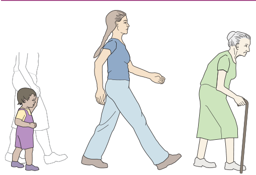
Các chủ đề chính (Major Topics)
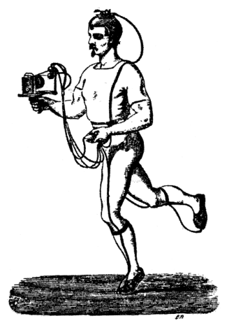
Việc quan sát đi bộ — trọng tâm của chương này — cung cấp thông tin về kết quả của một tập hợp phức tạp các tương tác “ẩn sau hậu trường” giữa các chức năng cảm giác và vận động. Để một người có thể đi bộ, hệ thần kinh trung ương phải tạo ra các hành động vận động phù hợp từ sự tích hợp các đầu vào cảm giác về thị giác, nhận cảm sâu (proprioceptive), và tiền đình. Mặc dù chương này đề cập đến sự tinh vi của các hành động của chi và cơ được thực hiện trong khi đi bộ, nó không đề cập đến khái niệm kiểm soát vận động. Để hiểu sâu hơn về sự phức tạp của kiểm soát vận động khi đi bộ, độc giả được khuyên nên tham khảo các nguồn khác về chủ đề này.98,112,125,161,250
“Nếu một người đi bộ trên mặt đất dọc theo một bức tường với một cây sông tẩm mực gắn trên đầu, đường vệt do cây sông vẽ ra sẽ không thẳng mà zigzag, vì nó hạ xuống thấp khi anh ta cúi người và nâng lên cao khi anh ta đứng thẳng và giơ mình lên.”9 Bản ghi chép sớm này của Aristotle (384–322 TCN) về việc quan sát đi bộ, cùng rất nhiều các bức tranh và tác phẩm điêu khắc từ trước đến nay mô tả những cá nhân đang trong quá trình đi bộ, là minh chứng cho thấy cả việc quan sát thoáng qua lẫn quan sát chi tiết về sự di chuyển đều đã là mối quan tâm xuyên suốt lịch sử.
Bất chấp sự quan tâm từ trước đó, phải đến năm 1836 các anh em nhà Weber236 mới công bố công trình khoa học đáng chú ý đầu tiên về dáng đi, sau khi đã hưởng lợi từ những tiến bộ khoa học do những cá nhân như Galileo Galilei (1564–1642), Giovanni Borelli (1608–1679), và Isaac Newton (1642–1727) mang lại, chỉ để nêu vài tên tiêu biểu. Willhelm, một nhà vật lý và kỹ sư điện, và Eduard, một nhà giải phẫu học và sinh lý học, sử dụng các dụng cụ như đồng hồ bấm giây và thước dây, đã mô tả và đo lường các yếu tố của đi bộ, chẳng hạn như chiều dài bước chân, nhịp bước, khoảng trống giữa bàn chân và mặt đất, và biên độ dịch chuyển theo phương thẳng đứng của cơ thể. Họ cũng định nghĩa các yếu tố cơ bản của chu kỳ dáng đi, chẳng hạn như pha đung đưa, pha đứng, và các giai đoạn hai chân chịu lực. Nhiều thuật ngữ do họ giới thiệu vẫn còn được sử dụng cho đến ngày nay.
Các anh em nhà Weber giả thuyết rằng nguyên lý cơ bản của đi bộ là sử dụng sự gắng sức cơ ở mức thấp nhất — một khái niệm ngày nay được biết là đúng, mặc dù các phương thức chính xác mà cơ thể dùng để giảm thiểu chi tiêu năng lượng vẫn đang được nghiên cứu.159,247,248 Một bản trình bày đầy đủ về công trình của các anh em nhà Weber được công bố năm 1894 và được dịch năm 1992.234,235 Vào thế kỷ XIX, các nhà nghiên cứu khác, chẳng hạn như Marey, Carlet, và Vierordt, đã sử dụng những công nghệ tài tình để mở rộng kiến thức của chúng ta về dáng đi. Được nhắc đến nhiều nhất trong số nhiều phương pháp đo lường độc đáo của Marey và Carlet là những đôi giày có các buồng khí nối với một máy ghi để chỉ ra pha đung đưa và pha đứng của dáng đi (Hình 15.2).130–132 Một ý tưởng khéo léo khác, của Vierordt, là việc sử dụng mực trong các đầu phun nhỏ gắn vào giày và các chi.226 Mực được phun xuống sàn và tường khi cá nhân đi bộ, tạo ra một bản ghi vĩnh viễn về chuyển động.
Cùng thời với đó, những tiến bộ trong lĩnh vực nhiếp ảnh điện ảnh (cinematography) đã tạo ra một phương tiện mạnh mẽ để nghiên cứu và ghi lại các kiểu mẫu động học của con người và động vật khi đi bộ. Muybridge có thể là cá nhân được công nhận nhiều nhất thời bấy giờ trong việc dùng nhiếp ảnh điện ảnh để ghi lại các chuỗi chuyển động. Muybridge có lẽ nổi tiếng nhất vì đã giải quyết một tranh cãi lâu đời về con ngựa đang sải bước. Năm 1872, bằng cách sử dụng nhiếp ảnh chuỗi (sequence photography), ông đã cho thấy cả bốn chân của một con ngựa đang sải bước thực sự cùng rời khỏi mặt đất trong những khoảng thời gian rất ngắn. Muybridge đã tạo ra một bộ sưu tập ảnh ấn tượng về dáng đi của người và động vật, bộ sưu tập này ban đầu được công bố năm 1887 và được tập hợp cùng tái tạo lại năm 1979.154,155
Ban đầu, việc mô tả dáng đi chỉ giới hạn ở các phân tích trên mặt phẳng; chuyển động thường được ghi lại trên mặt phẳng sagittal và ít thường xuyên hơn trên mặt phẳng frontal. Braune và Fisher23,24 được coi là những người đầu tiên, trong giai đoạn từ 1895 đến 1904, thực hiện một phân tích ba chiều toàn diện về một cá nhân đang đi bộ. Bằng cách sử dụng bốn máy quay (hai cặp máy quay ghi lại chuyển động cho mỗi bên cơ thể) và một số ống phát sáng gắn vào các phân đoạn cơ thể khác nhau, họ đã ghi lại được động học khớp theo ba chiều. Họ cũng là những người đầu tiên sử dụng các nguyên lý của cơ học để đo lường các đại lượng động như gia tốc phân đoạn, đặc tính quán tính phân đoạn, và tải trọng giữa các phân đoạn (ví dụ, mô-men và lực khớp). Phân tích mô-men khớp của họ, giới hạn ở pha đung đưa của dáng đi, đã bác bỏ quan niệm trước đó, do Weber và Weber đề xuất năm 1836, rằng chuyển động của chi dưới trong pha đung đưa của dáng đi có thể được giải thích hoàn toàn bằng lý thuyết con lắc bị động.238
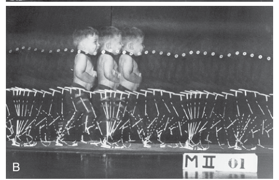
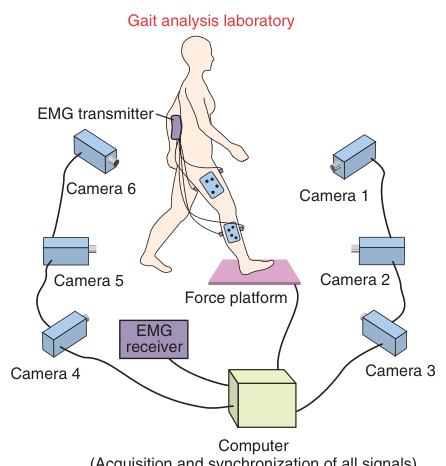
Xuyên suốt thế kỷ XX, sự hiểu biết về đi bộ được nâng cao rất nhiều nhờ nhiều tiến bộ khoa học. Thiết bị ghi lại động học đã tiến hóa từ những máy quay video đơn giản, với phim buộc phải được phân tích gian khổ bằng thước kẻ và thước đo góc, đến các hệ thống vi tính tinh vi cung cấp dữ liệu tọa độ theo thời gian thực của các phân đoạn chi. Giai đoạn tiếp theo trong sự tiến hóa của công nghệ này là sự phát triển của các hệ thống phân tích chuyển động “không dấu hiệu” (markerless) có độ tin cậy cao.185 Các nhà nghiên cứu đáng chú ý đã góp phần mô tả động học của dáng đi bằng nhiều kỹ thuật chụp hình khác nhau, bao gồm Eberhart,62 Murray,149 Inman,96 Winter,241 và Perry.172 Đáng chú ý là công trình của Murray, một nhà vật lý trị liệu kiêm nhà nghiên cứu, người đã công bố nhiều bài báo trong thập niên 1960, 1970, và 1980 mô tả động học của nhiều khía cạnh dáng đi bình thường và bất thường (Hình 15.3).149,151,152,209 Trong số các thành tựu khác, dữ liệu từ nghiên cứu của bà — về động học của đi bộ ở những cá nhân có khuyết tật — đã ảnh hưởng đến thiết kế của các khớp nhân tạo và các chi giả chi dưới.
Tương tự, một sự hiểu biết rộng hơn về động lực học của dáng đi đã trở nên khả thi nhờ sự phát triển của các thiết bị đo các lực xảy ra tại mặt tiếp xúc giữa bàn chân và mặt đất. Amar,5 Elftman,63 Bresler và Frankel,25 cùng Cunningham và Brown50 đều đã có những đóng góp quan trọng cho lĩnh vực này. Với khả năng đo các lực giữa bàn chân và mặt đất, các phương pháp tính toán để tính các lực và mô-men xảy ra tại các khớp của chi dưới trong pha đứng của việc di chuyển đã ra đời.170,243 Sự phát triển của các điện cực bề mặt và trong cơ đã tạo cơ hội ghi lại hoạt động điện của các cơ trong khi đi bộ.72 Khi thông tin này được tích hợp với động học của đi bộ, vai trò mà mỗi cơ đảm nhiệm trong dáng đi có thể được đánh giá tốt hơn và được mô tả một cách khách quan hơn.
Nhiều nhà nghiên cứu, bao gồm Sutherland,212 Perry,172 Inman,96 và Winter,241 đã có những đóng góp đáng chú ý cho việc nghiên cứu điện cơ đồ (EMG) trong khi đi bộ.
Ngày nay, phân tích dáng đi được thực hiện thường quy tại các phòng thí nghiệm sinh cơ học chuyên biệt (Hình 15.4 và VIDEO 15.1 và 15.2). Dữ liệu động học ba chiều được thu nhận bằng cách sử dụng hai hoặc nhiều máy quay tốc độ cao được đồng bộ hóa. Lực phản ứng từ mặt đất được đo bằng các nền lực nhúng trong sàn. Các kiểu mẫu hoạt động cơ được ghi lại bằng các hệ điện cơ đồ đa kênh, thường truyền tín hiệu từ xa (telemetered). Cuối cùng, các lực, mô-men, và công suất khớp chi dưới được tính toán bằng sự kết hợp giữa dữ liệu động học, lực phản ứng từ mặt đất, và các đặc điểm nhân trắc học của cá nhân (Hình 15.5). Các dữ liệu này sau đó được dùng để mô tả và nghiên cứu dáng đi bình thường và bất thường.
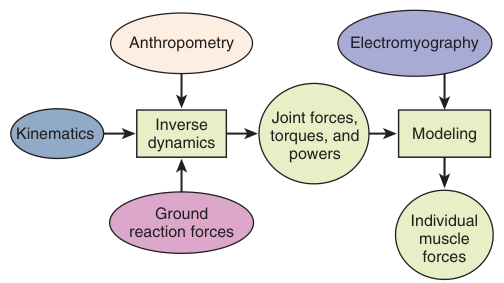
Những cá nhân mắc nhiều bệnh lý khác nhau có thể có tiềm năng hưởng lợi từ các phân tích dáng đi có trang bị thiết bị.42,244 Hiện nay, những người hưởng lợi chính từ công nghệ này là trẻ em bị bại não. Ở nhóm dân số này, phân tích dáng đi có trang bị thiết bị thường được dùng trước phẫu thuật để giúp xác định can thiệp thích hợp. Nó lại được áp dụng sau phẫu thuật để đánh giá kết quả một cách khách quan.74 Các mô tả toàn diện hơn về lịch sử, công cụ, và phương pháp được dùng cho phân tích dáng đi có thể tìm thấy trong các nguồn khác.12,22,212–214,225 Công nghệ tinh vi, như đã mô tả ở trên, cung cấp thông tin chi tiết có thể nâng cao khả năng mô tả và hiểu về đi bộ. Vì công nghệ như vậy hiếm khi có sẵn trong môi trường lâm sàng thông thường, nhà lâm sàng phải thường xuyên dựa vào quan sát trực quan bằng mắt để đánh giá các đặc điểm đi bộ của bệnh nhân của mình.162 Kiểu phân tích quan sát như vậy đòi hỏi kiến thức và sự hiểu biết kỹ lưỡng về dáng đi bình thường. Việc học về đi bộ, như được trình bày ở đây, sẽ là một trải nghiệm sống động và bổ ích hơn nếu việc học chương này được kết hợp với quan sát các kiểu dáng đi của người thân, bạn bè, hàng xóm, và bệnh nhân trong môi trường lâm sàng.
Phần này mô tả các phép đo khoảng cách và thời gian liên quan đến đi bộ.
Đi bộ là kết quả của một chuỗi các chuyển động tuần hoàn. Với đặc tính đó, nó có thể được đặc tả một cách thuận tiện bằng một mô tả chi tiết về đơn vị cơ bản nhất của nó: một chu kỳ dáng đi (Hình 15.6). Chu kỳ dáng đi được bắt đầu ngay khi bàn chân tiếp xúc với mặt đất. Vì việc tiếp đất thông thường được thực hiện bằng gót chân, điểm 0% hay điểm bắt đầu của chu kỳ dáng đi thường được gọi là tiếp đất bằng gót (heel contact) hoặc chạm gót (heel strike). Điểm 100% hay điểm hoàn thành của chu kỳ dáng đi xảy ra ngay khi cùng bàn chân đó một lần nữa tiếp xúc với mặt đất.
Thuật ngữ “tiếp xúc ban đầu” (initial contact) thường được dùng để thay cho “tiếp đất bằng gót” khi một cá nhân lần đầu tiếp xúc với mặt đất bằng một phần của bàn chân khác gót chân, nhưng cho mục đích của chương này, vốn tập trung vào đi bộ bình thường, thuật ngữ “tiếp đất bằng gót” sẽ được sử dụng.
Một sải (stride, đồng nghĩa với một chu kỳ dáng đi) là chuỗi các sự kiện diễn ra giữa hai lần tiếp đất bằng gót liên tiếp của cùng một bàn chân. So với đó, một bước (step) là chuỗi các sự kiện xảy ra giữa hai lần tiếp đất bằng gót liên tiếp của hai bàn chân khác nhau, ví dụ, giữa lần tiếp đất gót phải và gót trái. Do đó, một chu kỳ dáng đi gồm hai bước — một bước trái và một bước phải.
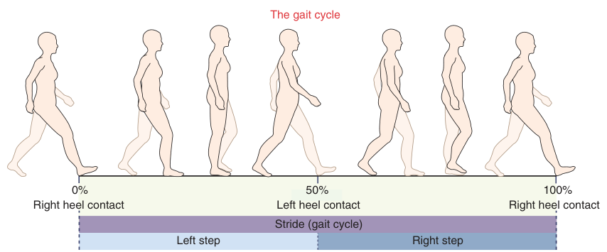
Các mô tả không gian cơ bản nhất của dáng đi bao gồm chiều dài của một sải và chiều dài của một bước (Hình 15.7). Chiều dài sải là khoảng cách giữa hai lần tiếp đất bằng gót liên tiếp của cùng một bàn chân. Chiều dài bước chân, ngược lại, là khoảng cách giữa các lần tiếp đất bằng gót liên tiếp của hai bàn chân khác nhau. So sánh chiều dài bước phải với bước trái có thể giúp đánh giá tính đối xứng của dáng đi giữa các chi dưới (Hình 15.8). Độ rộng bước chân là khoảng cách bên giữa tâm gót của hai lần tiếp bàn chân liên tiếp và trung bình vào khoảng 8 đến 10 cm (xem Hình 15.7).83,135,136 Góc bàn chân, mức độ “xoay ngón chân ra ngoài” (toe-out), là góc giữa đường tiến của cơ thể và trục dọc của bàn chân. Khoảng 5 đến 7 độ được coi là trung bình.136 Mặc dù các trị số chuẩn nêu trên dành cho người trưởng thành, một công trình đáng chú ý92 về dữ liệu thu thập từ 360 trẻ em từ 7 đến 12 tuổi ghi nhận độ rộng bước chân và góc bàn chân bình thường lần lượt là 8 đến 10 cm và 2.5 đến 6 độ — những giá trị tương đối tương tự như ở người trẻ trưởng thành khỏe mạnh.
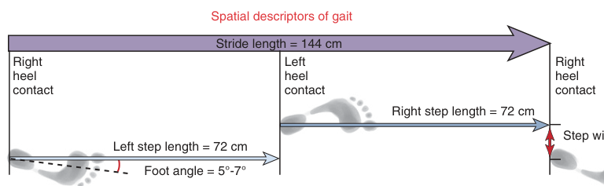
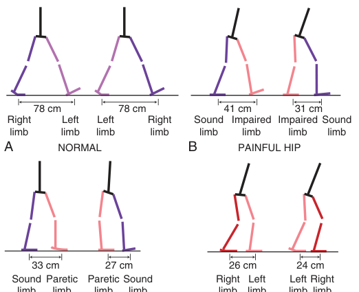
Mô tả thời gian cơ bản nhất của dáng đi là nhịp bước — số bước mỗi phút — còn được gọi là tần số bước (step rate). Các mô tả thời gian khác của dáng đi là thời gian sải (thời gian cho một chu kỳ dáng đi đầy đủ) và thời gian bước (thời gian để hoàn thành một bước phải hoặc một bước trái). Lưu ý rằng với dáng đi đối xứng, thời gian bước có thể được suy ra từ nhịp bước (nghĩa là thời gian bước là nghịch đảo của nhịp bước).
Ở người trưởng thành khỏe mạnh, một chu kỳ dáng đi (nghĩa là hai bước liên tiếp) mất nhiều hơn một chút so với 1 giây và đi được khoảng 1.44 m (4.5 feet), cho tốc độ đi bộ 1.37 m/sec. Dữ liệu trong Bảng 15.1 chỉ ra rằng, ở tốc độ đi bộ được lựa chọn tự do, phụ nữ thể hiện tốc độ đi bộ chậm hơn, chiều dài bước chân ngắn hơn, và nhịp bước nhanh hơn nam giới. Những khác biệt này có thể một phần phản ánh sự chênh lệch về nhân trắc học giữa hai giới. Tuy nhiên, ngay cả khi được cân đối về nhân trắc học với nam giới, phụ nữ vẫn thể hiện nhịp bước cao hơn và chiều dài bước chân ngắn hơn nam giới khi đi ở cùng tốc độ.26,66,152 Dữ liệu kinh điển trong Bảng 15.1 được rút ra từ hơn 2300 người đi bộ ngoài trời ở một thành phố lớn và không hề hay biết rằng đặc điểm dáng đi của họ đang được đo. Bảng 15.2 cung cấp dữ liệu từ một số lượng nhỏ cá nhân đi trong nhà trên một lối đi có trang bị thiết bị, dùng để đo chính xác và tin cậy các đặc điểm không gian và thời gian của dáng đi. Không giống như những người đi bộ trong các nghiên cứu ở Bảng 15.1, những cá nhân này biết rằng đặc điểm đi bộ của họ đang được đo, điều này có thể một phần giải thích cho các khác biệt nhỏ ghi nhận được giữa dữ liệu của hai bảng. Một bản tóm tắt của một tập dữ liệu lớn được phân tầng theo tuổi và giới từ 23,111 cá nhân khỏe mạnh đi qua một đoạn đường ngắn chỉ ra vận tốc đi bộ trung bình là 1.43 m/sec ở nam giới trong độ tuổi 30 đến 60 và vận tốc đi bộ trung bình dao động từ 1.31 đến 1.39 m/sec ở nữ giới trong cùng các nhóm tuổi. Ở cả nam và nữ, vận tốc đi bộ giảm dần sau 60 tuổi (tập dữ liệu đầy đủ trong Bảng điện tử 15.1).21
Bảng 15.1 — Dữ liệu chuẩn về tốc độ đi bộ, tần số bước, và chiều dài bước chân
| Thông số | Drillis (1961)60 (New York City) | Molen (1973)143 (Amsterdam) | Finley và Cody (1970)66 (Philadelphia) | Trung bình của cả hai giới và 3 thành phố |
|---|---|---|---|---|
| Tốc độ đi bộ (m/sec) | 1.46* | 1.39 (nam), 1.27 (nữ) | 1.37 (nam), 1.24 (nữ) | 1.37 |
| Tần số bước (bước/giây) | 1.9* | 1.79 (nam), 1.88 (nữ) | 1.84 (nam), 1.94 (nữ) | 1.87 |
| Chiều dài bước chân (m) | 0.76* | 0.77 (nam), 0.67 (nữ) | 0.74 (nam), 0.63 (nữ) | 0.72 |
Dữ liệu thu được từ hơn 2300 người đi bộ không hay biết mình đang được quan sát khi đi. *Nam và nữ được tính trung bình chung với nhau cho các dữ liệu này.
Bảng 15.2 — Dữ liệu lựa chọn về các thông số thời gian và không gian của dáng đi rút ra từ những cá nhân đi bộ trong môi trường phòng thí nghiệm trên một lối đi có trang bị thiết bị*
| Tốc độ đi bộ (m/sec) | Nhịp bước† (bước/phút) | Chiều dài sải‡ (m) | Độ rộng bước chân (cm) | Góc bàn chân (độ) | |
|---|---|---|---|---|---|
| Marchetti và cộng sự (2008)129 | 1.43 (1.35–1.51) | 119.1 (115.1–123.1) | 0.707 (0.678–0.742) và 0.726 (0.691–0.761) (bước trái và bước phải) | 8.1 (7.0–9.2) | — |
| Hollman và cộng sự (2007)91 | 1.48 ± 0.15 | — | — | — | — |
| Youdas và cộng sự (2006)246 | 1.40 ± 0.13 | 119.6 ± 7.6 | 1.42 ± 0.13 | — | — |
| Menz và cộng sự (2004)136 | 1.43 ± 0.14 | 110.8 ± 6.9 | 0.77 ± 0.06 | 8.6 ± 3.2 | 6.7 ± 5.0 |
| Bilney và cộng sự (2003)19 | 1.46 ± 0.16 | 114.7 ± 6.4 | 1.53 ± 0.14 | — | — |
| Grabiner và cộng sự (2001)83§ | — | — | — | 10.8 ± 2.7 | 8.7 ± 2.3 |
*Dữ liệu là trung bình ± độ lệch chuẩn, ngoại trừ nhóm Marchetti và cộng sự, dữ liệu của họ là trung bình và khoảng tin cậy 95%. Tất cả dữ liệu là của người trưởng thành khỏe mạnh, và tất cả các nhóm đều bao gồm cả nam và nữ. †Chia nhịp bước cho 60 để có tần số bước theo bước/giây. ‡Dữ liệu của Marchetti và cộng sự là cho chiều dài bước trái và bước phải, và dữ liệu của Menz và cộng sự là cho chiều dài bước chân. §Dữ liệu cho hai nhóm cá nhân khác nhau.
Các thiết bị tinh vi, chẳng hạn như lối đi đo lường và các công tắc bàn chân, hiện có để thực hiện các phép đo không gian và thời gian về vị trí đặt bàn chân trong dáng đi.19,92,129,246 Tuy nhiên, với phần lớn ứng dụng lâm sàng, các thông tin này có thể được đo bằng những công cụ dễ có sẵn cùng một chút sáng tạo. Tốc độ đi bộ trung bình có thể được đo bằng một đồng hồ bấm giây và một quãng đường đã biết. Chiều dài bước chân và độ rộng bước chân có thể được đo bằng các dấu mực do giày hoặc bàn chân để lại trên một cuộn giấy trải trên sàn. Kỹ thuật này đặc biệt hiệu quả để ghi lại các kiểu dáng đi bất thường, bao gồm cả sự bất đối xứng về chiều dài bước chân.
Về mặt lâm sàng, các phép đo đơn giản về tốc độ và quãng đường đi bộ có thể hữu ích trong việc theo dõi tiến bộ chức năng hoặc ghi lại các hạn chế chức năng. Kết quả thu được từ một bệnh nhân có thể được so sánh với các giá trị bình thường được cung cấp trong Bảng 15.1 và 15.2 hoặc với các tiêu chuẩn tối thiểu cần thiết để thực hiện một nhiệm vụ cụ thể, chẳng hạn như băng qua đường trong khoảng thời gian đèn tín hiệu cho phép.66,116,178 Dưới đây là hai tiêu chuẩn tối thiểu được đề xuất, dựa trên các hoạt động sống trong cộng đồng: khả năng đi 300 m (1000 feet) trong dưới 11.5 phút (tốc độ đi bộ 0.45 m/sec hay 1 mph); khả năng đi với tốc độ 1.3 m/sec (3 mph) trong quãng đường 13 đến 27 m (42 đến 85 feet) để băng qua đường một cách an toàn.
Giá trị bình thường cho đi bộ dựa trên dữ liệu từ Bảng 15.1 (Normal Values for Walking Based on Data from Table 15.1)
Dữ liệu trong Bảng 15.1 và 15.2 được thu thập từ những cá nhân đi ở tốc độ họ lựa chọn tự do, tốc độ này có thể không phải lúc nào cũng đủ nhanh để đến đích trong khoảng thời gian mong muốn. Khi cần tăng tốc độ đi bộ, có hai chiến lược sẵn có: tăng chiều dài sải (hoặc bước) và tăng nhịp bước (Hình 15.9). Thông thường một cá nhân kết hợp cả hai chiến lược cho đến khi đạt được chiều dài bước hợp lý dài nhất. Từ điểm đó trở đi, sự tăng thêm của tốc độ đi bộ chỉ liên quan đến sự tăng nhịp bước. Vì vậy cần nhấn mạnh lại rằng tất cả các giá trị (các biến không gian, thời gian, động học, và động lực học) thu được từ các phép đo đi bộ đều thay đổi tùy theo tốc độ đi bộ. Để tham chiếu và diễn giải đúng, các báo cáo về đặc điểm dáng đi phải luôn bao gồm tốc độ đi bộ mà tại đó dữ liệu được thu thập.
Bảng điện tử 15.1 — Tốc độ dáng đi theo giới và nhóm tuổi (Gait Speed by Sexes and Age Groups)
| Giới/Nhóm tuổi (tuổi) | Nghiên cứu (n) | Người tham gia (n) | Tốc độ dáng đi (cm/sec)* |
|---|---|---|---|
| Nam (20–29) | — | — | 135.8 (127.0 đến 144.7) |
| Nam (30–39) | — | — | 143.3 (131.6 đến 155.0) |
| Nam (40–49) | — | — | 143.4 (135.3 đến 151.4) |
| Nam (50–59) | — | — | 143.3 (137.9 đến 148.8) |
| Nam (60–69) | — | — | 133.9 (126.6 đến 141.2) |
| Nam (70–79) | — | — | 126.2 (121.0 đến 132.2) |
| Nam (80–99) | — | — | 96.8 (83.4 đến 110.1) |
| Nữ (20–29) | — | — | 134.1 (123.9 đến 144.3) |
| Nữ (30–39) | — | — | 133.7 (119.3 đến 148.2) |
| Nữ (40–49) | — | — | 139.0 (133.9 đến 141.1) |
| Nữ (50–59) | — | — | 131.3 (122.2 đến 140.5) |
| Nữ (60–69) | — | — | 124.1 (118.3 đến 130.0) |
| Nữ (70–79) | — | — | 113.2 (107.2 đến 119.2) |
| Nữ (80–99) | — | — | 94.3 (85.2 đến 103.4) |
*Dữ liệu từ một tổng quan có hệ thống bao gồm 41 nghiên cứu và 23,111 người tham gia.21 Dữ liệu là trung bình và khoảng tin cậy 95%.
Xảy ra khi bàn chân phải đang ở trên không, được đưa tiến về phía trước cho lần tiếp đất kế tiếp với mặt đất. Ở tốc độ đi bộ bình thường, pha đứng chiếm khoảng 60% chu kỳ dáng đi, và pha đung đưa chiếm 40% còn lại.
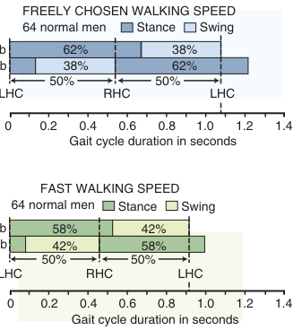
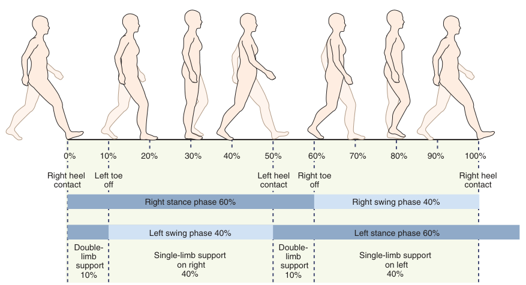
Để giúp mô tả các sự kiện diễn ra trong chu kỳ dáng đi, người ta quen thuộc chia nhỏ chu kỳ dáng đi từ 0% đến 100%. Như đã nêu trước đó, việc gót hoặc bàn chân tiếp xúc với mặt đất được coi là điểm bắt đầu của chu kỳ dáng đi (0%), và lần tiếp đất tiếp theo của cùng bàn chân đó được coi là điểm kết thúc của chu kỳ dáng đi (100%). Xuyên suốt chương này, dáng đi được mô tả bằng cách sử dụng chi dưới phải làm tham chiếu. Một chu kỳ dáng đi đầy đủ của chi dưới phải có thể được chia thành hai pha chính: pha đứng và pha đung đưa (Hình 15.10).
Pha đứng (từ khi gót chân phải chạm đất đến khi ngón chân phải rời đất) diễn ra khi bàn chân phải đang ở trên mặt đất, đỡ trọng lượng của cơ thể.
Pha đung đưa (từ khi ngón chân phải rời đất đến lần gót chân phải chạm đất kế tiếp).
Chu kỳ dáng đi
Trong một chu kỳ dáng đi, cơ thể trải qua hai giai đoạn hai chân chịu lực (khi cả hai bàn chân cùng tiếp xúc với mặt đất) và hai giai đoạn chịu lực một chân (khi chỉ có một bàn chân ở trên mặt đất) (xem Hình 15.10). Giai đoạn hai chân chịu lực đầu tiên được quan sát ở 0% đến 10% của chu kỳ dáng đi. Trong khoảng thời gian đó, trọng lượng của cơ thể đang được chuyển từ chi dưới trái sang chi dưới phải. Chi dưới phải sau đó ở trong tư thế chịu lực một chân cho đến khi 50% của chu kỳ dáng đi đã được đạt đến. Trong thời gian đó, chi dưới trái đang ở trong pha đung đưa của nó, được đưa tiến về phía trước. Giai đoạn hai chân chịu lực thứ hai diễn ra ở 50% đến 60% của chu kỳ dáng đi và phục vụ mục đích chuyển trọng lượng của cơ thể từ chi dưới phải sang chi dưới trái. Cuối cùng, ở 60% đến 100% của chu kỳ dáng đi, cơ thể một lần nữa ở trong tư thế chịu lực một chân, lần này là trên chi dưới trái. Giai đoạn chịu lực một chân bên trái này tương ứng với pha đung đưa của chi dưới phải.
Khi tốc độ dáng đi tăng lên, phần trăm chu kỳ dáng đi được dành cho các giai đoạn hai chân chịu lực trở nên ngắn hơn (xem Hình 15.9). Các vận động viên đi bộ thi đấu (race walkers) nhằm đi càng nhanh càng tốt trong khi vẫn luôn giữ một bàn chân tiếp xúc với mặt đất. Đối với những vận động viên này, tốc độ lớn hơn được đạt được bằng cách tăng nhịp bước và chiều dài sải, và bằng cách giảm thiểu các giai đoạn hai chân chịu lực đến mức thời gian của pha đứng và pha đung đưa gần như bằng nhau. Trong khi tốc độ đi bộ tối đa ở những người trưởng thành từ 20 đến 50 tuổi vào khoảng 2.4 đến 2.5 m/sec (5.5 đến 5.7 mph),20 thì tốc độ đi bộ trong môn đi bộ thi đấu có thể vượt quá 3.3 m/sec (7.5 mph).150 Trong khi chạy, các giai đoạn hai chân chịu lực biến mất hoàn toàn, nhường chỗ cho các giai đoạn khi cả hai bàn chân cùng rời khỏi mặt đất. Sự chuyển tiếp từ đi bộ sang chạy thường diễn ra ở nhịp bước khoảng 180 bước/phút hoặc ở tốc độ khoảng 2.1 đến 2.2 m/sec (4.8 đến 5.0 mph).56,191 Trên tốc độ đó, chạy tiết kiệm năng lượng hơn đi.196 Ngược lại, ở tốc độ đi bộ chậm, các giai đoạn hai chân chịu lực chiếm một phần trăm ngày càng lớn của chu kỳ dáng đi. Một dáng đi chậm hơn mang lại độ ổn định lớn hơn vì cả hai bàn chân cùng ở trên mặt đất trong một phần trăm lớn hơn của chu kỳ. Thực tế, tốc độ giảm, chiều dài bước chân ngắn hơn và nhịp bước chậm hơn thường thấy ở những người cao tuổi có nỗi sợ ngã hoặc thiếu hụt sức mạnh cơ có tác dụng cải thiện độ ổn định của dáng đi và phòng ngừa té ngã.107
Năm sự kiện cụ thể thường được mô tả trong pha đứng: tiếp đất bằng gót (heel contact), bàn chân đặt phẳng (foot flat), pha đứng giữa (mid stance), gót chân rời đất (heel off, hay gót chân nhấc lên — heel rise), và nhấc ngón chân (toe off) (Hình 15.11 và Bảng 15.3). Tiếp đất bằng gót được định nghĩa là khoảnh khắc gót chân tiếp xúc với mặt đất, ở 0% của chu kỳ dáng đi. Bàn chân đặt phẳng tương ứng với khoảnh khắc toàn bộ mặt lòng bàn chân tiếp xúc với mặt đất. Sự kiện này diễn ra ở khoảng 8% của chu kỳ dáng đi. Pha đứng giữa thường được định nghĩa là điểm mà tại đó trọng lượng của cơ thể đi trực tiếp qua chi dưới đang chống đỡ. Nó cũng được định nghĩa là thời điểm bàn chân của chi dưới đang ở trong pha đung đưa đi qua chi dưới đang ở trong pha đứng (tức là hai bàn chân nằm cạnh nhau). Một định nghĩa thứ ba về pha đứng giữa là thời điểm mỏm lớn của xương đùi nằm phía trên theo phương thẳng đứng so với điểm giữa của bàn chân đang chống đỡ trong mặt phẳng sagittal. Trong thực tế, cả ba định nghĩa này đều tương ứng với khoảng 30% của chu kỳ dáng đi, hay 50% của pha đứng. Gót chân rời đất, thời điểm của nó thay đổi đáng kể giữa các cá nhân, diễn ra ở đâu đó giữa 30% và 40% của chu kỳ dáng đi. Nó tương ứng với khoảnh khắc gót chân rời khỏi mặt đất. Nhấc ngón chân, diễn ra ở 60% của chu kỳ dáng đi, được định nghĩa là khoảnh khắc các ngón chân rời khỏi mặt đất. Một khoảng thời gian được gọi là đẩy (push off) cũng thường được sử dụng. Khoảng thời gian này tương ứng gần đúng với chuyển động gập lòng cổ chân ở 40% đến 60% của chu kỳ dáng đi.
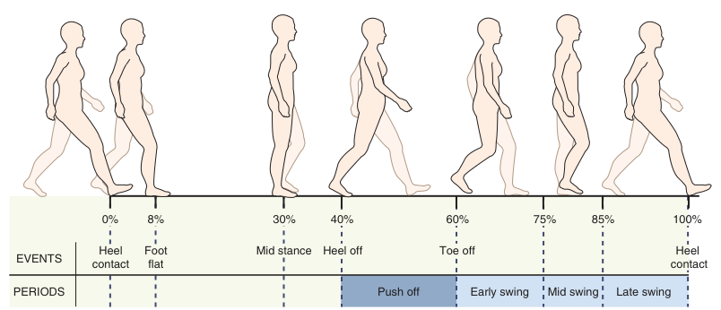
| Các pha (Phases) | Các sự kiện (Events) | Phần trăm chu kỳ (Percentage of Cycle) | Các sự kiện của chi đối bên (Events of Opposite Limb) |
|---|---|---|---|
| Đứng (Stance) | Tiếp đất bằng gót | 0 | — |
| Bàn chân đặt phẳng | 8 | — | |
| Pha đứng giữa | 30 | Đung đưa giữa (25–35%) | |
| Gót chân rời đất | 30–40 | — | |
| Nhấc ngón chân | 60 | Tiếp đất bằng gót | |
| Đung đưa (Swing) | Đung đưa sớm | 60–75 | Nhấc ngón chân |
| Đung đưa giữa | 75–85 | Pha đứng giữa (80%) | |
| Đung đưa muộn | 85–100 | Gót chân rời đất (80–90%); tiếp đất bằng gót |
Sự tồn tại của các hệ thống thuật ngữ khác nhau có thể gây nhầm lẫn, đặc biệt khi có nhiều người sử dụng chúng thay thế cho nhau. Trong chương này, để loại bỏ sự nhầm lẫn, thuật ngữ được dùng để mô tả chu kỳ dáng đi phần lớn được bổ sung bởi thời điểm của các sự kiện tính theo phần trăm của chu kỳ dáng đi.
Mặc dù có một lượng biến thiên đáng kể trong cách mô tả pha đung đưa của dáng đi, pha này theo truyền thống được chia thành ba đoạn: đung đưa sớm, đung đưa giữa, và đung đưa muộn (xem Hình 15.11). Đung đưa sớm là khoảng thời gian tính từ thời điểm nhấc ngón chân đến đung đưa giữa (60% đến 75% của chu kỳ dáng đi). Đung đưa giữa tương ứng với khoảng thời gian từ hơi trước đến hơi sau sự kiện pha đứng giữa của chi dưới đối bên, khi bàn chân của chi đang đung đưa đi qua cạnh bàn chân của chi đang chống đỡ (75% đến 85% của chu kỳ dáng đi). Đung đưa muộn là khoảng thời gian tính từ kết thúc đung đưa giữa đến khi bàn chân tiếp xúc với mặt đất (85% đến 100% của chu kỳ dáng đi).
Một thuật ngữ thay thế, do Perry và Burnfield đề xuất,173 gồm tám giai đoạn chia chu kỳ dáng đi thành ba nhiệm vụ (Hình 15.12). Năm giai đoạn nằm trong pha đứng gồm: tiếp xúc ban đầu (initial contact), phản hồi chịu tải (loading response), pha đứng giữa (mid stance), pha đứng cuối (terminal stance), và tiền đung đưa (pre swing). Pha đung đưa gồm ba giai đoạn: đung đưa ban đầu (initial swing), đung đưa giữa (mid swing), và đung đưa cuối (terminal swing). Perry và Burnfield còn phân chia chu kỳ dáng đi dựa trên ba nhiệm vụ: chấp nhận trọng lượng (gồm tiếp xúc ban đầu và phản hồi chịu tải), chịu lực một chân (gồm pha đứng giữa và pha đứng cuối), và tiến chi đung đưa (gồm tiền đung đưa cũng như đung đưa ban đầu, đung đưa giữa, và đung đưa cuối).
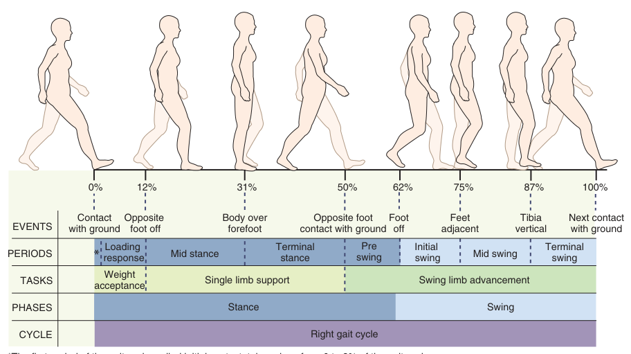
(nhãn trong hình: CÁC SỰ KIỆN — EVENTS; CÁC PHA — PHASES; CÁC NHIỆM VỤ — TASKS; CÁC GIAI ĐOẠN — PERIODS; CHU KỲ — CYCLE; chu kỳ dáng đi phải — Right gait cycle; tiếp xúc với mặt đất — Contact with ground; bàn chân đối bên rời đất — Opposite foot off; cơ thể đi qua phần trước bàn chân — Body over forefoot; bàn chân đối bên tiếp xúc với mặt đất — Opposite foot contact with ground; bàn chân rời đất — Foot off; pha đứng giữa — Mid stance; pha đứng cuối — Terminal stance; đung đưa ban đầu — Initial swing; tiền đung đưa — Pre swing; phản hồi chịu tải — Loading response; đung đưa giữa — Mid swing; đung đưa cuối — Terminal swing; hai bàn chân cạnh nhau — Feet adjacent; xương chày thẳng đứng — Tibia vertical; lần tiếp xúc với mặt đất kế tiếp — Next contact with ground; chịu lực một chân — Single limb support; chấp nhận trọng lượng — Weight acceptance; tiến chi đung đưa — Swing limb advancement; pha đứng — Stance; pha đung đưa — Swing; 62%; 75%; 87%; 31%; 50%; 0%; 100%; 12%).
*Giai đoạn đầu tiên của chu kỳ dáng đi, gọi là tiếp xúc ban đầu, diễn ra từ 0 đến 2% của chu kỳ dáng đi.
Các sự kiện của chu kỳ dáng đi có thể được quan sát bằng cách xem những người đang đi bộ trong hoàn cảnh bình thường (đường phố, trung tâm thương mại, sân bay). Giống như bất kỳ kỹ năng lâm sàng nào, phân tích dáng đi bằng quan sát sẽ tiến bộ nhờ luyện tập. Việc quan sát lặp đi lặp lại những người có kiểu dáng đi bình thường giúp rèn giũa khả năng nhận biết các biến thể bình thường của dáng đi và xác định các lệch lạc bất thường của dáng đi. Những cơ hội thực hành kỹ năng này cùng với một người đã được đào tạo về phân tích dáng đi bằng quan sát sẽ giúp các kỹ năng này càng thêm sắc bén.
Trong khi đi bộ, cơ thể bị dịch chuyển tuyến tính là kết quả của sự tổng hợp các chuyển động quay góc tại các khớp của chi dưới, điều này không khác gì một chiếc ô tô tiến về phía trước nhờ chuyển động quay của các bánh xe của nó. Do đó, các chuyển động tại các khớp của chi dưới được mô tả như là một hàm của chuyển động quay góc.
Mặc dù chuyển động quay góc của khớp diễn ra chủ yếu trong mặt phẳng sagittal, những chuyển động quan trọng, dù có biên độ nhỏ hơn, cũng diễn ra trong các mặt phẳng frontal và ngang. Điều thú vị là, chính động học ngoài mặt phẳng sagittal thường tinh tế này lại cung cấp những manh mối tốt nhất để phân biệt kiểu dáng đi giữa hai giới, ngay cả đối với những người quan sát chưa được đào tạo. Dữ liệu gần đây chỉ ra rằng trong mặt phẳng frontal, phụ nữ đi bộ với chuyển động khung chậu cùng chuyển động dạng/khép háng liên quan lớn hơn trong khi giữ thân mình và đầu ổn định hơn. Ngoài ra, trong mặt phẳng ngang, phụ nữ thể hiện lượng xoay trong háng lớn hơn trong nửa đầu của pha đứng cũng như biên độ xoay tổng thể của khung chậu và thân mình và biên độ đung đưa tay lớn hơn.26 Phần lớn trong suốt chương này, chuyển động quay góc diễn ra tại bản thân khớp được mô tả (tức là chuyển động tương đối của một xương so với xương khác). Trong một số trường hợp (ví dụ, đối với chuyển động mặt phẳng sagittal của khung chậu), chuyển động của các xương trong không gian được mô tả mà không xét đến chuyển động tại khớp. Do đó người đọc cần lưu ý phân biệt khi nào một đoạn bàn luận thuộc về động học khớp và khi nào thuộc về động học xương.
Cuối cùng, trong khi dữ liệu được trình bày trong các phần sau thường được diễn đạt dưới dạng một giá trị duy nhất (một đường biểu diễn duy nhất trong các hình), cần nhận thức rằng các giá trị này phản ánh một trung bình tổng hợp trên nhiều người. Mặc dù điều này có thể không phải lúc nào cũng được báo cáo, cần hiểu rõ rằng một lượng biến thiên bình thường đáng kể tồn tại giữa các cá nhân. Các biến thiên bình thường giữa các chu kỳ dáng đi liên tiếp cũng xảy ra ngay trong cùng một cá nhân, mỗi chu kỳ dáng đi không hoàn toàn giống chu kỳ ngay trước đó, với các biến thiên nhỏ liên tục xảy ra về thời điểm và/hoặc biên độ của chuyển động.124,180 Lượng biến thiên dáng đi giữa các sải phản ánh chất lượng của hệ thần kinh cơ và cũng chịu ảnh hưởng của nhận thức.94 Có ngày càng nhiều tài liệu ghi nhận biến thiên dáng đi ở người trẻ và người cao tuổi trong nhiều tình trạng sức khỏe khác nhau, một phần là nhằm xác định các thông số dáng đi phù hợp nhất có thể mang giá trị trị liệu hoặc có thể dự báo những người có nguy cơ cao hơn bị té ngã và mất chức năng trong tương lai.218,220
Chuyển động trong mặt phẳng sagittal của khung chậu là nhỏ và được mô tả ở đây như là chuyển động của bản thân cấu trúc xương. Ngược lại, động học mặt phẳng sagittal của các khớp háng, gối, cổ chân, tarsometatarsal, và metatarsophalangeal thứ nhất có biên độ lớn hơn và được mô tả như là chuyển động khớp. Trong phần này, cũng như trong toàn bộ chương, chu kỳ dáng đi được mô tả từ lần tiếp đất gót phải đến lần tiếp đất gót phải kế tiếp.
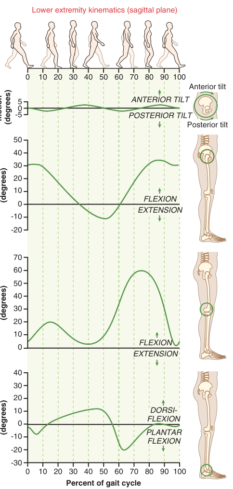
Chuyển động của khung chậu trong mặt phẳng sagittal được mô tả như các chuyển động quay cung nhỏ theo hướng về trước và về sau quanh một trục trong–ngoài đi qua các khớp háng (xem Chương 12). (Hướng nghiêng của khung chậu được dựa trên chuyển động của các mào chậu.) Vị trí trung tính (0 độ nghiêng khung chậu) được định nghĩa là hướng của khung chậu trong tư thế đứng thả lỏng. Vì khung chậu là một cấu trúc tương đối cứng, cả hai mào chậu được coi là chuyển động cùng nhau. Trong khi đi bộ ở tốc độ bình thường, lượng nghiêng khung chậu về trước và về sau là nhỏ (tức là tổng cộng khoảng 2 đến 4 độ). Mặc dù chuyển động của khung chậu được mô tả như là chuyển động của một cấu trúc độc lập “tách rời”, động học thực ra diễn ra chủ yếu tại các khớp háng (thông qua gập và duỗi khung chậu-trên-xương đùi — pelvic-on-femoral flexion and extension) và, ở mức độ nhỏ hơn, tại các khớp thắt lưng-cùng (thông qua gập và duỗi khung chậu-trên-cột sống thắt lưng — pelvic-on-lumbar flexion and extension).
Kiểu chuyển động của khung chậu trong suốt chu kỳ dáng đi đầy đủ giống một sóng sin với hai chu kỳ đầy đủ (Hình 15.13A). Ở lần tiếp đất gót phải, khung chậu ở trong vị trí gần trung tính. Từ 0% đến 10% của chu kỳ dáng đi, tức là một giai đoạn hai chân chịu lực, một lượng nhỏ nghiêng khung chậu về sau xảy ra. Sau đó khung chậu bắt đầu nghiêng về phía trước trong giai đoạn chịu lực một chân, đạt đến vị trí nghiêng khung chậu về trước ở mức nhẹ ngay sau pha đứng giữa (30% của chu kỳ dáng đi). Trong nửa sau của pha đứng, khung chậu nghiêng về phía sau cho đến ngay sau nhấc ngón chân. Trong đung đưa sớm và đung đưa giữa (60% đến 85% của chu kỳ dáng đi), khung chậu một lần nữa nghiêng về phía trước trước khi bắt đầu nghiêng theo hướng về sau trong đung đưa muộn.
Nói chung, độ nghiêng khung chậu tăng theo tốc độ di chuyển.96 Tuy nhiên, sự biến thiên đáng kể về lượng, thời điểm, và hướng nghiêng đã được ghi nhận qua các tốc độ đi bộ khác nhau và giữa các cá nhân. Biên độ nghiêng khung chậu lớn hơn thường được ghi nhận ở tốc độ đi bộ nhanh hơn có tác dụng làm tăng chiều dài chi chức năng, mà đến lượt nó lại có tác dụng làm tăng chiều dài bước chân.
Độ nghiêng khung chậu trong mặt phẳng sagittal khi đi bộ là do tổng hợp các lực bị động và chủ động được tạo ra bởi bao khớp háng và các cơ gập và duỗi háng. Trong các tình huống bệnh lý, những người có co rút gập háng rõ rệt thể hiện độ nghiêng khung chậu về trước quá mức trong nửa sau của pha đứng (tức là ở 30% đến 60% của chu kỳ dáng đi). Điều này được quy cho sự tăng căng bị động trong các cấu trúc phía trước khớp háng bị ngắn lại, tạo ra một xu hướng nghiêng khung chậu về trước khi việc duỗi háng tối đa được cố gắng thực hiện. Một độ nghiêng khung chậu về trước quá mức có thể, ở một mức độ nào đó, bù đắp cho sự thiếu duỗi háng bị động trong phần sau của pha đứng và thường đi kèm với tăng độ ưỡn cột sống thắt lưng (lumbar lordosis).
Ở tốc độ đi bộ điển hình, khớp háng đang gập khoảng 30 độ tại lần tiếp đất gót (Hình 15.13B và VIDEO 15.3). Khi cơ thể tiến về phía trước qua bàn chân đang cố định, khớp háng duỗi ra. Độ duỗi háng tối đa khoảng 10 độ được đạt đến trước nhấc ngón chân. Sự gập háng được khởi phát trong giai đoạn đẩy, và khớp háng ở khoảng 0 độ gập vào lúc nhấc ngón chân (60% của dáng đi). Trong pha đung đưa, khớp háng gập thêm để đưa chi dưới tiến về phía trước cho lần đặt bàn chân kế tiếp. Độ gập tối đa (hơi hơn 30 độ) được đạt đến ngay trước lần tiếp đất gót. Lưu ý rằng tại lần tiếp đất gót, khớp háng đã bắt đầu duỗi để chuẩn bị cho việc chấp nhận trọng lượng. Nhìn chung, khoảng 30 độ gập và 10 độ duỗi (so với vị trí trung tính giải phẫu) là cần thiết tại khớp háng cho việc đi bộ bình thường.75,188 Cũng như đối với tất cả các khớp của chi dưới, biên độ chuyển động háng tỷ lệ thuận với tốc độ đi bộ.
Những người có hạn chế khả năng vận động háng trong mặt phẳng sagittal có thể xuất hiện như đang đi bộ mà không có lệch lạc dáng đi, vì chuyển động của khung chậu và cột sống thắt lưng, vốn bù đắp cho chuyển động háng bị giảm, ban đầu có thể không được nhận thấy. Duỗi háng biểu kiến, có thể phát hiện bằng các kỹ năng quan sát bằng mắt tốt, có thể đạt được thông qua độ nghiêng khung chậu về trước cùng với sự tăng độ ưỡn thắt lưng đi kèm. Ngược lại, một độ nghiêng khung chậu về sau kèm theo sự làm phẳng cột sống thắt lưng tạo ra gập háng biểu kiến. Để di chuyển, những người có khớp háng dính (tức là dính khớp — ankylosed) sử dụng độ nghiêng khung chậu về sau và về trước ở mức quá mức như một phương tiện để bù đắp cho sự vắng mặt của khả năng vận động háng trong mặt phẳng sagittal (Hình 15.14).81,219 Vì các chuyển động của khung chậu và cột sống thắt lưng được liên kết cơ học với nhau tại khớp sacroiliac, việc nghiêng khung chậu quá mức khi đi bộ có thể làm tăng ứng suất lên cột sống thắt lưng. Những ứng suất này, khi lặp lại qua nhiều chu kỳ dáng đi, có thể cuối cùng gây kích thích các cấu trúc nằm trong vùng này, dẫn đến đau lưng dưới.
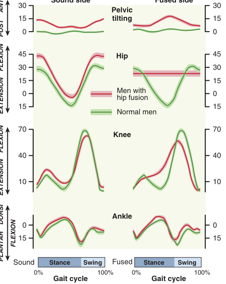
Kiểu động học của khớp gối phức tạp hơn một chút so với khớp háng (Hình 15.13C và VIDEO 15.3).75,188 Tại lần tiếp đất gót, khớp gối đang gập khoảng 5 độ, và nó tiếp tục gập thêm 10 đến 15 độ trong 15% đầu của chu kỳ dáng đi. Sự gập gối nhẹ này, được kiểm soát bởi hoạt động eccentric của quadriceps (cơ tứ đầu đùi), nhằm mục đích hấp thụ sốc và chấp nhận trọng lượng khi trọng lượng cơ thể được chuyển dần dần sang chi dưới này. Sau giai đoạn gập ban đầu, khớp gối tiến gần đến tư thế duỗi gần hoàn toàn cho đến khoảng lúc gót chân rời đất (diễn ra ở 30% đến 40% của chu kỳ dáng đi). Tại thời điểm này, khớp gối bắt đầu gập, đạt đến khoảng 35 độ gập vào lúc nhấc ngón chân (60% của chu kỳ dáng đi). Độ gập gối tối đa khoảng 60 độ được đạt đến vào thời điểm bắt đầu của đung đưa giữa (75% của chu kỳ dáng đi). Sự gập gối trong đung đưa sớm nhằm rút ngắn chiều dài của chi dưới, tạo điều kiện cho ngón chân qua khỏi mặt đất. Trong đung đưa giữa và đung đưa muộn, khớp gối duỗi đến ngay sát tư thế duỗi hoàn toàn trước khi bắt đầu gập nhẹ để chuẩn bị cho lần tiếp đất gót.
Chức năng bình thường của khớp gối khi đi bộ trên một mặt phẳng đòi hỏi biên độ chuyển động từ gần duỗi hoàn toàn đến khoảng 60 độ gập. Một hạn chế về duỗi gối (tức là co rút gập gối) dẫn đến một chi ngắn hơn về mặt chức năng, ảnh hưởng đến động học của cả chi chống đỡ lẫn chi đung đưa. Chi chống đỡ, thiếu duỗi gối hoàn toàn, phải giữ một vị thế “khom” một phần, liên quan đến háng, gối, và cổ chân, và chi đung đưa bình thường cần gập gối nhiều hơn và có thể gập háng nhiều hơn để đưa ngón chân qua khỏi mặt đất. Chiều dài chi chức năng không đều cũng dẫn đến chuyển động thân mình quá mức, làm tăng các nhu cầu chuyển hóa của việc đi bộ. Tư thế gập gối khi dáng đi còn làm tăng nhu cầu cơ lên các cơ duỗi gối, dẫn đến các chi phí chuyển hóa thêm.
Việc thiếu sự gập gối đủ mức trong pha đung đưa của dáng đi cản trở việc ngón chân qua khỏi mặt đất khi bàn chân tiến về phía trước. Để bù đắp, khớp háng phải gập quá mức. Nếu khớp gối bị bất động ở tư thế duỗi hoàn toàn bằng một dụng cụ chỉnh hình hoặc một băng thạch cao, các sự bù đắp dễ nhận thấy hơn, chẳng hạn như “nhấc hông” (hip hiking) và xoay vòng háng (hip circumduction), là cần thiết.
Tại cổ chân, lần tiếp đất gót xảy ra với khớp talocrural ở một vị trí hơi gập lòng (giữa 0 và 5 độ) (Hình 15.13D và VIDEO 15.3). Ngay sau lần tiếp đất gót (8% đầu của chu kỳ dáng đi), bàn chân được đặt phẳng trên mặt đất bằng một chuyển động gập lòng được kiểm soát kiểu eccentric bởi các cơ gập lưng cổ chân (ankle dorsiflexors). Sau đó, trong pha đứng, tới 10 độ gập lưng cổ chân xảy ra khi xương chày tiến về phía trước qua bàn chân, bàn chân đang tiếp xúc chắc chắn với mặt đất (từ 8% đến 45% của chu kỳ dáng đi). Ngay sau gót chân rời đất (diễn ra ở 30% đến 40% của chu kỳ dáng đi), cổ chân bắt đầu gập lòng, đạt đến tối đa 15 đến 20 độ gập lòng ngay sau nhấc ngón chân. Trong pha đung đưa, cổ chân một lần nữa được gập lưng đến vị trí trung tính để cho phép các ngón chân qua khỏi mặt đất.75,188 Tốc độ di chuyển trung bình đòi hỏi khoảng 10 độ gập lưng và 20 độ gập lòng. Điều đáng lưu ý là cần nhiều gập lưng hơn trong pha đứng so với trong pha đung đưa của dáng đi. Giống như tại khớp gối và khớp háng, sự hạn chế chuyển động tại cổ chân dẫn đến một kiểu dáng đi bất thường. Ví dụ, gập lòng cổ chân hạn chế có thể dẫn đến một động tác đẩy giảm, có khả năng dẫn đến một chiều dài bước chân ngắn hơn.
Một sự thiếu hụt đáng kể về gập lưng cổ chân cũng có thể ảnh hưởng đến chuyển động gối, dẫn đến giảm gập gối trong pha đứng. Trong các trường hợp nặng hơn về gập lưng bị giảm, khớp gối có thể bị ép vào vùng cuối của duỗi/qua duỗi, đặc biệt là trong nửa sau của pha đứng.117,165 Trong các trường hợp cực đoan mà có dị dạng pes equinus (tức là gập lòng cổ chân cố định), người đó có thể đi trên phần trước bàn chân (các chỏm xương bàn) với các ngón chân duỗi, gót chân không bao giờ tiếp xúc với mặt đất và khớp gối giữ ở độ gập quá mức trong suốt pha đứng. Tình trạng này thường được quan thấy nhiều nhất ở những người bị bại não và là một lời nhắc thêm về việc suy giảm tại một khớp có thể ảnh hưởng đến các khớp khác của chi dưới cùng bên.
Hạn chế gập lưng cổ chân cũng cản trở việc các ngón chân qua khỏi trong pha đung đưa. Để bù đắp, cần có sự tăng gập gối và/hoặc gập háng của chi đung đưa. Hạn chế gập lưng trong đung đưa có thể do căng cơ gập lòng, co cứng cơ cẳng chân (calf), hoặc yếu cơ gập lưng cổ chân.
Khớp tarsometatarsal thứ nhất, có chức năng được mô tả trong Chương 14, có một lượng nhỏ gập lòng và gập lưng giúp điều chỉnh độ mềm dẻo và độ ổn định của cung dọc trong của bàn chân trong khi dáng đi.13,78 Ngược lại, sự thiếu khả năng vận động gập lưng đầy đủ trong pha đứng, ví dụ do một gân Achilles “căng”, có thể gây ra gót chân rời đất sớm, dẫn đến một kiểu dáng đi kiểu “nảy”.
Thay vào đó, một kiểu dáng đi “chân xoay ra ngoài” (toeing-out) thường được sử dụng để bù đắp một phần cho hạn chế gập lưng cổ chân. Với hiện tượng chân xoay ra ngoài quá mức, người đó lăn qua mặt trong của bàn chân trong nửa sau của pha đứng. Một sự bù đắp khác thường được chấp nhận cho tình trạng thiếu gập lưng cổ chân ở mức nhẹ là tăng sấp bàn chân (foot pronation). Có hoặc không có chân xoay ra ngoài, sự sấp bàn chân quá mức có thể dẫn đến các ứng suất lớn hơn được áp dụng lên các cấu trúc mô mềm chống đỡ ở mặt lòng bàn chân.
Khớp metatarsophalangeal (MTP) của ngón cái (hallux) rất quan trọng đối với dáng đi bình thường. Tại lần tiếp đất gót, khớp MTP đang duỗi nhẹ. Từ ngay sau lần tiếp đất gót đến gót chân rời đất, khớp MTP ở trong một vị trí tương đối trung tính. Giữa gót chân rời đất và ngay trước nhấc ngón chân, khớp MTP duỗi khoảng 45 độ vượt quá vị trí trung tính. (Đây là góc được đo giữa trục dọc của xương bàn thứ nhất và xương ngón gần của ngón cái.77) Trong phần muộn của pha đứng và đung đưa sớm, khớp gập và trở về một vị trí gần trung tính.
Hạn chế duỗi khớp MTP do một chấn thương mô mềm, chẳng hạn như một chấn thương bong khớp khớp (turf toe) hoặc sự thoái hóa của khớp (hallux rigidus), thường dẫn đến một kiểu dáng đi xoay chân ra ngoài quá mức. Một hậu quả của kiểu dáng đi bất thường này là một động tác đẩy (push off) kém hiệu quả hơn
Một số nguyên tắc cơ bản chi phối chuyển động mặt phẳng sagittal của các khớp của chi dưới. Tại lần tiếp đất gót, để đặt bàn chân lên mặt đất, các khớp của chi dưới được căn chỉnh để “vươn về phía trước”, hay để kéo dài chi dưới. Ngay sau khi gót chân tiếp đất, sự gập gối có kiểm soát và gập lòng cổ chân đệm tải trọng cho một sự chấp nhận trọng lượng êm dịu. Sau đó tất cả các khớp của chi dưới đang chống đỡ cùng duỗi ra để chống đỡ trọng lượng của cơ thể ở chiều cao cần thiết sao cho bàn chân của chi đung đưa đối bên có thể qua khỏi mặt đất.
Trong đung đưa, tất cả các khớp của chi đang tiến về phía trước cùng tham gia rút ngắn chi dưới để đưa bàn chân tiến về phía trước mà không bị vướng vào mặt đất. Trong đung đưa muộn, chi dưới một lần nữa “vươn về phía trước” cho lần tiếp đất gót kế tiếp.
Mức độ kiểm soát của chi dưới trong khi di chuyển là đáng kinh ngạc.18,241 Trong đung đưa, độ qua khỏi của ngón chân điển hình (khoảng cách tối thiểu giữa các ngón chân và mặt sàn) trung bình vào khoảng giữa 1.2 và 1.9 cm tùy thuộc vào kỹ thuật đo.16,52,135,139,201 Độ qua khỏi tối thiểu này xảy ra ở đung đưa giữa, khi bàn chân có tốc độ tuyến tính ngang lớn nhất của nó (4.5 m/sec). Sự chuyển tiếp từ pha đung đưa sang pha đứng cũng được kiểm soát một cách đáng kinh ngạc. Để tạo ra một sự tiếp xúc êm dịu với mặt đất, tốc độ thẳng đứng của gót chân chậm lại ngay trước lần tiếp đất gót xuống chỉ còn 0.05 m/sec. Mức độ kiểm soát này là cơ sở của lập luận chống việc sử dụng thuật ngữ “chạm gót” (heel “strike”) để mô tả sự tiếp xúc được kiểm soát rất tốt của gót chân với mặt đất. Bằng chứng thêm về sự kiểm soát tinh tế diễn ra trong khi đi bộ được thể hiện qua độ qua khỏi nhỏ được quan sát giữa mép bậc thang và bàn chân trong lúc xuống cầu thang.198
phối hợp với chuyển động của xương đùi đang tiến về phía trước để đưa khớp háng trở về vị trí trung tính trong mặt phẳng frontal.41,188
Do hình dạng khớp của nó và các dây chằng hành bên mạnh, khớp gối tương đối ổn định trong mặt phẳng frontal, chỉ cho phép một lượng rất nhỏ chuyển động quay góc.17,113 Benoit và các đồng nghiệp17 đã nghiên cứu động học tại các khớp chày-đùi (tibiofemoral) của sáu người khỏe mạnh bằng cách ghi lại chuyển động của các marker phản chiếu được gắn vào các chốt được cắm vào vỏ xương của xương đùi và xương chày của mỗi người. Khi đi bộ ở tốc độ tự chọn, các chuyển động gối được đo trong ba chiều thông qua việc sử dụng bốn camera hồng ngoại. Nhìn chung, các tác giả đã tìm thấy một kiểu chuyển động dạng–khép tối thiểu và không nhất quán (dưới 3 độ) tại khớp gối trong 80% đầu của pha đứng. Trong 20% cuối của pha đứng, ngay trước nhấc ngón chân, khoảng 5 độ khép gối đã xảy ra ở hầu hết các cá nhân. Dữ liệu của Benoit và các đồng nghiệp nhìn chung là nhất quán với dữ liệu của một nghiên cứu đã được công bố trước đó
khỏi. Như đã đề cập trước đó, việc xoay bàn chân ra ngoài (toeing-out) cũng tạo ra áp lực tăng thêm lên các cấu trúc phía trong của khớp gối và bàn chân, bao gồm cả ngón cái (hallux).
Các chuyển động quay khớp trong mặt phẳng frontal (VIDEO 15.4) có biên độ nhỏ hơn so với các chuyển động trong mặt phẳng sagittal.
Tuy nhiên, các chuyển động này lại rất quan trọng, đặc biệt là ở khớp háng và khớp dưới talus (subtalar joint).
Chuyển động mặt phẳng frontal của xương chậu khi đi bộ được quan sát tốt nhất từ phía trước hoặc phía sau người đi, bằng cách theo dõi sự nhấc lên và hạ xuống của các mào chậu (iliac crest) so với mặt phẳng ngang. Xương
chậu quay với tổng biên độ khoảng 10 đến 15 độ, là kết quả của chuyển động khép và dạng chậu-trên-đùi (khớp háng) trên chi chịu lực. Trong giai đoạn tiếp nhận trọng lượng trên chi dưới phải (tức là 15% đến 20% đầu của chu kỳ dáng đi), mào chậu
trái hạ xuống thấp hơn một chút so với chiều cao của mào chậu phải (Hình 15.15A); sự hạ xuống này của mào chậu trái phản ánh chuyển động khép chậu-trên-đùi của khớp háng phải đang chịu lực (xem Hình 15.15B).166
Chuyển động đi xuống ban đầu này của bên trái xương chậu là kết quả của trọng lực tác động lên thân mình, và được kiểm soát phần lớn nhờ hoạt động lệch tâm (eccentric) của các cơ dạng háng phải. Từ khoảng 20% đến 60% của chu kỳ dáng đi, mào chậu trái được
nâng lên nhờ hoạt động tâm thu (concentric) của các cơ dạng háng phải, được hỗ trợ bởi sự dịch chuyển nhẹ của thân mình về phía bên phải. Sự dịch chuyển này đưa khối lượng của thân mình lên phía trên khớp háng phải, qua đó làm giảm các yêu cầu mô-men ngoài đặt lên các cơ dạng háng phải.
Sự nâng cao của mào chậu trái (ở chân đung đưa) về thực chất là kết quả của chuyển động dạng chậu-trên-đùi của khớp háng phải đang chịu lực. Trong suốt pha đung đưa bên phải (pha đứng bên trái), một mô hình tương tự diễn ra, với sự hạ xuống được kiểm soát ban đầu của
mào chậu phải, tiếp theo là sự nâng lên dần dần của nó.41
Mô hình nâng lên và hạ xuống của các mào chậu phản ánh chuyển động mặt phẳng frontal của các khớp háng (xem Hình 15.15B). Trong pha đứng, chuyển động mặt phẳng frontal này xảy ra chủ yếu từ
động học chậu-trên-đùi (xem Chương 12). Một lượng chuyển động mặt phẳng frontal của khớp háng nhỏ hơn nhiều và hay thay đổi có thể xảy ra trong pha đứng thông qua động học đùi-trên-chậu, được quan sát trực quan qua chuyển động trong-ngoài của khớp gối. Trong
pha đung đưa, chuyển động của xương chậu (quanh chi chịu lực)
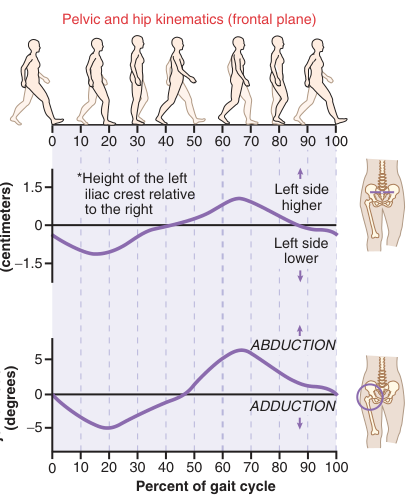
sự thẳng hàng của chính xương chậu, xét theo chiều cao của mào chậu trái so với mào chậu phải. Trong pha đứng phải, mào chậu trái ban đầu hạ xuống nhẹ trước khi di chuyển lên trên dần dần.
Sự hạ xuống nhỏ này của xương chậu bên đối diện trong pha đứng sớm được coi là bình thường. Trong nửa sau của chu kỳ dáng đi, việc mào chậu trái tương đối cao hơn trong phần đầu của pha đung đưa phải phản ánh sự hạ xuống được kiểm soát
mào chậu phải bởi các cơ dạng háng trái khi người đó mới đứng lên chi dưới trái. (B) minh họa chuyển động mặt phẳng frontal của khớp háng. Khi xét chuyển động của xương chậu
(đã mô tả trước đó) trong mối quan hệ với xương đùi, trong phần sớm của pha đứng phải, sự hạ xuống của mào chậu trái góp phần tạo ra khép háng phải. Khi mào chậu trái được nâng lên trong phần sau của pha đứng phải
và mào chậu phải được hạ xuống trong phần sớm của pha đung đưa phải, dạng háng phải được tạo ra. (Dữ liệu từ Ounpuu S:
Clinical gait analysis. Trong: Spivack BS, chủ biên: Evaluation and management of gait disorders, New York, 1995, Marcel Dekker.) Lệch nghiêng xương chậu* (xentimet) *Chiều cao của mào chậu trái so với phải
(nhãn trong hình 15.15: Bên trái thấp hơn — Left side lower; Bên trái cao hơn — Left side higher; 90; 100; Động học xương chậu và khớp háng [mặt phẳng frontal] — Pelvic and hip kinematics [frontal plane]; Độ chuyển động khớp háng phải [độ] — Right hip joint motion [degrees]; 1.5; −1.5; −5; 90; 100; Phần trăm chu kỳ dáng đi — Percent of gait cycle; DẠNG — ABDUCTION; KHÉP — ADDUCTION; A; B)
Chuyển động mặt phẳng frontal quá mức của khớp háng chịu lực khá phổ biến, gây ra những sự dịch chuyển trong-ngoài quá mức của trọng tâm cơ thể (CoM). Có ít nhất ba lý do khiến chuyển động quá mức của xương chậu và khớp háng trong mặt phẳng frontal có thể được quan sát thấy:
yếu của các cơ dạng háng, sự "rút ngắn" bị giảm sút của chân đung đưa, và sự chênh lệch chiều dài chi.
Sự hạ xuống của mào chậu bên đối diện (tức là khép háng) trong giai đoạn sớm đến giữa pha đứng thường được kiểm soát bởi hoạt động lệch tâm của các cơ dạng háng của chi chịu lực. Mô-men dạng không đầy đủ từ các cơ này thường dẫn đến chuyển động mặt phẳng frontal quá mức trong pha đứng.160 Khi đứng trên một chi, một người có yếu cơ dạng háng mức độ trung bình thể hiện sự hạ xuống quá mức của xương chậu về phía chi dưới được nhấc lên (Hình 15.16).31 Hành động này được gọi là
dấu Trendelenburg dương tính. Tuy nhiên, thông thường, một người có các cơ dạng háng suy yếu, đặc biệt nếu nặng, sẽ bù trừ bằng cách nghiêng thân mình về cùng phía với cơ bị yếu trong bất kỳ hoạt động chống đỡ bằng một chi nào, dù là đứng
hay đi bộ. Khi đi bộ, hiện tượng này được gọi là dáng đi Trendelenburg "có bù trừ" hoặc dáng đi khập khiễng cơ mông trung (gluteus medius limp). Việc nghiêng thân mình về phía yếu làm giảm các yêu cầu mô-men ngoài do trọng lượng cơ thể gây ra lên các cơ dạng
của chi chịu lực.
Một dạng lệch khác được quan sát bằng cách nhìn vào chuyển động của xương chậu trong mặt phẳng frontal được gọi là "nhấc hông" (hip hiking). Việc nhấc hông ở phía chi dưới đung đưa giúp bù trừ cho việc khớp gối và/hoặc khớp cổ chân của chi dưới không thể
rút ngắn chi một cách đầy đủ để bàn chân vượt qua được mặt đất. Ví dụ điển hình là đi bộ với nẹp khớp gối, giữ khớp gối ở tư thế duỗi thẳng hoàn toàn. Việc nhấc hông được mô tả chính xác hơn là sự nâng lên quá mức của mào chậu ở phía chi đung đưa. Sự nâng
lên này là kết quả của chuyển động dạng chậu-trên-đùi của chi chịu lực.
Các cơ tham gia vào chuyển động này bao gồm các cơ dạng chính của chi chịu lực, cơ quadratus lumborum (cơ thắt lưng vuông) của chi đung đưa, và có thể cả các cơ bụng cùng các cơ duỗi lưng ở phía chi đung đưa.
Một sự chênh lệch chiều dài chi đáng kể cũng ảnh hưởng đến chuyển động của xương chậu trong mặt phẳng frontal. Chênh lệch chiều dài chi có thể nặng, thứ phát do gãy xương đùi hoặc coxa vara hoặc coxa valga một bên, hoặc có thể nhẹ (dưới 5 mm) do sự biến thiên tự nhiên.
Trong các giai đoạn hai chân chịu lực, mào chậu của chi dưới dài hơn nằm cao hơn so với mào chậu của chi dưới ngắn hơn. Sự lệch nghiêng xương chậu này, diễn ra
trong mỗi chu kỳ dáng đi, dẫn đến tăng chuyển động vặn bên (side bending) theo chu kỳ của cột sống thắt lưng.
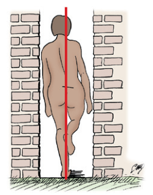
(Sửa đổi từ Calvé J, Galland M, De Cagny R: Pathogenesis of the limp due to coxalgia: the antalgic gait, J Bone Joint Surg Am 21:12, 1939.) … trong một nghiên cứu đã công bố của Lafortune và cộng sự, những người đã sử dụng
các phương pháp xâm lấn tương tự trên năm cá nhân đi bộ với tốc độ 1.2 m/sec.113 Lafortune và cộng sự báo cáo khớp gối ở tư thế dạng (valgus) trung bình 1.2 độ tại thời điểm tiếp đất gót (Hình
15.17). Sự thẳng hàng này không thay đổi trong suốt pha đứng.
Lafortune và cộng sự cũng báo cáo dữ liệu cho pha đung đưa của dáng đi, chỉ ra rằng khớp gối thường dạng thêm khoảng 5 độ trong pha đung đưa ban đầu. Dạng tối đa xảy ra khi khớp gối gần góc gập tối đa của nó.
Khớp gối trở lại tư thế dạng nhẹ trước lần tiếp đất gót kế tiếp. Dữ liệu từ cả hai nghiên cứu mang lại một đóng góp độc đáo cho tài liệu chuyên môn. Phần lớn các dữ liệu công bố khác về các động học này đến từ các nghiên cứu sử dụng các marker gắn trên da, thứ thường
đi kèm với sai số lớn hơn.
Chuyển động chính của khớp talocrural là gập mu–gập lòng bàn chân (dorsiflexion–plantar flexion). Mặc dù, như đã mô tả trong Chương 14, khớp cổ chân lật ngoài và dạng nhẹ khi gập mu, và lật trong cùng khép nhẹ khi gập lòng bàn chân, các chuyển động thứ cấp trong mặt phẳng frontal và mặt phẳng ngang này rất nhỏ và không được thảo luận trong chương này.
Các chuyển động ba mặt phẳng của sấp (pronation) và ngửa (supination) xảy ra thông qua sự tương tác giữa khớp dưới talus và khớp mũi chân ngang (transverse tarsal joint). Sấp kết hợp các thành phần lật ngoài, dạng, và gập mu;
ngửa kết hợp lật trong, khép, và gập lòng bàn chân.
Chương này xem xét các chuyển động mặt phẳng frontal của lật ngoài và lật trong tại khớp dưới talus để đại diện cho các chuyển động toàn cục hơn là sấp và ngửa bàn chân. Các chuyển động khớp dưới talus thường được đo bằng góc tạo bởi mặt sau của xương gót (calcaneus) và mặt sau của cẳng chân (Hình 15.18).
Khớp dưới talus ở tư thế lật trong khoảng 2 đến 3 độ tại thời điểm tiếp đất gót (Hình 15.19). Ngay sau khi tiếp đất gót, sự lật ngoài nhanh chóng của xương gót bắt đầu và tiếp diễn cho đến
lần tiếp đất gót kế tiếp. Mô hình chuyển động này thường được thống nhất trong tài liệu; tuy nhiên, lượng sấp bàn chân được báo cáo trong dáng đi thay đổi tùy theo kỹ thuật và lựa chọn cách đo lường. Reischl và cộng sự,176 sử dụng một mô hình
ba chiều (three-dimensional) của bàn chân, báo cáo mức sấp đỉnh trung bình 10.5 ± 3.4 độ, xảy ra tại 26.8% ± 8.7% của chu kỳ dáng đi.
Chuyển động sấp hay ngửa bàn chân trong khi đi bộ đi kèm với những thay đổi về chiều cao của vòm dọc trong của bàn chân. Như đã mô tả kỹ lưỡng trong Chương 14, những người có bàn chân "vòm thấp" (pes planus) thường thể hiện lượng sấp phần sau bàn chân (rearfoot) lớn hơn khi đi bộ.29,118 Một bài tổng quan chi tiết về động học liên quan này được cung cấp trong Chương 14.
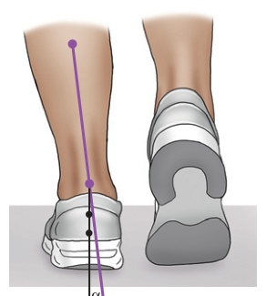
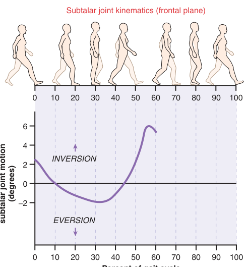
Vị trí quan sát tốt nhất các động học mặt phẳng frontal của các khớp chi dưới là đứng phía sau người đi. Chuyển động của khớp háng đóng vai trò quan trọng trong việc giảm sự dịch chuyển thẳng đứng của trọng tâm cơ thể (CoM).
Sự sấp nhanh (lật ngoài xương gót) của bàn chân sau khi tiếp đất gót tham gia vào quá trình tiếp nhận trọng lượng và cung cấp một cấu trúc bàn chân mềm dẻo, dễ thích nghi để tiếp xúc với mặt đất. Sau đó trong pha đứng, bao gồm cả
giai đoạn giữa nhấc gót và nhấc ngón chân, sự lật trong của xương gót đi kèm với ngửa bàn chân tạo ra một cấu trúc bàn chân cứng hơn, giúp đẩy cơ thể về phía trước.
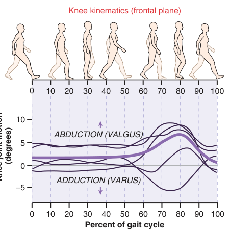
(nhãn trong hình 15.17: Độ chuyển động khớp gối (độ) — Knee joint motion (degrees); Phần trăm chu kỳ dáng đi — Percent of gait cycle; Động học khớp gối (mặt phẳng frontal) — Knee kinematics (frontal plane); −5; DẠNG (VALGUS) — ABDUCTION (VALGUS); KHÉP (VARUS) — ADDUCTION (VARUS)) giữa pha đứng (30% đến 35% của chu kỳ dáng đi), nơi mà vị trí lật ngoài tối đa khoảng 2 độ được đạt tới. Lúc
thời điểm đó, khớp dưới talus đảo ngược hướng chuyển động và bắt đầu hướng về lật trong. Bình thường, một vị trí tương đối trung tính của xương gót được đạt tới ở khoảng 40% đến 45% của chu kỳ dáng đi, tương ứng với khoảng thời điểm nhấc gót. Giữa nhấc gót
và nhấc ngón chân, lật trong xương gót tiếp tục cho đến khi đạt giá trị khoảng 6 độ lật trong.46 Trong pha đung đưa, xương gót trở về tư thế lật trong nhẹ để chuẩn bị cho
Sau khi tiếp đất gót, xương đùi quay vào trong (internal rotation) trong 15% đến 20% đầu của chu kỳ dáng đi (Hình 15.20). Ở khoảng 20% của chu kỳ dáng đi, xương đùi đảo ngược hướng và quay ra ngoài cho đến
ngay sau khi nhấc ngón chân. Quay vào trong của xương đùi diễn ra trong suốt phần lớn pha đung đưa. Nhìn chung, xương đùi quay khoảng 6 đến 7 độ theo mỗi hướng trong dáng đi.36
Mô hình chuyển động của xương ống rất giống với
mô hình chuyển động đã được mô tả cho xương đùi (xem Hình 15.20). Biên độ của sự quay khoảng 8 đến 9 độ theo mỗi hướng.
Cả xương đùi và xương chậu cùng quay đồng thời. Tại tiếp đất gót phải, khớp háng phải ở tư thế quay ra ngoài nhẹ, dựa trên vị trí phía sau tương đối của gai chậu trước-trên (ASIS) bên đối diện (trái) (Hình
15.21). Một chuyển động quay vào trong ròng của khớp háng phải xảy ra trong phần lớn pha đứng trên chi dưới phải, khi ASIS bên đối diện (trái) được đưa về phía trước. Vị trí quay vào trong tối đa đạt được ở khoảng 50% của chu kỳ
dáng đi. Khớp háng phải quay ra ngoài từ 50% của dáng đi cho đến giữa pha đung đưa, khi chi dưới phải được đưa tiến về phía trước.
Từ giữa pha đung đưa đến tiếp đất gót phải, một lượng nhỏ quay vào trong của khớp háng phải diễn ra.41,188
Có hai nghiên cứu đặc biệt đáng quan tâm đã sử dụng các đinh trong vỏ xương (intracortical pins) gắn vào xương đùi và xương ống như một phương tiện để ghi chép chính xác
chuyển động mặt phẳng ngang của khớp gối trong khi đi lại.17,113
Thông tin hiện có về động học chi dưới trong mặt phẳng ngang khi đi bộ chỉ được cung cấp bởi một
số lượng nghiên cứu hạn chế. Để cải thiện độ chính xác của các phép đo này, một số nhà nghiên cứu đã cố định các đinh kim loại cứng vào xương chậu, xương đùi, và xương ống của người tham gia nghiên cứu. Gắn vào các đinh kim loại này là các marker cho phép máy quay video theo dõi
chuyển động của xương. Trong một số nghiên cứu, chỉ có chuyển động của các cấu trúc xương trong không gian được quan sát; các báo cáo từ những nghiên cứu khác mô tả chuyển động tương đối diễn ra tại chính khớp.95,113 Phần sau đây trích dẫn dữ liệu về chuyển động của các xương cũng
cũng như chuyển động của các khớp. Mặc dù số lượng nghiên cứu mô tả động học mặt phẳng ngang đã tăng lên trong những năm gần đây, khó khăn kỹ thuật khi cố gắng đo lượng chuyển động tương đối nhỏ này vẫn còn tồn tại, và có thể lý giải phần lớn
sự biến thiên động học được báo cáo liên quan đến mặt phẳng chuyển động này.
Khi đi bộ, xương chậu quay trong mặt phẳng ngang quanh một trục quay thẳng đứng đi qua khớp háng của chi chịu lực.
Sự mô tả sau đây về quay xương chậu dựa trên góc nhìn từ trên xuống cho một chu kỳ dáng đi phải. Tại tiếp đất gót phải, gai chậu trước-trên (ASIS) phải ở phía trước so với ASIS trái.
Trong 15% đến 20% đầu của chu kỳ dáng đi, xương chậu quay theo hướng quay vào trong (ngược chiều kim đồng hồ), khi nhìn từ trên xuống trong Hình 15.20. Trong suốt phần còn lại của pha đứng trên chi dưới phải, một sự quay ra ngoài (theo chiều kim đồng hồ) của xương chậu diễn ra khi
ASIS trái dần dần di chuyển về phía trước cùng với chân đung đưa trái đang tiến về trước. Tại nhấc ngón chân phải, ASIS phải giờ nằm phía sau ASIS trái. Trong pha đung đưa của chi dưới phải, ASIS phải dần dần di chuyển về phía trước. Trong suốt chu kỳ dáng đi, xương chậu
quay 3 đến 4 độ theo mỗi hướng. Một lượng quay xương chậu lớn hơn xảy ra khi tốc độ đi bộ tăng lên, nhằm tăng chiều dài bước chân.120
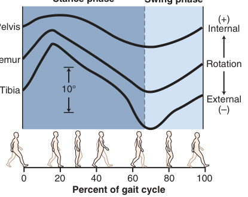
xương ống khi nhìn từ trên xuống. Mô hình chuyển động là tương tự nhau cho ba cấu trúc xương, với biên độ chuyển động dần dần lớn hơn ở các cấu trúc ở xa hơn (distal). Nhìn từ trên xuống, đối với chi dưới phải,
quay vào trong của xương chậu, xương đùi, và xương ống đều tương ứng với chuyển động ngược chiều kim đồng hồ. (Từ Mann RA: Biomechanics of the foot.
Trong: American Academy of Orthopedic Surgeons, chủ biên: Atlas of orthotics:
biomechanical principles and application, St Louis, 1975, Mosby.) (nhãn trong hình 15.20: Phần trăm chu kỳ dáng đi — Percent of gait cycle; Quay vào trong — Internal rotation; Quay ra ngoài — External rotation (+) (–); Xương đùi — Femur; Xương ống — Tibia; Xương chậu — Pelvis; 10°; Pha đứng — Stance phase; Pha đung đưa — Swing phase)
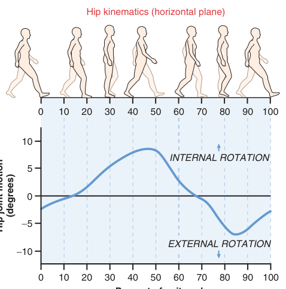
(nhãn trong hình 15.21: Độ chuyển động khớp háng (độ) — Hip joint motion (degrees); Phần trăm chu kỳ dáng đi — Percent of gait cycle; −5; −10; QUAY VÀO TRONG — INTERNAL ROTATION; QUAY RA NGOÀI — EXTERNAL ROTATION; Động học khớp háng (mặt phẳng ngang) — Hip kinematics (horizontal plane))
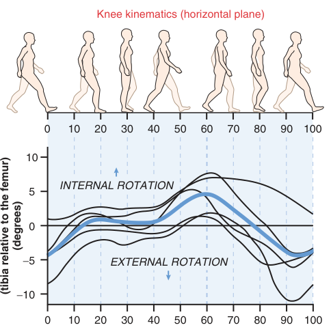
PR, Sommer HJ III, và cs: Three-dimensional kinematics of the human knee during walking, J Biomech 25:347, 1992.) (nhãn trong hình 15.22: QUAY VÀO TRONG — INTERNAL ROTATION; QUAY RA NGOÀI — EXTERNAL ROTATION; Độ chuyển động khớp gối (xương ống so với xương đùi) (độ) — Knee joint motion (tibia relative to the femur) (degrees); Phần trăm chu kỳ dáng đi — Percent of gait cycle; Động học khớp gối (mặt phẳng ngang) — Knee kinematics (horizontal plane)) Hình 15.22 minh họa dữ liệu từ một nghiên cứu của Lafortune và cộng
sự cho từng người tham gia nghiên cứu, cùng với giá trị trung bình của nhóm.113 Rõ ràng, và nhất quán với dữ liệu từ Benoit và cộng sự,17, lượng và hướng của chuyển động quay mặt phẳng ngang của khớp gối có tính biến thiên cao. Phần lớn sự biến thiên này bị che khuất bởi quá trình lấy trung bình dữ liệu giữa các cá nhân, như được thực hiện trong
Hình 15.22 và trong nhiều báo cáo mô tả cũng như nghiên cứu. Thực tế, mặc dù Hình 15.22 cho thấy một xu hướng chung hướng về quay vào trong trong pha đứng, dữ liệu của Benoit và cộng sự,17 lại chỉ ra một mô hình chung trung bình là quay ra ngoài
khớp gối. Sự biến thiên này gây khó khăn cho việc diễn giải nhiều nghiên cứu đã đề xuất một mối liên hệ sinh cơ học giữa đau khớp gối và động học mặt phẳng ngang bất thường tại khớp này khi đi bộ và chạy.
Chuyển động mặt phẳng ngang của khớp talocrural là rất nhỏ và không được xét đến ở đây. Các chuyển động chính của khớp dưới talus (lật trong và lật ngoài) thuộc mặt phẳng frontal và đã được mô tả
trước đó trong chương này.
Thân mình và các chi trên đóng vai trò quan trọng trong việc duy trì thăng bằng và giảm thiểu chi tiêu năng lượng trong dáng đi.
Ngoài ra, các chuyển động cột sống tinh vi nhỏ và các hoạt động cơ bắp tại thân mình có tác dụng làm dập tắt các dao động và gia tốc liên quan đến dáng đi do chuyển động của các chi dưới tạo ra.99,137 Kết quả là, gia tốc của đoạn đầu nhỏ hơn 10%
đến 40% so với gia tốc của phần dưới thân mình. Hiệu ứng làm dập này, giữ cho đầu ổn định hơn, đóng một vai trò quan trọng trong việc tối ưu hóa chức năng thị giác và tiền đình trong dáng đi.
Khi đi lại, sự dịch chuyển của đầu và thân mình tuân theo mô hình chung của sự dịch chuyển trọng tâm cơ thể như đã được thảo luận và minh họa trong phần tiếp theo của chương này. Ngoài ra,
thân mình quay trong mặt phẳng ngang quanh trục thẳng đứng của nó, với đai vai quay theo hướng ngược với xương chậu.
Tổng biên độ quay trung bình của đai vai khoảng 7 đến 9 độ.27,153 Mô hình chuyển động này của thân mình đóng góp một phần nhỏ vào hiệu quả tổng thể của dáng đi.27 Việc hạn chế chuyển động thân mình làm tăng chi tiêu năng lượng trong
khi đi bộ lên tới 10%.175 Mặc dù đoạn văn trước đã mô tả ngắn gọn chuyển động mặt phẳng ngang của thân mình, Rozumalski và cộng sự,181 vào năm 2008 đã công bố dữ liệu về chuyển động các đốt suốt cột sống
thắt lưng khi đi lại. Điểm độc đáo của nghiên cứu này liên quan đến phương pháp thu thập dữ liệu, bao gồm phân tích video ba chiều (three-dimensional) các marker được cố định cứng vào các gai của tất cả các đốt sống thắt lưng bằng các đinh Kirshner được đưa vào bằng phẫu thuật.
Dữ liệu cho thấy chuyển động liên đốt thắt lưng phức tạp lên tới 3 đến 5 độ theo mỗi hướng, trong cả ba mặt phẳng.181 Các động học này, mặc dù khiêm tốn, có lẽ là cần thiết để cho phép các chuyển động ba mặt phẳng nhỏ của xương chậu đã mô tả trước đó diễn ra trong khi
thân mình được giữ ở tư thế tương đối thẳng đứng.
Trong mặt phẳng sagittal, khớp vai thể hiện một mô hình chuyển động hình sin ngược pha với gập và duỗi háng. Khi khớp háng (xương đùi) di chuyển về phía duỗi, khớp vai cùng bên (xương cánh tay) di chuyển về phía gập, và ngược lại.207 Tại tiếp đất gót, khớp vai ở vị trí duỗi tối đa, khoảng 25 độ ngoài vị trí trung tính. Khớp vai sau đó dần dần quay về phía trước để đạt tối đa 10 độ
gập vào lúc 50% của chu kỳ dáng đi. Trong nửa sau của chu kỳ dáng đi, khi khớp háng cùng bên tiến về phía trước theo hướng gập, khớp vai duỗi để trở lại 25 độ duỗi vào lần tiếp đất gót kế tiếp.
Mô hình chuyển động của vai là nhất quán giữa các cá nhân, mặc dù biên độ chuyển động thay đổi rất nhiều.
Nói chung, biên độ chuyển động vai tăng lên khi tốc độ lớn hơn. Vung tay một phần là chủ động, chứ không hoàn toàn thụ động, với hoạt động chu kỳ mức thấp (dưới 5% co cơ đẳng trương tự nguyện tối đa) chủ yếu của các cơ deltoid (cơ tam đầu vai) trước và sau.108,138
Chức năng chính của vung tay dường như là cân bằng các lực quay trong thân mình, ổn định chuyển động cơ thể quanh một trục thẳng đứng, và giảm chi tiêu năng lượng.138,168 Nghiên cứu gần đây245 cho thấy việc hạn chế chuyển động tay
dẫn đến sự tăng dịch chuyển thẳng đứng của trọng tâm cơ thể (CoM), một phát hiện nhất quán với các dữ liệu trước đó về mức tăng nhẹ chi phí năng lượng khi đi lại khi chuyển động tay bị ngăn cản.221
Khớp khuỷu thường ở khoảng 20 độ gập tại
tiếp đất gót. Khi khớp vai gập trong 50% đầu của chu kỳ dáng đi, khớp khuỷu cũng gập đến mức tối đa khoảng 45 độ. Trong nửa sau của chu kỳ dáng đi, khi khớp vai duỗi, khớp khuỷu duỗi để trở lại 20 độ gập.153
Hình 15.23 tóm tắt hướng quay mặt phẳng ngang của các xương chính của chi dưới và khớp dưới talus khi đi bộ, sử dụng các bộ dữ liệu khác nhau.46,81,128 Xương chậu, xương đùi, và xương ống quay vào trong, ngay sau khi tiếp đất gót (tức là,
trong khoảng 15% đến 20% của chu kỳ dáng đi). Khối quay vào trong hàng loạt này đi kèm với lật ngoài khớp dưới talus. Như đã mô tả trong Chương 14, một khớp dưới talus đang lật ngoài có xu hướng làm tăng độ dẻo (pliability) của vùng giữa bàn chân, bao gồm cả khớp mũi chân ngang.
Một phần giữa bàn chân dẻo giúp đệm chấn động khi chi chịu tải.
Sau khoảng 15% đến 20% của chu kỳ dáng đi, xương chậu, xương đùi, và xương ống đều bắt đầu quay ra ngoài cho đến khi nhấc ngón chân. Đồng thời với sự quay ra ngoài này của xương chậu, xương đùi, và xương ống, khớp dưới talus
bắt đầu chuyển động hướng về lật trong, thứ có xu hướng làm tăng độ ổn định của vùng giữa bàn chân. Sự ổn định này cho phép phần giữa bàn chân hoạt động như một đòn bẩy cứng trong phần sau của pha đứng (đẩy
khỏi), cho phép các cơ gập lòng bàn chân nhấc xương gót lên mà phần giữa bàn chân không bị sập xuống dưới trọng lượng cơ thể. Cần có thêm các nghiên cứu sâu hơn, chẳng hạn như nghiên cứu được thực hiện bởi Reischl và cộng sự,140,144,176,216,
để làm rõ một cách thuyết phục mối quan hệ chính xác tồn tại giữa thời điểm và biên độ của sấp bàn chân và sự quay của xương ống và xương đùi.
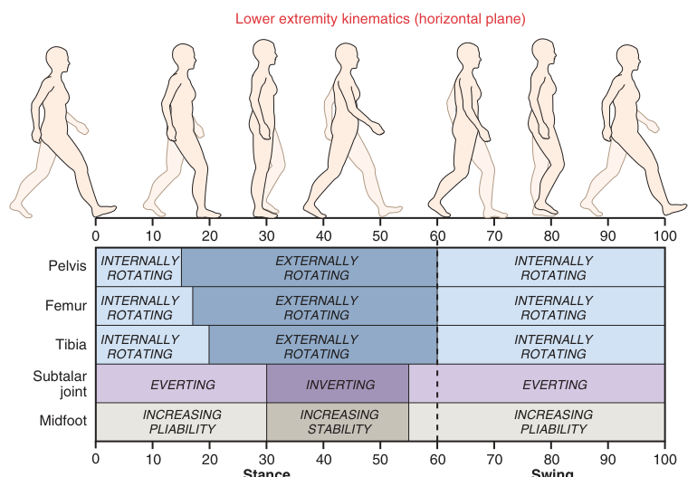
Nhìn từ trên xuống, đối với chi dưới phải, quay vào trong của xương chậu, xương đùi, và xương ống đều tương ứng với chuyển động ngược chiều kim đồng hồ. Đồ thị cho thấy hướng quay, thứ không nhất thiết giống với
vị trí khớp tuyệt đối.
(nhãn trong hình 15.23: Xương chậu — Pelvis; Xương đùi — Femur; Giữa bàn chân — Midfoot; Xương ống — Tibia; Khớp dưới talus — Subtalar joint; Phần trăm chu kỳ dáng đi — Percent of gait cycle; ĐANG QUAY VÀO TRONG — INTERNALLY ROTATING; ĐANG QUAY RA NGOÀI — EXTERNALLY ROTATING; ĐANG LẬT NGOÀI — EVERTING; ĐANG LẬT TRONG — INVERTING; TĂNG ĐỘ DẺO — INCREASING PLIABILITY; TĂNG ĐỘ ỔN ĐỊNH — INCREASING STABILITY; Pha đứng — Stance; Pha đung đưa — Swing; Động học chi dưới (mặt phẳng ngang) — Lower extremity kinematics (horizontal plane))
Đi bộ có thể được định nghĩa là một chuỗi các lần mất và phục hồi thăng bằng. Việc đi lại được khởi phát bằng cách cho cơ thể nghiêng về phía trước. Để cơn ngã không xảy ra, sự phục hồi thăng bằng tạm thời
được đạt được bằng cách đưa một trong hai bàn chân về phía trước đến một vị trí mới. Một khi dáng đi được khởi phát, động lượng về phía trước của cơ thể đưa trọng tâm cơ thể (CoM) vượt qua vị trí mới của bàn chân, đòi hỏi một bước tiến bằng chân kia. Sự tiến về phía trước
sau đó được đạt được bằng các lần tái định vị bàn chân kế tiếp nhau và luân phiên. Sự chuyển tiếp mượt mà, được kiểm soát giữa mất và phục hồi thăng bằng tiếp diễn chừng nào sự dịch chuyển về phía trước của cơ thể còn được mong muốn. Việc đi lại dừng lại khi vị trí đặt bàn chân chặn lại
động lượng về phía trước của cơ thể và thăng bằng được tái lập trên mặt chống đỡ tĩnh (static base of support). Mặc dù sự mô tả này cung cấp một lời giải thích hữu dụng và tương đối chính xác về việc đi lại, cần phải chỉ ra rằng đi bộ cũng đòi hỏi sự tham gia chủ động của
hệ cơ của các chi dưới và do đó là chi tiêu năng lượng.
đi lại.96 Lượng dịch chuyển tăng lên khi cá nhân có mặt chống đỡ rộng hơn trong dáng đi (tức là đi bộ với hai bàn chân xa nhau hơn) và giảm xuống với mặt chống đỡ hẹp hơn (tức là đi bộ với hai bàn chân gần nhau hơn).
Trọng tâm cơ thể nằm ngay phía trước đốt sống cùng thứ hai, nhưng cách hình dung tốt nhất chuyển động của trọng tâm là theo dõi sự dịch chuyển của đầu hoặc thân người. Rõ ràng,
sự dịch chuyển đáng chú ý nhất của cơ thể trong dáng đi là theo hướng về phía trước (Hình 15.24). Tuy nhiên, chồng lên trên sự dịch chuyển về phía trước này là hai mô hình chuyển động hình sin tương ứng với chuyển động của trọng tâm theo hướng thẳng đứng và
theo hướng từ bên này sang bên kia.
Theo hướng thẳng đứng, trọng tâm dao động lên và xuống để tạo thành hai sóng sin đầy đủ mỗi chu kỳ dáng đi (xem Hình 15.24A). Chuyển động của trọng tâm này được hiểu tốt nhất bằng cách nhìn người đi từ bên hông. Chiều cao tối thiểu của trọng tâm xảy ra tại
điểm giữa của cả hai giai đoạn hai chân chịu lực (5% và 55% của chu kỳ dáng đi). Chiều cao tối đa của trọng tâm xảy ra tại điểm giữa của cả hai giai đoạn một chân chịu lực (30% và 80% của chu kỳ dáng đi). Một tổng dịch chuyển thẳng đứng
khoảng 5 cm được ghi nhận ở tốc độ đi bộ trung bình ở nam giới trưởng thành.
Trong khi đi lại, trọng tâm cũng được dịch chuyển luân phiên từ chi dưới phải sang chi dưới trái, tạo ra một mô hình hình sin từ bên này sang bên kia (phải-sang-trái) duy nhất mỗi chu kỳ dáng đi (xem Hình 15.24B).
Vị trí tối đa của trọng tâm về phía phải xảy ra tại điểm giữa của pha đứng trên chi dưới phải (30% của chu kỳ dáng đi), và vị trí tối đa của trọng tâm về phía trái xảy ra tại điểm giữa của pha đứng trên chi dưới
trái (80% của chu kỳ dáng đi). Một tổng dịch chuyển từ bên này sang bên kia khoảng 4 cm xảy ra trong điều kiện đi bộ bình thường.
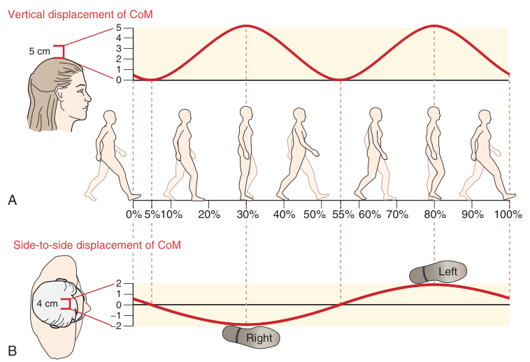
ở vị trí thấp nhất và trung tâm nhất theo hướng từ bên này sang bên kia ở giữa giai đoạn hai chân chịu lực (5% và 55% của chu kỳ dáng đi)—một vị trí ổn định tương đối với cả hai bàn chân trên mặt đất. Ngược lại, trọng tâm ở vị trí
cao nhất và lệch bên nhất tại giữa pha đứng (30% và 80% của chu kỳ dáng đi)—một vị trí không ổn định tương đối.
Trong chống đỡ bằng một chi, quỹ đạo của trọng tâm không bao giờ nằm trực tiếp phía trên mặt chống đỡ. Sự thật này được minh họa trong (B) với hình chiếu thẳng đứng của trọng tâm luôn nằm giữa các dấu vết bàn chân.
(nhãn trong hình 15.24: Dịch chuyển thẳng đứng của trọng tâm — Vertical displacement of CoM; Dịch chuyển từ bên này sang bên kia của trọng tâm — Side-to-side displacement of CoM; A)
Nhãn trong hình 15.24B — B; 5 cm; Trái (Left); Phải (Right); −2 −1; 4 cm; 60% 70% 80% 90% 50% 30% 0% 100% 10% 20% 40% 5% 55%; Dịch chuyển của trọng tâm cơ thể (Displacement of the Center of Mass) • Tổng dịch chuyển thẳng đứng: 5 cm • Tổng dịch chuyển sang hai bên: 4 cm
Tiếp theo, hãy xét dạng thức chuyển động tổng thể của trọng tâm cơ thể (CoM) trong một chu kỳ dáng đi đầy đủ (xem Hình 15.24). Bắt đầu ngay sau khi gót chân phải tiếp đất, trọng tâm đang tiến về phía trước, hướng lên trên và về phía bàn chân phải. Hướng chuyển động tổng thể này tiếp diễn trong 30% đầu của chu kỳ dáng đi — cơ thể về bản chất đang "leo lên và dịch chuyển khối lượng của mình" qua chi dưới bên chống. Ở pha đứng giữa (mid stance) bên phải, trọng tâm đạt đến vị trí cao nhất và lệch về phía bên phải nhiều nhất. Ngay sau pha đứng giữa bên phải, trọng tâm tiếp tục tiến về phía trước nhưng bắt đầu di chuyển theo hướng đi xuống và về phía bên trái của cơ thể — cơ thể về bản chất đang "rơi ra khỏi" chi dưới bên chống. Đây là một thời điểm then chốt của chu kỳ dáng đi. Trong khi chi trái đang ở pha đung đưa, cơ thể phụ thuộc vào chi dưới trái để tiếp xúc chắc chắn với mặt đất nhằm nhận trọng lượng được chuyển giao và ngăn ngừa té ngã.
Ngay sau khi gót chân trái tiếp đất, trong giai đoạn hai chân chịu lực (double-limb support), trọng tâm nằm ở giữa hai bàn chân và đạt vị trí thấp nhất khi nó tiếp tục tiến về phía trước và về phía chi dưới trái. Từ khi ngón chân phải rời đất đến pha đứng giữa trên chi dưới trái (80% của chu kỳ dáng đi), trọng tâm tiến về phía trước, hướng lên trên và về phía chi dưới trái, bên đang chống đỡ. Ở 80% của chu kỳ dáng đi, trọng tâm một lần nữa ở vị trí cao nhất, nhưng ở vị trí lệch sang trái nhiều nhất. Ngay sau pha đứng giữa bên trái, chuyển động của trọng tâm chuyển hướng đi xuống và về phía bên phải của cơ thể. Chu kỳ dáng đi được hoàn tất và quá trình được lặp lại khi gót chân phải tiếp xúc với mặt đất.
Điều đáng chú ý là trong pha chống một chi, trọng tâm của cơ thể không bao giờ nằm trực tiếp phía trên vùng chống đỡ của cơ thể (xem Hình 15.24B). Sự kiện này minh họa tình trạng mất cân đối tương đối của cơ thể trong dáng đi, đặc biệt là trong pha chống một chi, khi bàn chân phải được đặt chỉ hơi lệch về phía ngoài so với hình chiếu thẳng đứng của trọng tâm cơ thể để khống chế chuyển động sang hai bên của nó. Vị trí đặt bàn chân chính xác nhờ chuyển động khớp háng trên mặt phẳng frontal (tức là dang và khép khớp háng) là điều tối quan trọng, xét đến khả năng hạn chế của các cơ ở khớp dưới talus (subtalar joint) trong việc khống chế chuyển động sang hai bên của trọng tâm.240
Mặc dù đi bộ có vẻ diễn ra với tốc độ tiến về phía trước ổn định, cơ thể thực tế lại tăng tốc và giảm tốc nhẹ trong mỗi bước. Khi chi dưới bên chống nằm phía trước trọng tâm của cơ thể, cơ thể chậm lại. Ngược lại, khi chi dưới bên chống nằm phía sau trọng tâm của cơ thể, cơ thể tăng tốc. Vì vậy, cơ thể đạt vận tốc thấp nhất ở pha đứng giữa, một khi đã "leo" lên chi dưới bên chống, và vận tốc cao nhất trong giai đoạn hai chân chịu lực, một khi đã "rơi ra khỏi" chi dưới bên chống và trước khi "leo" lên chi bên kia. Do năng lượng động của cơ thể khi đi lại là một hàm số trực tiếp của vận tốc của nó (Eq. 15.1), năng lượng động tối tiểu xuất hiện ở pha đứng giữa (30% và 80% của chu kỳ dáng đi) và năng lượng động tối đa đạt được trong giai đoạn hai chân chịu lực (5% và 55% của chu kỳ dáng đi) (Hình 15.25).
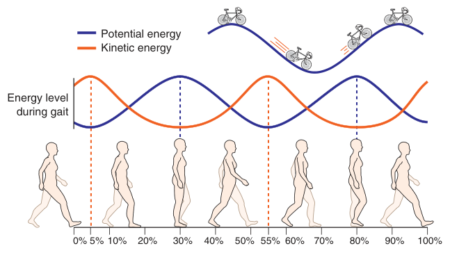
Năng lượng động = ½mv² (Eq. 15.1), trong đó m là khối lượng của cơ thể và v là vận tốc của trọng tâm cơ thể.
Năng lượng thế năng = mgh (Eq. 15.2), trong đó m là khối lượng của cơ thể, g là gia tốc hướng xuống của cơ thể sinh ra do trọng lực, và h là chiều cao của trọng tâm cơ thể.
Trong một biểu diễn đồ thị của các biến đổi năng lượng động và năng lượng thế năng trong dáng đi, mối quan hệ giữa các đường cong có thể nhận ra một cách dễ dàng (xem Hình 15.25). Những thời điểm năng lượng thế năng tối đa tương ứng với những thời điểm năng lượng động tối tiểu và ngược lại. Khi năng lượng thế năng mất đi từ pha đứng giữa đến giai đoạn hai chân chịu lực (trọng tâm của cơ thể đi từ vị trí cao nhất đến vị trí thấp nhất), năng lượng động được tạo thành (trọng tâm của cơ thể đi từ tốc độ tối tiểu đến tốc độ tối đa). Ngược lại, khi năng lượng động mất đi từ giai đoạn hai chân chịu lực đến pha đứng giữa, năng lượng thế năng được tạo thành. Do đó, cơ thể, hoạt động ở mức độ lớn giống như một con lắc ngược, dường như sử dụng một biên độ dao động thẳng đứng tối ưu để chuyển giao năng lượng cơ học một cách hiệu quả nhất giữa dạng thế năng và dạng động của nó. Việc lệch khỏi dao động thẳng đứng tối ưu này, bằng cách lựa chọn kiểu dáng đi "nảy" hoặc "phẳng", đã được chứng minh là làm tăng chi tiêu năng lượng.3,133,164
Để kết thúc, cần lưu ý rằng mặc dù sự chuyển đổi tuần hoàn giữa năng lượng động và năng lượng thế năng làm giảm thiểu chi phí chuyển hóa của việc đi bộ, riêng quá trình này là không đủ để duy trì việc đi lại với tốc độ ổn định.28 Do đó, không giống như chuyển động của một con lắc hoàn hảo, việc đi bộ phụ thuộc vào năng lượng do các cơ sinh ra. Các cơ của chi dưới phải sinh ra lực để hỗ trợ việc đẩy cơ thể tiến về phía trước trong pha đứng và giúp đưa chi dưới tiến về phía trước trong pha đung đưa.238
đạt được nhờ khả năng tự nhiên của cơ thể trong việc lựa chọn sự kết hợp lý tưởng giữa chiều dài bước chân và nhịp bước. Sự kết hợp này được thể hiện ở mọi tốc độ đi bộ. Mặc dù chi phí năng lượng khi đi lại tăng theo tốc độ đi bộ, hiệu suất của việc đi bộ là cao nhất ở tỷ lệ chiều dài bước chân–nhịp bước được duy trì là 0.0072 m/steps/min ở nam giới và 0.0064 m/steps/min ở nữ giới trên mọi tốc độ đi bộ.249 Ở bất kỳ tốc độ đi bộ nhất định nào, việc áp đặt một chiều dài bước chân hoặc nhịp bước khác đều làm tăng chi tiêu năng lượng.182 Với dáng đi bất thường, chi phí năng lượng khi đi lại tăng lên (Bảng 15.4).51,156 Hệ quả là, những người có kiểu dáng đi bất thường thường có xu hướng đi chậm hơn như một biện pháp giữ mức tiêu thụ năng lượng ở mức aerobic thoải mái. Thảo luận sâu hơn về năng lượng học của việc đi bộ ở những người có dáng đi bệnh lý có thể tìm thấy trong giáo trình của Perry và Burnfield173 và các bài tổng quan tài liệu của Gonzalez và Corcoran79 cũng như của Waters và Mulroy.233
Trong dáng đi, năm chiến lược động học có tác dụng làm giảm dịch chuyển của trọng tâm, điều mà trong thời gian dài được cho là sẽ làm giảm chi phí năng lượng. Dịch chuyển thẳng đứng của trọng tâm được giảm nhờ tác động kết hợp của bốn chiến lược đầu tiên. Chiến lược thứ năm có tác dụng làm giảm dịch chuyển sang hai bên của trọng tâm (Bảng 15.5). Các chiến lược được trình bày chi tiết trong chương này dựa trên sáu yếu tố quyết định dáng đi (determinants of gait) được Saunders và cộng sự mô tả ban đầu vào năm 1953.187 Bản trình bày chi tiết về các yếu tố quyết định này nằm trong các ấn phẩm cổ điển hơn của Inman và cộng sự95,96 và đã được đề cập lại trong các ấn phẩm gần đây hơn.110,121 Để cảm nhận được tác động của bốn chiến lược động học được sử dụng nhằm tối ưu hóa dịch chuyển thẳng đứng của trọng tâm, hãy hình dung dáng đi mà không có các cơ chế này. Điều này có thể thực hiện bằng cách dùng hai cây bút chì nối với nhau ở đầu tẩy (Hình 15.27A). Trong khi đi bộ, một dao động thẳng đứng lớn của đầu tẩy của hai cây bút chì (đại diện cho khung chậu và vì vậy là trọng tâm của cơ thể) có thể quan sát thấy một cách dễ dàng. Đầu tẩy ở vị trí cao nhất khi hai cây bút chì nằm song song với nhau theo hướng thẳng đứng (tức là pha đứng giữa). Ngược lại, đầu tẩy ở vị trí thấp nhất khi hai cây bút chì lệch nhau tối đa (tức là giai đoạn hai chân chịu lực).
Saunders và cộng sự187, trong bản thảo kinh điển của họ, đã gợi ý rằng mục tiêu của các chiến lược này là làm giảm dịch chuyển của trọng tâm nhằm giảm chi tiêu năng lượng liên quan đến nỗ lực cơ cần thiết để nâng cơ thể lên một cách tuần hoàn. Quan điểm này từ đó đến nay đã bị thách thức, nhường chỗ cho một mô hình trong đó dịch chuyển thẳng đứng của cơ thể hoạt động giống như một con lắc ngược, tận dụng sự chuyển đổi giữa năng lượng thế năng và năng lượng động.109 Dữ liệu gần đây hơn thực ra cho thấy tồn tại một lượng dao động thẳng đứng tối ưu của trọng tâm, một lượng vừa phải, không quá "phẳng" và không quá "nảy", giúp giảm thiểu chi phí năng lượng.3,80,109,133,164 Những dữ liệu này cung cấp một góc nhìn mới về cách diễn giải mục tiêu của các yếu tố quyết định dáng đi ban đầu, có lẽ là chuyển từ việc "giảm thiểu" sang "tối ưu hóa" dịch chuyển của trọng tâm. Cần có thêm các công trình nghiên cứu để hiểu rõ hơn mối quan hệ giữa động học chi dưới, biên độ dịch chuyển của trọng tâm, và chi phí năng lượng khi đi lại.
Việc làm giảm dịch chuyển hướng xuống của trọng tâm đạt được nhờ xoay khung chậu trên mặt phẳng ngang và xoay khớp cổ chân trên mặt phẳng sagittal. Xoay khung chậu trên mặt phẳng ngang đưa toàn bộ
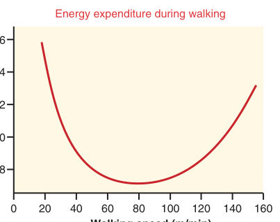
| Tình trạng | Chi phí năng lượng gia tăng (%)* |
|---|---|
| Bất động một khớp cổ chân175,230 | 3–6 |
| Bất động một khớp gối ở tư thế duỗi hoàn toàn104,119,231 | 23–33 |
| Bất động một khớp gối ở 45 độ gập175 | |
| Bất động một khớp háng, hàn khớp (arthrodesis)230 | |
| Cụt chi qua xương ốm một bên (transtibial), đi bộ với chân giả69 | 20–38 |
| Cụt chi qua xương đùi một bên (transfemoral), đi bộ với chân giả69 | 20–60 |
| Sau tai biến mạch máu não, di chứng còn lại vừa đến nặng45 |
*Tỷ lệ phần trăm gia tăng được tính dựa trên chi phí năng lượng của dáng đi bình thường.
Chi tiêu năng lượng trong dáng đi được đo bằng lượng năng lượng sử dụng tính theo calo trên mỗi mét đi được trên mỗi kilogram trọng lượng cơ thể. Thông thường, chi tiêu năng lượng được đo một cách gián tiếp bằng cách định lượng mức tiêu thụ oxy.179 Khi đi bộ, cơ thể cố gắng giảm thiểu chi phí năng lượng. Việc bảo toàn năng lượng đạt được bằng cách tối ưu hóa biên độ dịch chuyển của trọng tâm, khống chế động lượng của cơ thể, và tận dụng các sự chuyển giao năng lượng giữa các đoạn chi.238 Hiệu suất chuyển hóa của việc đi bộ là cao nhất ở tốc độ đi bộ xấp xỉ 1.33 m/sec (3 mph).179 Không có gì đáng ngạc nhiên, tốc độ đi bộ này gần tương ứng với tốc độ mà mọi người tự do lựa chọn khi đi lại trên đường phố (xem Bảng 15.1). Đi nhanh hơn hoặc chậm hơn tốc độ tối ưu đó làm tăng chi phí năng lượng khi đi lại (Hình 15.26).
Tốc độ đi bộ bằng tích của chiều dài bước chân và nhịp bước (step rate). Hiệu suất năng lượng tối đa của việc đi bộ là
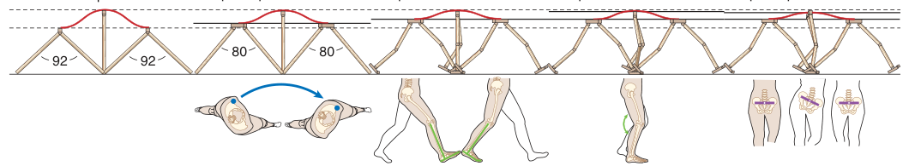
chân đung đưa tiến về phía trước, nhờ đó giảm thiểu lượng gập và duỗi háng cần thiết cho một chiều dài bước chân nhất định (so sánh Hình 15.27A với Hình 15.27B). Hệ quả của việc các chi dưới giữ gần hướng thẳng đứng hơn trong suốt chu kỳ dáng đi là các điểm thấp nhất của quỹ đạo trọng tâm được nâng lên, điều này làm giảm dịch chuyển hướng xuống của CoM. Xoay khớp cổ chân trên mặt phẳng sagittal tận dụng cấu hình của phức hợp cổ chân–bàn chân (xem Hình 15.27C). Ở thời điểm gót tiếp đất, cách xếp đặt của khớp cổ chân đưa xương gót (calcaneus) lồi lớn tiếp xúc với mặt đất, làm kéo dài một cách chức năng chi dưới. Gần cuối pha đứng, khi háng duỗi và gối bắt đầu gập, chi dưới được kéo dài nhờ gập lòng bàn chân (tức là nhấc gót). Sự kéo dài chức năng này của chi dưới ở cả hai đầu pha đứng còn làm giảm thêm dịch chuyển hướng xuống của CoM (so sánh Hình 15.27B với Hình 15.27C).53,102,103 Việc hạn chế dịch chuyển hướng lên của CoM được thực hiện một phần nhờ gập gối trong pha đứng, khi chi dưới ở hướng thẳng đứng nhất (xem Hình 15.27D). Xoay khung chậu trên mặt phẳng frontal còn hỗ trợ thêm trong việc giảm dịch chuyển hướng lên của CoM (xem Hình 15.27E). Trong pha đứng, mào chậu bên đối bên hạ xuống trong khi mào chậu bên cùng bên nâng lên. Vì vậy, trong suốt một chu kỳ dáng đi hoàn chỉnh, các mào chậu luân phiên nâng lên và hạ xuống giống như hai đầu của một cái bập bênh, nhưng điểm nằm ngay phía trước đốt sống cùng thứ hai (tức là điểm đại diện cho trọng tâm của cơ thể) vẫn tương đối đứng yên, cũng như điểm trụ của một cái bập bênh.53,103 Như được thể hiện trong Hình 15.28, sự kết hợp của bốn chiến lược nêu trên làm giảm tổng dịch chuyển thẳng đứng ròng của CoM. Dịch chuyển hướng xuống của CoM được giảm nhờ xoay khung chậu trên mặt phẳng ngang và xoay khớp cổ chân trên mặt phẳng sagittal. Dịch chuyển hướng lên của CoM được giảm nhờ gập gối trong pha đứng và xoay khung chậu trên mặt phẳng frontal. Công trình của Della Croce và cộng sự53 cho thấy xoay khớp cổ chân trên mặt phẳng sagittal có ảnh hưởng lớn nhất đến dịch chuyển thẳng đứng của CoM, tiếp theo là độ nghiêng khung chậu (pelvic obliquity), gập gối trong pha đứng, và xoay khung chậu trên mặt phẳng ngang. Không phải tất cả các nghiên cứu đều đồng ý về tầm quan trọng chức năng hay tính phù hợp của các yếu tố quyết định dáng đi. Ví dụ, công trình gần đây hơn của Lin và cộng sự,121 cho thấy xoay khung chậu trên mặt phẳng sagittal hoặc mặt phẳng ngang có vai trò hạn chế trong việc giảm dịch chuyển thẳng đứng của CoM. Ngay cả sau 60 năm kể từ bài báo ban đầu của Saunders và cộng sự187 về các yếu tố quyết định dáng đi, và bất chấp những tiến bộ về công nghệ kể từ thời điểm đó, vẫn chưa có sự đồng thuận hoàn toàn về vai trò sinh cơ học chính xác của từng yếu tố quyết định này. Dù vậy, các yếu tố quyết định này vẫn giữ một nền tảng lịch sử quan trọng trong nghiên cứu chính thức về dáng đi.
Trong khi một người đi bộ, trọng tâm của họ dịch chuyển sang hai bên và luôn nằm trong vùng chống đỡ động được cung cấp bởi hai bàn chân (xem Hình 15.24). Biên độ của dịch chuyển ngang này, được phản ánh một phần bởi độ rộng bước chân, phần lớn là một hàm số của mặt phẳng frontal
| Hướng tác động | Tên chiến lược | Tác dụng |
|---|---|---|
| Thẳng đứng | Xoay khung chậu trên mặt phẳng ngang | Giảm dịch chuyển hướng xuống của trọng tâm cơ thể (CoM) |
| Thẳng đứng | Xoay khớp cổ chân trên mặt phẳng sagittal | Giảm dịch chuyển hướng xuống của CoM |
| Thẳng đứng | Gập gối trong pha đứng | Giảm dịch chuyển hướng lên của CoM |
| Thẳng đứng | Xoay khung chậu trên mặt phẳng frontal | Giảm dịch chuyển hướng lên của CoM |
| Sang hai bên | Xoay khớp háng trên mặt phẳng frontal (độ rộng bước chân) | Giảm biên độ dịch chuyển sang hai bên của CoM |
Một phương pháp khác để báo cáo hoạt động cơ trong khi đi bộ là biểu thị lượng tín hiệu điện cơ đồ (EMG) tương đối so với một chuẩn tham chiếu (chủ đề ôn tập về EMG ở Chương 3). Trong nhiều nghiên cứu, chuẩn tham chiếu là tín hiệu tối đa được ghi trong một chu kỳ dáng đi của chính cơ đó, điều này giải thích tại sao trục Y của Hình 15.29 không có đơn vị và tại sao biểu diễn tín hiệu EMG của mỗi cơ tận dụng tối đa chiều dọc của đồ thị.241 Loại phân tích này cung cấp cái nhìn sâu sắc về mức kích hoạt tương đối của cơ (tức là một chỉ số về nỗ lực cơ) trong suốt chu kỳ dáng đi.
Cuối cùng, người đọc được nhắc nhở rằng thời điểm và đặc biệt là mức kích hoạt tương đối của các cơ trong dáng đi thay đổi tùy theo các tham số như tốc độ đi bộ,7,32,55,89,224 tải bổ sung,224 và độ dốc115 của mặt đất đi bộ. Trừ khi có tuyên bố khác, dữ liệu điện cơ đồ được trình bày và thảo luận trong suốt chương này dựa trên tốc độ đi bộ trung bình xấp xỉ 1.37 m/sec.
Chỉ có tác động của cơ dựng sống (erector spinae) và cơ thẳng bụng (rectus abdominis) được thảo luận ở đây. Đáng chú ý là các cơ này cho thấy sự kích hoạt gần như đồng thời ở phía bên phải và bên trái của cơ thể.
Cơ dựng sống, ở mức vùng thắt lưng, cho thấy hai giai đoạn hoạt động được xác định rõ ràng. Giai đoạn thứ nhất kéo dài từ hơi trước khi gót tiếp đất đến khoảng 20% của chu kỳ dáng đi. Giai đoạn thứ hai kéo dài từ 45% đến 70% của chu kỳ dáng đi, tương ứng với thời điểm gót bên đối bên tiếp đất.6,32,39,114 Hai đợt hoạt động này, từ cả cơ dựng sống bên phải và bên trái, khống chế động lượng góc hướng về phía trước của thân so với khớp háng ngay sau khi gót tiếp đất (một lực hãm) ở mỗi bước.
Cơ này có hoạt động rất thấp và biến động trong suốt chu kỳ dáng đi.6,49,232 Tuy vậy, hoạt động gia tăng xảy ra trong khoảng từ 20% đến 40% và một lần nữa trong khoảng từ 70% đến 90% của chu kỳ dáng đi. Sự gia tăng hoạt động nhỏ này trùng với thời điểm chuyển động khớp háng (tức là dang và khép khớp háng). Chiều rộng bước chân thông thường từ 8 đến 10 cm khi đi bộ làm giảm dịch chuyển sang hai bên của cơ thể, chủ yếu như một chiến lược nhằm giảm chi tiêu năng lượng.58,156 Tuy nhiên, vì chiều rộng bước chân này cũng làm giảm kích thước tiềm năng của vùng chống đỡ động, nó có thể đại diện cho một sự thỏa hiệp về mặt cơ học giữa việc bảo toàn năng lượng và độ ổn định của toàn bộ cơ thể. Về mặt lý thuyết, một chiều rộng bước chân lớn hơn 8 đến 10 cm mang lại độ ổn định lớn hơn với cái giá là chi tiêu năng lượng gia tăng. Ví dụ, những người có rối loạn thăng bằng thường chọn đi bộ với vùng chống đỡ rộng hơn như một biện pháp cải thiện độ ổn định của họ. Mặc dù chiến lược này làm tăng chi phí năng lượng của việc đi bộ, sự đánh đổi này có lẽ là xứng đáng, xét đến những hậu quả tiêu cực thường gặp của việc té ngã. Nhưng, như đã thảo luận trước đó đối với dịch chuyển thẳng đứng của CoM, chiều rộng bước chân thông thường từ 8 đến 10 cm dường như phản ánh khả năng tự nhiên vốn có của cơ thể trong việc tự sử dụng các chiến lược động học tối ưu nhằm giảm thiểu chi tiêu năng lượng. Đã được chứng minh rằng đi bộ với chiều rộng bước chân nhỏ hơn hoặc lớn hơn đều làm tăng chi phí năng lượng khi đi lại ở những người trẻ khỏe mạnh.58
Trong một chu kỳ dáng đi, hầu như tất cả các cơ của chi dưới đều thể hiện một hoặc hai đợt ngắn hoạt động điện, kéo dài nói chung từ 100 đến 400 msec (khoảng 10% đến 40% của chu kỳ dáng đi). Giống như tất cả các thành tố khác của dáng đi, sự kích hoạt cơ theo pha này được lặp lại trong mỗi sải chạy. Việc biết khi nào các cơ hoạt động trong chu kỳ dáng đi cung cấp cái nhìn sâu sắc về chức năng vận động học cụ thể của chúng. Kiến thức này cho phép các lệch dáng đi được hiểu và điều trị một cách dễ dàng hơn.
Hoạt động của hệ cơ chi dưới và hệ cơ thân đã được nghiên cứu sâu rộng bằng EMG. Trong cách diễn giải đơn giản nhất, hoạt động cơ có thể được xác định trên cơ sở thời gian; cơ đơn giản được coi là đang "bật" hoặc "tắt". Cơ được coi là "bật" khi biên độ tín hiệu điện cơ đồ của nó đạt một giá trị định trước trên mức nghỉ. Nếu không, cơ được coi là "tắt", hoặc im điện. Ví dụ, các thanh ngang màu đỏ trong Hình 15.29 minh họa khi nào một số cơ được chọn đang "bật" trong chu kỳ dáng đi.105
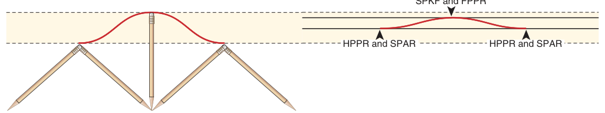
(nhãn trong hình: Phần trăm chu kỳ dáng đi — Percent of gait cycle; A: Cơ dựng sống [L3-L4] — Erector spinae [L3-L4]; Cơ thẳng bụng — Rectus abdominis; Cơ mông lớn — Gluteus maximus; Cơ chậu-thắt lưng — Iliopsoas; Cơ may — Sartorius; Cơ mông trung — Gluteus medius; Cơ mông nhỏ — Gluteus minimus; Cơ căng cân đùi — Tensor fascia lata; Cơ khép lớn — Adductor magnus; Cơ khép dài — Adductor longus; Thời điểm và cường độ tương đối của EMG trong dáng đi — Timing and relative intensity of EMG during gait)
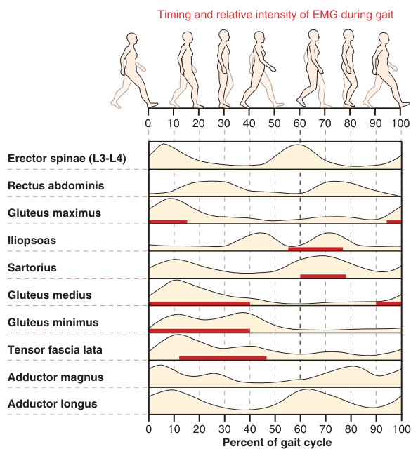
(Hình tiếp tục ở trang 680.)
cơ gập háng đang chủ động gập háng. Vì vậy, hoạt động gia tăng của cơ thẳng bụng ở cả hai bên có khả năng giúp ổn định khung chậu và cột sống thắt lưng và cung cấp một điểm bám cố định ổn định hơn cho các cơ gập háng, chủ yếu là cơ chậu-thắt lưng (iliopsoas) và cơ thẳng đùi (rectus femoris).
Ba nhóm cơ ở khớp háng đã được nghiên cứu sâu rộng trong khi đi bộ bình thường: các cơ duỗi háng, chẳng hạn cơ mông lớn (gluteus maximus) và nhóm cơ hamstrings (nhóm cơ sau đùi); các cơ gập háng, chẳng hạn cơ chậu (iliacus) và cơ thắt lưng (psoas); và các cơ dang háng, chẳng hạn cơ mông trung và cơ mông nhỏ.7,32,89,115,224 Ít được ghi chép đầy đủ hơn là vai trò của các cơ khép háng và các cơ xoay háng.32,89,192
Sự kích hoạt của cơ mông lớn bắt đầu ở cuối pha đung đưa và phục vụ hai mục đích — khởi đầu duỗi háng và chuẩn bị hệ cơ cho việc nhận trọng lượng ở đầu pha đứng (xem Hình 15.13). Ở thời điểm gót tiếp đất, do đó cơ mông lớn đã được kích hoạt sẵn để duỗi háng và ngăn ngừa hiện tượng "gập kiểu dao gập" (jackknifing) về phía trước, tức là gập thân không kiểm soát, qua xương đùi. Hiện tượng "gập kiểu dao gập" này sẽ xảy ra nếu sự dịch chuyển hướng trước của thân tiếp tục với vận tốc ổn định trong khi sự dịch chuyển hướng trước của khung chậu thông thường chậm lại một cách nhẹ nhàng nhưng đột ngột tại thời điểm gót tiếp đất. Cơ mông lớn duy trì hoạt động từ khi gót tiếp đất đến pha đứng giữa (tức là 30% đầu của chu kỳ dáng đi) để chống đỡ trọng lượng của cơ thể và sinh ra duỗi háng. Sự kích hoạt mạnh của cơ mông lớn khi bàn chân được đặt vững chắc cũng hỗ trợ một cách gián tiếp cho việc duỗi gối. Trong pha đung đưa, cơ mông lớn phần lớn không hoạt động cho đến cuối pha đung đưa, khi một sự kích hoạt vừa phải là cần thiết để trước hết giảm tốc háng đang gập và sau đó khởi đầu sự duỗi của nó.
Các cơ hamstrings hoạt động trong 10% đầu của chu kỳ dáng đi, có lẽ vì những lý do tương tự như cơ mông lớn, là để duỗi háng và chống đỡ trọng lượng của cơ thể (xem Hình 15.29B).
Dữ liệu điện cơ đồ về các cơ gập háng còn tương đối ít ỏi trong tài liệu, có lẽ phản ánh nhu cầu phải sử dụng điện cực trong cơ để thu thập dữ liệu. Dữ liệu hiện có chỉ ra rằng cơ chậu-thắt lưng trở nên hoạt động từ khá sớm trước khi ngón chân rời đất và duy trì như vậy cho đến đầu pha đung đưa.7 Sự kích hoạt trong khoảng từ 30% đến 50% của chu kỳ dáng đi có lẽ ban đầu là co căng (eccentric), vì háng đang duỗi vào thời điểm đó, tiếp theo là một co rút tâm thu (concentric) để khởi đầu gập háng ngay trước khi ngón chân rời đất. Mặc dù háng tiếp tục gập vào cuối pha đung đưa, các cơ gập háng chỉ hoạt động trong 50% đầu của pha đung đưa. Gập háng trong nửa sau của pha đung đưa là kết quả của động lượng hướng trước mà đùi có được ở đầu pha đung đưa. Cơ thẳng đùi cũng đóng vai trò là cơ gập háng và do đó hỗ trợ các tác động nêu trên.7,158 Các vai trò then chốt của các cơ gập háng là đưa chi dưới tiến về phía trước trong pha đung đưa để chuẩn bị cho bước tiếp theo và nhấc chi dưới lên để cho phép ngón chân vượt qua khoảng chắn trong pha đung đưa.
trong phần lớn pha đứng. Trong thời gian này, các cơ xoay trong này đưa phía đối bên của khung chậu tiến về phía trước trên mặt phẳng ngang, nhờ đó hỗ trợ việc đưa chi đung đưa tiến về phía trước (Hình 12.36).
Các cơ xoay ngoài háng, gồm sáu cơ xoay ngoài ngắn, các sợi sau của cơ mông trung, và cơ mông lớn, hoạt động nhiều nhất ở đầu pha đứng. Các cơ này, phối hợp với các cơ xoay trong háng, khống chế cách xếp đặt của khớp háng trên mặt phẳng ngang. Đặc biệt, chúng khống chế xoay khung chậu trong khi chi dưới được cố định vào mặt đất. Hãy xét tác động quan trọng của các cơ xoay này trong việc thay đổi hướng nhanh khi đi bộ hoặc chạy.
Sự kích hoạt co căng (eccentric) của các cơ xoay ngoài có thể đặc biệt quan trọng đối với việc khống chế xoay trong của chi dưới ở đầu pha đứng (xem Hình 15.23). Sức mạnh hoặc khả năng khống chế không đầy đủ của các cơ xoay ngoài có thể dẫn đến xoay trong quá mức của xương đùi, thường được thấy kèm với sấp bàn chân (foot pronation) quá mức.
Hai nhóm cơ đóng vai trò then chốt ở khớp gối trong khi đi lại: các cơ duỗi gối và các cơ gập gối.32,55,89,115,224
Xét như một nhóm, cơ tứ đầu đùi (quadriceps) hoạt động ở giai đoạn rất muộn của pha đung đưa để chuẩn bị cho gót tiếp đất (xem Hình 15.29B). Tuy vậy, đợt hoạt động chính xảy ra ngay sau khi gót tiếp đất. Chức năng của cơ tứ đầu đùi vào thời điểm này là khống chế sự gập gối diễn ra trong 10% đầu của chu kỳ dáng đi. Sự kích hoạt co căng (eccentric) có tác dụng đệm cho tốc độ nhận trọng lượng lên chi dưới (tức là hấp thụ sốc) và ngăn ngừa gập gối quá mức. Sau đó cơ tứ đầu đùi co rút tâm thu (concentric) để duỗi gối và chống đỡ trọng lượng của cơ thể trong pha đứng giữa.
Nene và cộng sự158 đã so sánh một cách có phê phán hoạt động cơ của thành tố cơ thẳng đùi và các thành tố cơ rộng (vasti) của cơ tứ đầu đùi trong khi đi bộ. Họ xác lập rằng cơ thẳng đùi không hoạt động tại thời điểm gót tiếp đất như truyền thống vẫn quan niệm, mà chỉ trước và sau khi ngón chân rời đất. Chức năng của cơ thẳng đùi tại thời điểm ngón chân rời đất có lẽ nhắm vào việc khống chế mức độ gập gối. Bằng cách sử dụng cả điện cực bề mặt và điện cực trong cơ trong nghiên cứu này, Nene và cộng sự158 kết luận rằng đợt tín hiệu điện cơ đồ của cơ thẳng đùi thường được báo cáo tại thời điểm gót tiếp đất trong tài liệu (và được thể hiện trong Hình 15.29B) là kết quả của nhiễu chéo (cross-talk) từ cơ rộng trong (vastus intermedius) nằm bên dưới.
Tóm lại, có vẻ như các thành tố cơ nằm trong cơ tứ đầu đùi có các chức năng khác nhau trong dáng đi, ít nhất như được biểu hiện ở tốc độ đi bộ bình thường. Khi hoạt động tại thời điểm gót tiếp đất, các cơ vasti về cơ bản đóng vai trò như các bộ giảm xóc. Theo
Theo Andersson và các cộng sự,7 rectus femoris (cơ thẳng đùi) có thể hỗ trợ hành động này trong khi đi bộ ở tốc độ vượt quá 2 m/sec và trong khi chạy. Chức năng chính của rectus femoris trong dáng đi diễn ra trong giai đoạn chuyển tiếp từ pha đứng sang pha đung đưa và
dường như nhằm hỗ trợ khởi động gập hông cũng như kiểm soát gập gối.
Các cơ gập gối (KNEE FLEXORS): Hamstrings (các cơ kheo) hoạt động mạnh nhất từ ngay trước đến ngay sau khi gót chân chạm đất. Trước khi gót chân chạm đất, các cơ kheo thực hiện giảm tốc. Sartorius (cơ may), một cơ ở phía trước của hông, cũng hoạt động
với tư cách là cơ gập hông từ lúc ngón chân rời đất cho đến giữa pha đung đưa. Sự kích hoạt trong pha đứng sớm, như được minh họa trong Hình 15.29A, không được báo cáo nhất quán bởi các nghiên cứu khác, đặc biệt là những nghiên cứu sử dụng điện cực điện cơ đồ nội cơ.7 Các nghiên cứu báo cáo
sự kích hoạt của cơ này trong pha đứng sớm thường dùng điện cực điện cơ đồ bề mặt, làm dấy lên khả năng rằng sự tăng tín hiệu điện cơ đồ là kết quả của hiện tượng “cross-talk” (xem thảo luận về EMG trong Chương 3), tín hiệu điện cơ
đồ phát ra thực chất từ các cơ vasti nằm bên dưới.
Các cơ giạng hông (HIP ABDUCTORS): Trong khi các cơ gập và duỗi hông đóng vai trò chính trong mặt phẳng sagittal (sagittal plane), thì các cơ giạng hông—gluteus medius (cơ mông trung), gluteus minimus (cơ mông nhỏ), và tensor fascia lata (cơ căng mạc đùi)—ổn định xương chậu trong mặt phẳng
frontal (frontal plane). Gluteus medius hoạt động về cuối pha đung đưa để chuẩn bị cho khi gót chân chạm đất. Gluteus medius và gluteus minimus, hai cơ giạng hông chính, hoạt động mạnh nhất trong 40% đầu của chu kỳ dáng đi, đặc biệt là trong giai đoạn một chân
chịu lực.193,194 Chức năng chính của các cơ giạng là kiểm soát sự hạ thấp nhẹ của xương chậu bên đối bên ở phía của chi đang đung đưa (xem Hình 15.15). Sau hành động ly tâm này, các cơ này hoạt động đồng tâm để khởi động sự giạng tương đối của
hông diễn ra ở pha đứng muộn. Như đã mô tả trước đó trong chương này và kỹ hơn trong Chương 12, mô-men mặt phẳng frontal đầy đủ từ các cơ giạng hông là rất quan trọng cho sự ổn định trong mặt phẳng frontal trong dáng đi. Một chiếc gậy dùng ở tay bên đối bên với cơ giạng hông
yếu là cách hiệu quả để giảm các yêu cầu đặt lên các cơ giạng đã suy yếu, từ đó giảm chuyển động quá mức trong mặt phẳng frontal của xương chậu do trọng lượng cơ thể gây ra (xem Chương 12).
Các cơ giạng hông cũng kiểm soát sự căn chỉnh của xương đùi trong mặt phẳng frontal. Sự kích hoạt cơ không đầy đủ có thể dẫn đến khép quá mức xương đùi, gây căn chỉnh kém của chi dưới và mô-men valgus quá mức tại gối trong
pha đứng. Các vai trò phụ khác của gluteus medius và gluteus minimus bao gồm hỗ trợ gập hông và xoay trong, dùng các sợi phía trước, và hỗ trợ duỗi hông và xoay ngoài, dùng các sợi phía sau. Do đó, có bằng chứng về
những vai trò hơi khác nhau của các phần riêng biệt của hai cơ này trong dáng đi, trong đó các sợi phía trước của cả hai cơ mông hoạt động muộn hơn trong pha đứng so với các sợi phía sau tương ứng. Sự kích hoạt chọn lọc
của sợi phía trước có thể hỗ trợ sự xoay về phía trước của xương chậu sang bên đối bên (mặt phẳng ngang).147,194 Các cơ khép hông và cơ xoay hông (HIP ADDUCTORS AND HIP ROTATORS): Các cơ khép hông cho thấy hai đợt hoạt động trong dáng đi.241 Đợt
đầu tiên xảy ra khi gót chân chạm đất và đợt thứ hai ngay sau khi ngón chân rời đất.
Đợt hoạt động ban đầu nhiều khả năng giúp ổn định hông thông qua đồng kích hoạt với các cơ duỗi hông và các cơ giạng hông. Cũng có khả năng rằng adductor magnus (cơ khép lớn) và các cơ khép khác hỗ trợ duỗi hông vào thời điểm này trong chu kỳ dáng đi. Đợt
hoạt động thứ hai, sau khi ngón chân rời đất, có khả năng hỗ trợ khởi động gập hông. Như đã thảo luận trong Chương 12, các cơ khép có cánh tay mô-men để duỗi hông khi hông đang gập (tức là, vị trí hông lúc
gót chân chạm đất) và cánh tay mô-men để gập hông khi hông đang duỗi (tức là, vị trí hông lúc ngón chân rời đất).
Các cơ xoay trong của hông (tensor fascia lata, gluteus minimus, và các sợi phía trước của gluteus medius) hoạt động trong suốt
không bị đối kháng bởi sự kích hoạt ly tâm của tibialis anterior (cơ chày trước) và các cơ gập mu bàn chân khác tại cổ chân, mô-men gập lòng bàn chân thụ động lớn này dẫn đến sai lệch dáng đi được gọi là “foot slap.” Thuật ngữ này
bắt nguồn từ âm thanh đặc trưng do bàn chân vỗ vào mặt đất ngay sau khi gót chân chạm đất. Từ lúc gót chân chạm đất đến lúc bàn chân phẳng, tibialis anterior cũng có thể hỗ trợ làm chậm sự pronation của
bàn chân, cũng thông qua kích hoạt ly tâm. Tuy nhiên, lợi thế cơ học kém của cơ trong việc lộn bàn chân vào trong đặt ra một số nghi ngờ về hiệu quả của tibialis anterior trong việc kiểm soát chặt chẽ sự pronation của bàn chân.
Đợt kích hoạt thứ hai của tibialis anterior xảy ra trong pha đung đưa. Mục đích của sự kích hoạt này là tạo ra đủ sự gập mu bàn chân (dorsiflexion) tại cổ chân để các ngón chân rời khỏi mặt đất. Yếu cực kỳ của tibialis anterior và các
cơ gập mu bàn chân khác tại cổ chân thường dẫn đến “drop foot” trong pha đung đưa. Như một cơ chế bù trừ, cá nhân thường gập quá mức gối và hông trong pha đung đưa. Các động tác bù trừ khác, chẳng hạn như nhấc cao người, xoay hông hình nón,
và nhấc hông (minh họa sau trong chương này), cũng có thể được dùng để đưa các ngón chân rời khỏi mặt đất. Một biện pháp phổ biến cho bàn chân rơi là nẹp cổ chân-bàn chân phía sau duy trì thụ động sự gập mu bàn chân trong pha đung đưa.
duỗi gối để chuẩn bị đặt bàn chân xuống mặt đất. Trong 10% đầu của pha đứng, các cơ kheo hoạt động để hỗ trợ duỗi hông và cung cấp sự ổn định cho gối thông qua đồng kích hoạt. Đầu ngắn của biceps femoris (cơ hai đầu đùi)
cũng có thể hỗ trợ gập gối trong pha đung đưa. Hầu hết sự gập gối trước khi ngón chân rời đất và trong pha đung đưa của dáng đi được thực hiện thụ động do hông đang gập và một lượng nhỏ
kích hoạt gastrocnemius.195,241 Cổ chân và bàn chân (Ankle and Foot): Tại cổ chân và bàn chân, một số cơ đóng vai trò then chốt trong dáng đi bình thường: tibialis anterior, extensor digitorum, extensor hallucis longus, gastrocnemius, soleus, tibialis posterior, và fibularis
longus và brevis.32,55,146,224,228 Cơ chày trước (TIBIALIS ANTERIOR): Tibialis anterior có hai giai đoạn hoạt động.147 Khi gót chân chạm đất, có sự kích hoạt ly tâm mạnh để làm chậm sự gập lòng bàn chân thụ động của cổ chân do trọng lượng cơ thể
được áp lên phần phía sau cùng của xương gót chân. Nếu...
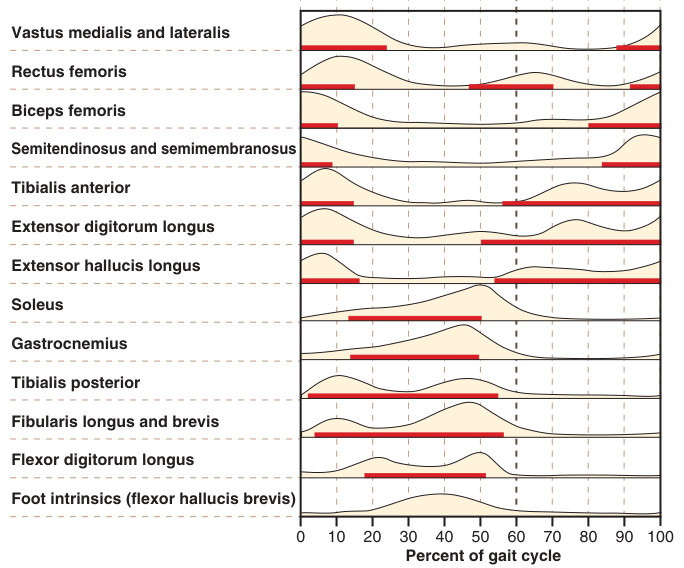
Cơ chày sau (TIBIALIS POSTERIOR): Tibialis posterior, một cơ supinator mạnh của bàn chân, hoạt động gần như trong suốt toàn bộ pha đứng. Tibialis posterior làm chậm sự pronation của bàn chân từ ngay sau
khi gót chân chạm đất đến khoảng 35% của chu kỳ dáng đi và supinate bàn chân từ giữa 35% đến 55% (pha đứng giữa đến lúc ngón chân rời đất) của chu kỳ dáng đi.145,147,148 Cơ tibialis posterior tác động lên cả bàn chân và
xương chày trong suốt pha đứng. Dựa trên đường kéo của cơ, sự rút ngắn của cơ này có thể supinate phần gót sau (và nâng vòm bàn chân) đồng thời xoay ngoài cẳng chân so với bàn chân. Quả thực, cả hai chuyển động ghép cặp này
động học xảy ra khi tibialis posterior hoạt động. Dù chỉ là suy đoán, thật thú vị khi xem xét rằng sự gập mu bàn chân của khớp talocrural (xảy ra trong suốt 50% của chu kỳ dáng đi) có thể giúp kéo giãn tibialis posterior vào thời điểm mà cơ này có thể
bị rút ngắn quá mức trong hành động xoay ngoài-supination ghép cặp của nó lên cẳng chân và bàn chân. Việc duy trì chiều dài (và sức căng) đầy đủ của cơ này vào thời điểm này có thể hỗ trợ nâng vòm dọc trong và tăng độ cứng cần thiết
cho bàn chân để chuẩn bị cho cú đẩy sắp tới. Sự kích hoạt cơ đồng tâm và ly tâm gần như đồng thời và kết hợp trong tibialis posterior qua nhiều khớp có thể giải thích một phần sự dễ tổn thương tương đối của cơ này đối với viêm gân đau
hoặc thoái hóa.229,239 Mối quan hệ nhân-quả này được củng cố khi xét đến tải trọng lớn đặt lên cơ, dây chằng lò xo, và vòm dọc trong trong vô số chu kỳ dáng đi trong suốt cuộc đời.
Có bằng chứng trong y văn rằng những người có bàn chân pronation quá mức (bàn chân phẳng) cho thấy sự kích hoạt lớn hơn của các cơ supinator như tibialis posterior, tibialis anterior, và cơ
duỗi ngón cái dài.146 Những người năng động với bàn chân pronation quá mức có thể phát triển tình trạng quá tải và sau đó là căng cơ supinator khi họ cố gắng kiểm soát xu hướng pronation quá mức của bàn chân trong pha đứng sớm.
Tibialis posterior nhận được sự chú ý đặc biệt trong điều trị người bị bại não. Tibialis posterior thường tăng hoạt, cùng với cơ soleus, có thể gây dị tật equinovarus của bàn chân và cổ chân, dẫn đến việc người đó
đi bộ trên bàn chân bị gập lòng bàn chân và supinate.
Các cơ mác (FIBULARIS MUSCLES): Fibularis (peroneus) brevis và longus hoạt động từ khoảng 5% của chu kỳ dáng đi đến ngay trước khi ngón chân rời đất.147 Ngoài chức năng là các cơ gập lòng bàn chân, các cơ pronation (xoay ra ngoài) này giúp
đối kháng tác động lộn vào trong mạnh do kích hoạt của tibialis posterior và các cơ sâu phía sau khác. Fibularis longus cũng hỗ trợ động học của bàn chân bằng cách giữ chặt tia đầu tiên vào mặt đất, tạo ra một đế vững chắc cho
sự hoạt động của bàn chân như một đòn bẩy cứng trong nửa sau của pha đứng trong dáng đi.
Các cơ nội tại của bàn chân (INTRINSIC MUSCLES OF THE FOOT): Các cơ nội tại của bàn chân thường hoạt động từ pha đứng giữa đến lúc ngón chân rời đất (từ 30% đến 60% của chu kỳ dáng đi). Các cơ này ổn định phần trước bàn chân và nâng vòm dọc trong,
từ đó cung cấp một đòn bẩy cứng cho sự gập lòng bàn chân tại cổ chân trong nửa sau của pha đứng. Chúng cũng có khả năng hỗ trợ kiểm soát sự duỗi ngón chân giữa lúc gót chân rời đất và lúc ngón chân rời đất.
Các cơ duỗi ngón và duỗi ngón cái dài (EXTENSOR DIGITORUM AND EXTENSOR HALLUCIS LONGUS): Tương tự như tibialis anterior, extensor digitorum longus và extensor hallucis longus làm chậm sự gập lòng bàn chân của cổ chân khi gót chân chạm đất. Tuy nhiên, các cơ này thiếu đường
lực để làm chậm sự pronation của bàn chân trong phần đầu của pha đứng. Trong pha đung đưa, các cơ duỗi ngón hỗ trợ gập mu bàn chân tại cổ chân và duỗi các ngón chân để đảm bảo các ngón chân rời khỏi mặt đất. Hoạt động nhẹ của extensor digitorum longus và
extensor hallucis longus trong cú đẩy có thể cung cấp sự ổn định cho cổ chân thông qua đồng kích hoạt với các cơ gập lòng bàn chân tại cổ chân.241 Các cơ gập lòng bàn chân tại cổ chân (ANKLE PLANTAR FLEXORS): Soleus và gastrocnemius (triceps surae) hoạt động trong suốt
hầu hết pha đứng, với ngoại lệ đáng chú ý là 10% đầu của chu kỳ dáng đi. Trong giai đoạn này, sự gập lòng bàn chân của bàn chân được kiểm soát bởi hành động ly tâm của các cơ gập mu bàn chân tại cổ chân. Từ khoảng 10% của chu kỳ dáng đi đến lúc gót chân rời đất
(khoảng từ 30% đến 40% của chu kỳ dáng đi), các cơ gập lòng bàn chân tại cổ chân hoạt động ly tâm để kiểm soát chuyển động về phía trước của xương chày và xương mác so với xương sên (tức là, gập mu bàn chân tại cổ chân). Chuyển động về phía trước quá mức hoặc không được kiểm soát của chân
dẫn đến gập mu bàn chân quá mức tại cổ chân và có thể gập gối không kiểm soát.
Đợt hoạt động chính của các cơ gập lòng bàn chân tại cổ chân xảy ra gần lúc gót chân rời đất và giảm nhanh về gần zero lúc ngón chân rời đất. Trong giai đoạn ngắn ngủi này, sự rút ngắn của các cơ tạo ra mô-men gập lòng bàn chân tại cổ chân tham gia vào sự đẩy về phía trước
của cơ thể. Hành động này được gọi là cú đẩy (push off).
Gastrocnemius cũng tạo ra hoạt động cơ mức thấp trong pha đung đưa sớm, có lẽ để hỗ trợ gập gối. Vì rectus femoris cũng hoạt động trong pha đung đưa sớm, một lượng nhỏ đồng kích hoạt của các cơ gập và duỗi gối đang diễn ra.241
Các cơ gập lòng bàn chân khác của cổ chân (tibialis posterior, flexor hallucis longus, flexor digitorum longus, và fibularis longus và brevis) hỗ trợ nhóm gastrocnemius-soleus trong các hành động đã mô tả trước đó. Một số hành động bổ sung của các cơ này thì
đáng chú ý.
Công trình của Stewart và các cộng sự208 cung cấp một số hiểu biết bổ sung thú vị về vai trò chức năng của cơ triceps surae trong pha đứng của dáng đi. Ở một nhóm người khỏe mạnh, kích thích điện cơ soleus trong pha đứng
đã dẫn đến mức độ gập gối giảm trong phần này của chu kỳ dáng đi. Ngược lại, kích thích điện cơ gastrocnemius hai khớp trong pha đứng tạo ra sự gập gối lớn hơn bình thường, cũng như sự gập mu bàn chân tại cổ chân tăng
lên. Những phát hiện này gợi ý một liên kết sinh cơ học phức tạp giữa sự kiểm soát trong mặt phẳng sagittal của gối và cổ chân trong pha đứng. Sự rối loạn kiểm soát này ở hai khớp thường thấy ở những người mắc một số bệnh lý
thần kinh cơ.
Động lực học (KINETICS): Hiểu các lực chịu trách nhiệm cho chuyển động trong dáng đi đóng vai trò then chốt trong việc hiểu chuyển động bình thường và bệnh lý. Mặc dù động lực học (nghiên cứu về các lực) của dáng đi không quan sát được bằng mắt, nhưng cuối cùng chúng chịu trách nhiệm
cho động học được quan sát.
Lực phản ứng từ mặt đất (Ground Reaction Forces): Trong khi đi lại, các lực được áp dụng dưới bề mặt bàn chân mỗi khi một người bước chân. Các lực do bàn chân áp lên mặt đất được gọi là lực bàn chân. Ngược lại, các lực
do mặt đất áp lên bàn chân được gọi là lực phản ứng từ mặt đất (hoặc sàn). Các lực này có độ lớn bằng nhau nhưng hướng ngược chiều nhau. (Định luật thứ ba của Newton—định luật tác dụng và phản tác dụng—phát biểu rằng các lực luôn hiện diện theo cặp, có độ lớn bằng nhau)
và hướng ngược chiều nhau. Chương này tập trung chủ yếu vào lực phản ứng từ mặt đất vì tác động mà chúng có thể có đối với cơ thể.
Mô tả về lực phản ứng từ mặt đất tuân theo hệ tọa độ Cartesian, với các lực được biểu diễn dọc theo ba trục trực giao: thẳng đứng, trước-sau, và trong-ngoài.
Tổng vector của ba lực cho ra một vector lực tổng hợp duy nhất giữa bàn chân và mặt đất. Phép cộng vector như vậy thực hiện cho các thành phần thẳng đứng và trước-sau của lực phản ứng từ mặt đất dẫn đến
biểu diễn “butterfly”
cổ điển của lực phản ứng từ mặt đất cho một bước chân (Hình 15.30).
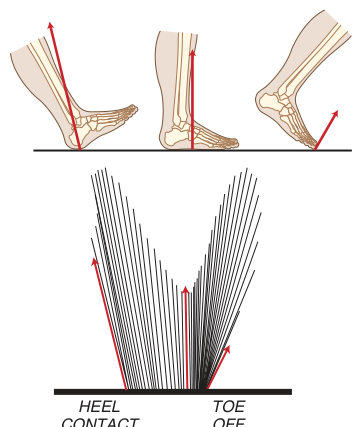
trước-sau tại các khoảng thời gian đều đặn (tức là, cứ sau 10 msec trong trường hợp này). Phần trên của hình biểu diễn cách các đường liên tiếp từ “butterfly” phản ánh sự tiến triển của việc áp lực
dưới bàn chân từ lúc gót chân chạm đất đến lúc ngón chân rời đất. Các vector màu đỏ chỉ ra thời điểm gót chân chạm đất, pha đứng giữa, và lúc ngón chân rời đất. (Dữ liệu từ Whittle M: Gait analysis: an introduction, ed 4, Oxford, 2007, Butterworth-Heinemann.) (nhãn trong hình: Ngón chân rời đất [TOE OFF]; Gót chân chạm đất [HEEL CONTACT])
Như đã mô tả trước đó trong chương và sách giáo khoa, một thành phần vận động học quan trọng của giai đoạn đáp ứng tải trọng trong chu kỳ dáng đi là sự xoay trong toàn thể của chi dưới kết hợp với pronation của bàn chân. Chuyển động này thường
được mô tả lỏng lẻo trên lâm sàng là “pronation” toàn thể của toàn bộ chi dưới. Chuyển động như vậy, khi được kiểm soát, cung cấp ít nhất hai chức năng sinh cơ học hữu ích. Thứ nhất, sự pronation tại khớp dưới sên (đặc biệt là thành phần nằm ngang của nó) cho phép
sự tiêu tan của xoay trong còn lại của chi dưới sau khi gót chân chạm đất. Thứ hai, pronation tại khớp dưới sên hoạt động phối hợp với sự hạ thấp có kiểm soát của vòm dọc trong—cả hai chuyển động đều nhằm giúp hấp thụ một phần
tác động của tải trọng. Để có hiệu quả nhất, “phản ứng pronation” tổng thể của chi dưới phải được thực hiện trong biên độ hạn chế và thời gian quy định. Trong tình huống xấu nhất, pronation chi dưới quá mức, đặc biệt là khi tham gia
các môn thể thao liên quan đến chạy và nhảy, có thể dẫn đến “sụp đổ phía trong” của gối, tiềm ẩn dẫn đến nhiều bệnh lý chi dưới khác nhau, bao gồm đau xương bánh chè-đùi và chấn thương không tiếp xúc của dây chằng chéo trước.174
Một câu hỏi cơ bản có liên quan lâm sàng liên quan đến nguồn gốc của sự khởi phát và kiểm soát pronation toàn thể của chi dưới trong phần đầu của pha đứng khi đi bộ và chạy.84,174 Do bản chất chịu trọng lượng
của pha đứng, người ta từ lâu đã giả định rằng xoay trong của chi dưới xảy ra để đáp ứng với kiểu pronation tổng thể của bàn chân. Pronation của bàn chân gây xoay trong xương chày, lần lượt dẫn đến xoay trong
của xương đùi. Quan điểm này gợi ý sự kiểm soát vận động học “từ dưới lên” đối với pronation toàn thể của chi dưới và là cơ sở để kê giày chuyên dụng và nẹp chỉnh hình bàn chân cho những người có biểu hiện pronation quá mức (và gây đau)
toàn thể của toàn bộ chi dưới.84 Ngược lại, một quan điểm gần đây hơn ủng hộ sự kiểm soát “từ trên xuống” đối với pronation toàn thể của chi dưới đã được đề xuất. Dựa trên quan điểm này, pronation quá mức của toàn bộ chi
dưới chủ yếu kết quả từ quá nhiều xoay trong và khép xương đùi do kích hoạt hoặc sức mạnh không đầy đủ của các cơ xoay ngoài và giạng hông trong suốt nhưng đặc biệt là trong pha đứng sớm.141,200 Sự kiểm soát kém này
của chuyển động xương đùi sẽ dẫn đến xoay trong quá mức của xương chày và cuối cùng là pronation quá mức của bàn chân.
Những người ủng hộ quan điểm từ trên xuống suy luận rằng việc điều chỉnh pronation quá mức của chi dưới và “sự sụp đổ phía trong” của gối liên quan được thực hiện tốt nhất thông qua các nỗ lực điều trị cải thiện sự kiểm soát và sức mạnh của cơ
vùng hông.
Có khả năng rằng cả hai quan điểm vận động học từ dưới lên và từ trên xuống đều bổ sung cho nhau thay vì loại trừ nhau.14 Cần tiếp tục nghiên cứu lâm sàng và sinh cơ học để tinh chỉnh thêm các phương pháp chẩn đoán và điều trị cho những người
bị bệnh lý chi dưới liên quan đến pronation toàn thể quá mức hoặc kiểm soát kém của chi dưới.
Các lực trước-sau (ANTERIOR-POSTERIOR FORCES): Trong hướng trước-sau, các lực cắt được áp dụng song song với bề mặt đỡ. Khi gót chân chạm đất, lực phản ứng từ mặt đất hướng về phía sau (tức là, bàn chân áp một lực hướng về phía
trước lên mặt đất) (Hình 15.31D và VIDEO 15.5). Tại thời điểm đó, cần có đủ ma sát giữa bàn chân và mặt đất để ngăn bàn chân trượt về phía trước (hãy tưởng tượng hình ảnh hoạt hình cổ điển về một người ngã xuống đất sau khi trượt
trên vỏ chuối). Khi độ lớn của lực phản ứng từ mặt đất theo hướng ngang tăng lên với bước dài hơn và tốc độ đi bộ nhanh hơn, yêu cầu về ma sát giữa bàn chân và mặt đất để ngăn bàn chân trượt cũng tăng lên.44,86,123 Theo
đó, hệ số ma sát cần thiết cho việc đi lại được tính là tỷ lệ của lực cắt tổng hợp (là tổng vector của các lực ngang kết hợp theo hướng trước-sau và trong-ngoài) chia cho lực thẳng đứng
áp dụng dưới bàn chân.30,44 Các chiến lược để ngăn trượt là giảm thiểu khoảng cách giữa vị trí bàn chân và CoM của cơ thể và giảm tốc độ đi bộ. Đây là lý do tại sao người ta thường bước ngắn hơn và hẹp hơn khi đi trên bề mặt đóng băng—
họ đang giảm nhu cầu ma sát bằng cách giữ bàn chân gần như ngay dưới CoM.
Trong nửa sau của pha đứng, lực phản ứng từ mặt đất hướng về phía trước, với bàn chân áp lực hướng về phía sau lên mặt đất để đẩy cơ thể về phía trước. Độ lớn của lực đẩy phụ thuộc vào tốc độ đi bộ và,
đặc biệt là các nỗ lực tăng tốc. Ma sát không đủ giữa bàn chân và mặt đất vào thời điểm này thường khiến bàn chân trượt về phía sau mà không đẩy cơ thể về phía trước. Điều này giải thích sự
Lực thẳng đứng (VERTICAL FORCES): Các lực thẳng đứng là những lực hướng vuông góc với bề mặt đỡ. Các lực phản ứng từ mặt đất thẳng đứng này đạt đỉnh hai lần trong một chu kỳ dáng đi. Các lực lớn hơn nhẹ so với trọng lượng cơ thể vào thời điểm pha đứng sớm và một lần nữa sau khi gót chân rời đất (Hình 15.31A,C
và VIDEO 15.5). Trong pha đứng giữa, lực phản ứng từ mặt đất nhỏ hơn nhẹ so với trọng lượng cơ thể. Sự dao động lực này là kết quả của gia tốc thẳng đứng của CoM cơ thể. (Lực là hàm của khối lượng và gia tốc: F = ma.) Trong phần đầu của
pha đứng, CoM của cơ thể đang di chuyển xuống (xem Hình 15.24). Do đó, cần một lực phản ứng từ mặt đất thẳng đứng lớn hơn trọng lượng cơ thể để ban đầu làm chậm chuyển động xuống của cơ thể rồi tăng tốc nó lên. (Điều này tương tự
như nhảy lên cân phòng tắm và trong chốc lát thấy số cân nặng cao hơn trọng lượng cơ thể tĩnh.) Tại pha đứng giữa, các lực phản ứng từ mặt đất thẳng đứng nhỏ hơn trọng lượng cơ thể do sự “giảm tải” tương đối gây ra bởi động lượng hướng lên của
cơ thể đạt được trong phần đầu của pha đứng. Lực phản ứng từ mặt đất cao hơn tại cú đẩy phản ánh sự đẩy kết hợp do các cơ gập lòng bàn chân tạo ra và nhu cầu đảo ngược chuyển động xuống của cơ thể xảy ra ở pha đứng muộn.
Giá trị đỉnh của lực phản ứng từ mặt đất (tính theo phần trăm trọng lượng cơ thể): Thẳng đứng: 120% trọng lượng cơ thể (BW); Trước-sau: 20% BW; Trong-ngoài: 5% BW.
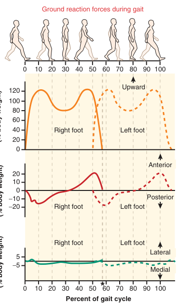
VIDEO 15.5 và 15.6). (A) minh họa các GRF thẳng đứng (mũi tên màu cam) và trước-sau (mũi tên màu đỏ) cùng với lực bàn chân (mũi tên màu đen) tại 10% của chu kỳ dáng đi. (B) minh họa các lực trong-ngoài tại 10% của chu kỳ dáng đi. (C–E) cho thấy
các GRF cho một chu kỳ dáng đi. Các đường đứt nét là dữ liệu cho pha đứng ở chân trái.
(nhãn trong hình 15.31: GRF thẳng đứng [% trọng lượng cơ thể]; GRF trước-sau [% trọng lượng cơ thể]; GRF trong-ngoài [% trọng lượng cơ thể]; Ngón chân rời đất ở 57%; Phần trăm chu kỳ dáng đi; Hướng lên [Upward]; Phía trước [Anterior]; Phía sau [Posterior]; Trong [Medial]; Ngoài [Lateral]; Lực phản ứng từ mặt đất [GROUND REACTION FORCES]; Lực bàn chân [FOOT FORCES]; Chân phải [Right foot]; Chân trái [Left foot]; Dáng đi [Ground reaction forces during gait]; Các giá trị trục: 50, 60, 90, 100, 90, 100, −20, −10, −5; Bảng A [A]; Bảng B [B]; Bảng C [C]; Bảng D [D]; Bảng E [E])
Đường đi của tâm áp lực (Path of the Center of Pressure): Đường đi của tâm áp lực (CoP) dưới bàn chân trong suốt pha đứng tuân theo một kiểu tương đối có thể lặp lại (Hình 15.32).
(Thuật ngữ áp lực được dùng để mô tả lực phản ứng từ mặt đất liên quan đến vùng áp dụng cụ thể của nó.) Khi gót chân chạm đất, CoP nằm ngay bên ngoài điểm giữa của gót chân. Sau đó nó di chuyển
dần đến vùng giữa bàn chân phía ngoài tại pha đứng giữa, và đến vùng trước bàn chân phía trong (dưới đầu xương bàn chân thứ nhất hoặc thứ hai) trong giai đoạn gót chân rời đất đến ngón chân rời đất. Vị trí của CoP giúp giải thích xu hướng cổ chân và bàn chân gập lòng bàn chân và
xoay ra ngoài, tương ứng, khi gót chân chạm đất (Hình 15.33). Cả hai xu hướng đều được kiểm soát một phần bởi sự kích hoạt ly tâm của các cơ cổ chân, cụ thể là các cơ gập mu bàn chân tại cổ chân, bao gồm tibialis anterior.
khó khăn gặp phải khi một người tăng tốc nhanh trong khi đi trên bề mặt trơn trượt.
Lực phản ứng từ mặt đất đỉnh theo hướng trước-sau thường bằng khoảng 20% trọng lượng cơ thể. Các lực cắt này phần lớn là kết quả của việc CoM cơ thể nằm ở phía sau (khi gót chân chạm đất) hoặc phía trước (nửa sau của pha đứng) so với bàn chân.
Bước chân càng dài thì lực cắt càng lớn vì góc giữa chi dưới và mặt sàn lớn hơn. Các đặc tính quán tính của cơ thể, chẳng hạn như động lượng, cũng góp phần vào lực phản ứng từ mặt đất theo hướng trước-sau.
Lực phản ứng từ mặt đất hướng về phía sau khi gót chân chạm đất làm chậm tạm thời sự tiến về phía trước của cơ thể. Ngược lại, cơ thể được tăng tốc tạm thời về phía trước tại lúc ngón chân rời đất do lực phản ứng từ mặt đất hướng về phía trước. Lưu ý rằng
lực đẩy của một chi dưới được áp dụng đồng thời với lực phanh của chi dưới đối bên trong giai đoạn hai chân chịu lực (xem Hình 15.31D). Khi đi với vận tốc không đổi, lực đẩy xảy ra
ở pha đứng muộn cân bằng với lực phanh xảy ra ở pha đứng sớm.
Vì các lực này có độ lớn tương đối bằng nhau nhưng hướng ngược chiều, chúng tạo sự cân bằng cho cơ thể khi trọng lượng được chuyển từ chi dưới này sang chi dưới kia trong giai đoạn hai chân chịu lực. Giảm tốc độ đòi hỏi một lực phanh lớn hơn
so với lực đẩy, và tăng tốc độ thì đòi hỏi điều ngược lại.
Các lực trong-ngoài (MEDIAL-LATERAL FORCES): Độ lớn của lực phản ứng từ mặt đất theo hướng trong-ngoài tương đối nhỏ (tức là, nhỏ hơn 5% trọng lượng cơ thể) và thay đổi nhiều hơn giữa các cá nhân (xem Hình 15.31B,E và
VIDEO 15.6). Cũng như lực cắt trước-sau, độ lớn và hướng của lực cắt này chủ yếu phụ thuộc vào mối quan hệ giữa vị trí CoM của cơ thể và vị trí của bàn chân. Trong khoảng 5% đầu của chu kỳ dáng đi,
một lực cắt phản ứng từ mặt đất nhỏ hướng ra ngoài được tạo ra để ngăn vận tốc nhỏ từ ngoài vào trong của bàn chân thường có tại thời điểm gót chân chạm đất. Tuy nhiên, trong phần còn lại của pha đứng, CoM của cơ thể nằm
phía trong so với bàn chân (xem Hình 15.24), khiến bàn chân áp lực hướng ra ngoài lên mặt đất và do đó tạo ra lực phản ứng từ mặt đất hướng vào trong. Các lực phản ứng từ mặt đất hướng vào trong này trong suốt pha đứng ban đầu làm chậm
chuyển động sang ngoài của CoM. Sau đó, các lực phản ứng từ mặt đất này tăng tốc CoM về phía trong hướng về chi dưới đối bên, chi đang đung đưa về phía trước và chuẩn bị thực hiện bước chạm đất tiếp theo.
Mặc dù tác động của các lực phản ứng từ mặt đất theo hướng trong-ngoài có thể không dễ cảm nhận trong dáng đi bình thường, nhưng chúng dễ được cảm nhận khi đi bộ với bước rất dài hoặc khi nhảy từ bên này sang bên kia. Trên thực tế, các giá trị đỉnh lớn hơn theo hướng trong-ngoài
của lực phản ứng từ mặt đất thường thấy ở những người có độ rộng bước chân lớn hơn. Nhu cầu về ma sát lại có thể được nhận thấy khi quan sát ai đó đi trên băng. Những người đi trên bề mặt đóng băng giảm độ rộng bước chân gần như thể họ đang đi
trên dây căng. Sự thích nghi học được này nhằm giữ CoM của cơ thể ngay trên bàn chân để giảm thiểu các lực phản ứng từ mặt đất theo hướng trong-ngoài và do đó giảm nhu cầu ma sát. Người trượt băng sử dụng các lực phản ứng từ mặt đất theo hướng trong-ngoài này
để đẩy cơ thể họ về phía trước. Điều này đạt được bằng cách dùng lưỡi dao cắm vào băng, tạo ra lực cản đầy đủ cho sự đẩy.
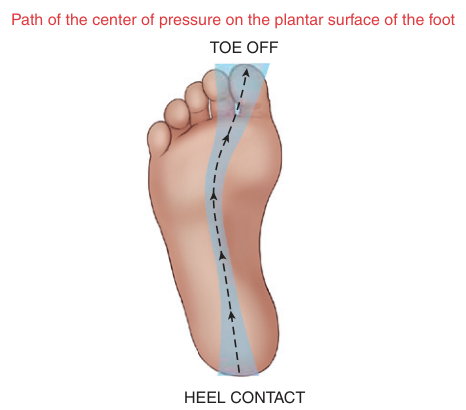
(nhãn trong hình 15.32: Đường đi của tâm áp lực trên bề mặt lòng bàn chân [Path of the center of pressure on the plantar surface of the foot]; Ngón chân rời đất [TOE OFF]; Gót chân chạm đất [HEEL CONTACT])
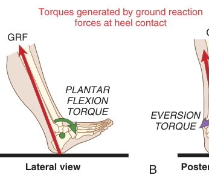
xoay của khớp talocrural (vòng tròn màu xanh lá), từ đó tạo ra mô-men gập lòng bàn chân tại cổ chân (A). Mô-men ngoại sinh này đòi hỏi sự tạo ra một mô-men nội sinh gập mu bàn chân đối kháng bởi các cơ gập mu bàn chân tại cổ chân.
Trong (B), vị trí bên ngoài của lực phản ứng từ mặt đất trên xương gót chân (so với điểm gần giữa của nó được biểu diễn bằng vòng tròn màu tím) tạo ra mô-men lộn ra ngoài tại khớp dưới sên. Xu hướng này được kiểm soát một phần
bởi hành động của tibialis anterior.
(nhãn trong hình 15.33: Lực phản ứng từ mặt đất [GRF]; Các mô-men do lực phản ứng từ mặt đất tạo ra khi gót chân chạm đất [Torques generated by ground reaction forces at heel contact]; Nhìn bên [Lateral view]; Nhìn sau [Posterior view]; MÔ-MEN GẬP LÒNG BÀN CHÂN [PLANTAR FLEXION TORQUE]; MÔ-MEN LỘN RA NGOÀI [EVERSION TORQUE]; Bảng A [A]; Bảng B [B])
Mô-men khớp và công suất (Joint Torques and Powers): Trong dáng đi, các lực phản ứng từ mặt đất áp dụng dưới bàn chân tạo ra mô-men ngoại sinh trên các khớp của chi dưới.
Điều này được minh họa trong Hình 15.34. Trong giai đoạn đáp ứng tải trọng ở chi phải, đường tác dụng của lực phản ứng từ mặt đất nằm phía sau cổ chân và gối nhưng phía trước hông. Kết quả là, các lực phản ứng từ mặt đất khi gót chân chạm đất tạo ra
gập lòng cổ chân, gập gối, và gập hông. Để ngăn chi dưới bị sụp đổ, các mô-men ngoài này được chống lại bởi các mô-men trong do sự kích hoạt của các cơ gập mu cổ chân (ankle dorsiflexors), các cơ duỗi gối, và các cơ duỗi hông tạo ra.
Một phân tích đơn giản hóa về độ lớn của các mô-men trong (do cơ tạo ra), vốn có thể được suy ra từ một sơ đồ cơ thể tương tự Hình 15.34, giả định một điều kiện cân bằng tĩnh. Tuy nhiên, một cách tính chính xác hơn đòi hỏi phải dùng hướng tiếp cận động lực học ngược (inverse dynamic approach), vốn tính đến tính chất động của hành động.⁸ Hướng tiếp cận này đòi hỏi phải biết các đặc điểm nhân trắc học của cá thể về khối lượng các phân đoạn, vị trí trọng tâm (CoM) của các phân đoạn, ma trận quán tính tại trọng tâm khối lượng của các phân đoạn, độ lớn chính xác của vị trí và chuyển động cơ thể (tốc độ dài và vận tốc góc của từng phân đoạn), và các lực phản ứng từ mặt đất trong suốt chu kỳ dáng đi (xem lại Hình 15.5). Trong chương này, phần lớn dữ liệu về các mô-men trong khi đi bộ được xây dựng dựa trên hướng tiếp cận động lực học ngược.
Như đã nêu trước đó, sự kích hoạt của các cơ tạo ra phần lớn các mô-men trong điều khiển chuyển động khớp, đặc biệt là ở các vị trí giữa tầm vận động. Mô-men trong này gắn với hoạt động cơ tâm thu khi khớp chuyển động theo hướng tác động của cơ; ngược lại, mô-men trong gắn với hoạt động cơ tâm ly khi khớp chuyển động ngược hướng tác động của cơ. Trong cả hai trường hợp, độ lớn của mô-men trong tương đối phù hợp với mô tả về hoạt động cơ đã trình bày trước đó trong chương này.
Các mô-men trong cũng có thể được tạo ra bởi các lực thụ động sinh ra từ sự biến dạng và phục hồi của các mô liên kết, chẳng hạn như bao khớp, gân, và dây chằng. Không phải lúc nào cũng có thể khẳng định chắc chắn sự đóng góp tương đối của các lực chủ động và thụ động đối với mô-men trong chi phối qua một khớp. Tuy nhiên, trong một số trường hợp, ví dụ ở giữa tầm vận động, việc xác định các cấu trúc chịu trách nhiệm (khả dĩ nhất là các cơ đang hoạt động) có thể là một quá trình suy diễn khá đơn giản; nhưng trong các trường hợp khác, ví dụ gần cuối tầm vận động, có thể cần phải tính đến sự đóng góp của cả các cấu trúc chủ động lẫn thụ động.²³⁸ Nhiều rối loạn dáng đi liên quan đến yếu cơ dựa nhiều vào các lực căng thụ động được tạo ra ở tầm cuối vị trí của một khớp nhằm cung cấp các mô-men trong cần thiết cho việc đi lại.
Các tài liệu thường dùng thuật ngữ mô-men khớp trong thuần (net internal joint torque) nhằm tính đến sự đồng hoạt động của các nhóm cơ chủ vận - đối vận. Chẳng hạn, mô-men gập do các cơ gập hông tạo ra trong pha đung đưa có thể đi kèm với sự kích hoạt nhẹ (tâm ly) của các cơ duỗi hông. Về lý thuyết, mô-men duỗi này bị trừ đi khỏi mô-men gập hông, qua đó cho ra một mô-men gập thuần. Mặc dù khi đi bộ mô-men đối kháng này có lẽ nhỏ, nhưng đây là điều cần cân nhắc, đặc biệt trong các bệnh lý như đột quỵ hoặc bệnh Parkinson. Chương này không nhất quán dùng từ bổ nghĩa “thuần” (net), mặc dù ý nghĩa này được ngầm hiểu.
Khái niệm mô-men trong mang lại cái nhìn sâu sắc có giá trị về vai trò của các cơ và mô liên kết cụ thể trong việc kiểm soát một khớp khi đi bộ. Tuy nhiên, mô-men trong không mô tả tốc độ sinh công của các cơ hay của sự biến dạng thụ động của các mô liên kết; điều này đòi hỏi phải biết về công suất. Công suất khớp là tích của mô-men khớp trong thuần và vận tốc góc khớp. Công suất khớp phản ánh tốc độ ròng sinh năng lượng hoặc hấp thụ năng lượng của tất cả các cơ và các mô liên kết khác băng qua một khớp. Giá trị dương chỉ ra sự sinh công suất, phản ánh hoạt động cơ tâm thu và sự giải phóng năng lượng từ các mô liên kết trước đó bị kéo dãn. Ngược lại, giá trị âm chỉ ra sự hấp thụ công suất, phản ánh hoạt động cơ tâm ly và sự kéo dãn của các mô liên kết thụ động.²³⁸ Khái niệm sinh và hấp thụ công suất có thể được hiểu rõ hơn qua ví dụ thực hiện một cú nhảy. Trong động tác ngồi xổm ban đầu trước cú nhảy, phần lớn các cơ của chi dưới hoạt động tâm ly, hấp thụ năng lượng. Năng lượng này sau đó được giải phóng nhờ hoạt động cơ tâm thu và sự trả lại năng lượng từ các mô liên kết đã bị kéo dãn trong lúc nâng cơ thể đi lên. Việc áp dụng khái niệm này trong lĩnh vực phát triển sức mạnh được gọi là huấn luyện plyometric (plyometric training).
Cần nhấn mạnh lại rằng sự sinh và hấp thụ công suất dựa trên tích của vận tốc góc và mô-men trong.
Hãy nghĩ, ví dụ, rằng ngay cả một mô-men trong lớn cũng có thể chỉ tạo ra một lượng công suất nhỏ nếu vận tốc góc rất thấp. Ngược lại, cùng mô-men đó tạo ra một công suất rất lớn nếu vận tốc góc lớn. Khái niệm này quan trọng cần cân nhắc khi diễn giải các dữ liệu được trình bày trong các Hình 15.35, 15.36, 15.38, và 15.42.²⁴¹,²⁴²
Các phần sau nêu bật các mô-men và công suất chủ yếu được tạo ra khi đi bộ. Các phần này cũng cung cấp những hình tóm tắt động học và động lực học của khớp hông, gối, và cổ chân trong mặt phẳng sagittal, và của khớp hông trong mặt phẳng frontal. Nghiên cứu kỹ những hình này sẽ giúp hiểu sâu hơn về mối quan hệ giữa chuyển động khớp, mô-men, công suất, và hoạt động cơ trong dáng đi. Nhìn chung, các tài liệu có sự đồng thuận mạnh về kiểu hình và độ lớn của dữ liệu mô-men và công suất trong mặt phẳng sagittal khi đi lại.
Nhưng giống như dữ liệu động học — vì mô-men và công suất được suy ra một phần từ dữ liệu động học — các tài liệu có nhiều biến động hơn đối với dữ liệu mô-men và công suất trong mặt phẳng frontal, đặc biệt là mặt phẳng ngang.⁶⁵,⁸²,¹³⁴,¹⁸⁸
Việc phân tích các mô-men và công suất khớp cho thấy một bức tranh đầy đủ hơn về sinh cơ học của dáng đi.⁵⁷,⁷⁵,²³⁸ Các biến số này giúp xác định sự đóng góp tương đối của các khớp và các nhóm cơ khác nhau vào việc đỡ cơ thể và đẩy cơ thể tiến về phía trước.²⁸,¹²² Sự hiểu biết về dáng đi bệnh lý được hưởng lợi từ loại thông tin này.
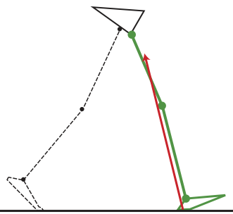
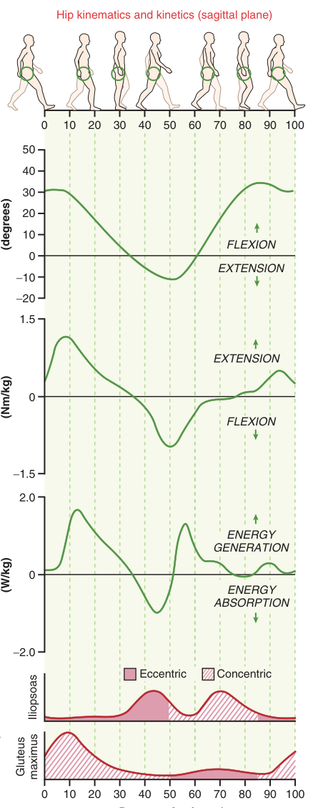
Trong phần đầu của pha đứng, trong mặt phẳng sagittal, hệ cơ khớp hông tạo ra một mô-men duỗi hông nhằm nhận trọng lượng cơ thể, kiểm soát động lượng tiến của thân, và duỗi khớp hông (Hình 15.35A,B và VIDEO 15.7). Trong nửa sau của pha đứng, một mô-men gập được tạo ra để ban đầu giảm tốc độ duỗi hông và sau đó khởi động gập hông trước khi nhấc ngón chân (toe off). Mô-men gập hông này là kết quả của sự kết hợp giữa các lực thụ động từ các cấu trúc phía trước khớp hông, bao gồm bao khớp, và hoạt động của các cơ gập hông.²³⁸ Trong pha đung đưa sớm, một mô-men gập hông nhỏ, tương ứng với hoạt động tâm thu của các cơ gập hông, tiếp tục hỗ trợ gập hông. Trong nửa sau của pha đung đưa (ở khoảng 80% chu kỳ dáng đi), cần một mô-men duỗi để ban đầu giảm tốc chuyển động gập hông, rồi sau đó khởi động duỗi hông.
Hình 15.35C cho thấy đường công suất của khớp hông trong mặt phẳng sagittal. Trong 35% đầu của chu kỳ dáng đi, công suất được sinh ra để đỡ cơ thể, nâng trọng tâm cơ thể (CoM), kiểm soát thân, và đẩy cơ thể tiến về phía trước.²⁴² Sau đó công suất bị hấp thụ cho đến khi đạt khoảng 50% chu kỳ dáng đi, phản ánh sự giảm tốc của duỗi hông do lực cản được các cấu trúc phía trước khớp hông cung cấp cùng với hoạt động tâm ly của các cơ gập hông.²³⁸ Trong pha đứng muộn và pha đung đưa sớm, công suất được sinh ra để gập hông.²³⁸ Một lượng nhỏ biến thiên năng lượng diễn ra trong nửa sau của pha đung đưa, phản ánh sự kết hợp giữa thay đổi vận tốc góc hông và mô-men cần thiết để trước hết giảm tốc gập hông rồi khởi động duỗi hông.
Để hoàn tất mô tả chuyển động hông trong mặt phẳng sagittal khi dáng đi, Hình 15.35D minh họa cường độ tương đối và kiểu hoạt động của hai cơ đối kháng chính của khớp hông. Các diện tích của đường điện cơ đồ được mã hóa để thể hiện hoạt động tâm ly giả định (vùng tô bóng) và hoạt động tâm thu (vùng gạch chéo) của các cơ, dựa trên hướng chuyển động góc của hông. Nhìn chung, các hoạt động cơ tương quan với sự hấp thụ công suất (tác động tâm ly) và sự sinh công suất (tác động tâm thu).
Trong mặt phẳng frontal, một mô-men dang lớn xuất hiện xuyên suốt pha đứng để đỡ khối lượng cơ thể nằm phía trong so với khớp hông (Hình 15.36A,B và VIDEO 15.8). Sự hấp thụ công suất xảy ra trong phần đầu của pha đứng (xem Hình 15.36C) khi bên đối diện của khung chậu ban đầu bị hạ xuống (xem Hình 15.36A).
Các động học này được kiểm soát thông qua hoạt động tâm ly của các cơ dang hông (xem Hình 15.36D). Hai xung sinh công suất được thấy ở khoảng 20% và 50% của chu kỳ dáng đi, khi nửa khung chậu bên đối bên được nâng lên (xem Hình 15.36C).
Trong mặt phẳng ngang, một mô-men xoay ngoài được dùng để giảm tốc xoay trong của xương đùi trong 20% đầu của chu kỳ dáng đi (xem Hình 15.37A). Mô-men này được nối tiếp bởi một mô-men xoay trong đẩy nửa khung chậu bên đối bên tiến về phía trước trong phần còn lại của pha đứng. Hãy lưu ý độ lớn nhỏ của các mô-men này, xấp xỉ 15% so với các mô-men trong mặt phẳng sagittal và frontal. Hoạt động tâm ly của các cơ xoay ngoài hông trong 20% đầu của chu kỳ dáng đi giải thích cho sự hấp thụ công suất được ghi nhận ở thời điểm đó trong Hình 15.37B. Tuy nhiên, như đã nêu trước đó, tính biến động tồn tại trong việc báo cáo các dữ liệu mặt phẳng ngang này của khớp hông, một phần do độ lớn nhỏ hơn của chúng, do những khó khăn trong việc đo đạc động học chính xác trong mặt phẳng ngang, và do nhiều phương pháp xử lý dữ liệu khác nhau.¹⁸⁸,¹⁸⁹
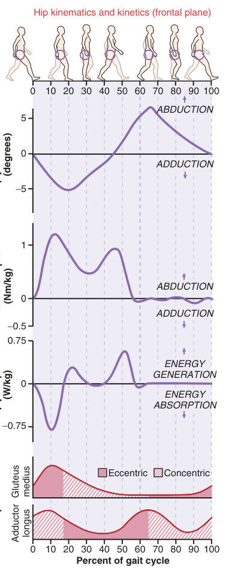
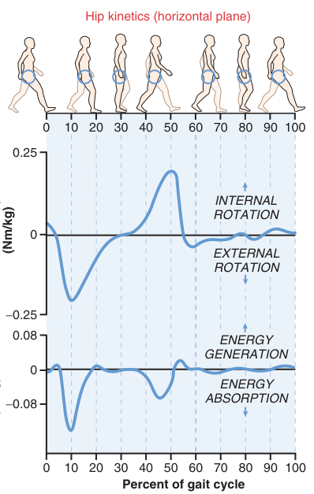
Trong mặt phẳng sagittal, tại thời điểm tiếp đất bằng gót, một mô-men gập ban đầu rất ngắn (4% đầu của chu kỳ dáng đi) về bản chất đảm bảo rằng gối được gập nhằm tạo một sự căn chỉnh gối thích hợp cho việc hấp thụ sốc (Hình 15.38A,B và VIDEO 15.7). Một mô-men duỗi lớn cần cho phản ứng chịu tải nhanh chóng nối tiếp mô-men gập ngắn này. Mô-men duỗi này tiếp diễn cho đến khi đạt 20% của dáng đi, ban đầu để kiểm soát gập gối, sau đó để duỗi gối. Từ 20% đến 50% của chu kỳ dáng đi, một mô-men gập trong hiện diện tại gối mặc dù gối đang duỗi ở 20% đến 40% của chu kỳ dáng đi. Vì lúc đó hoạt động của các cơ hamstrings (nhóm cơ sau đùi) rất ít, mô-men gập trong nhiều khả năng bắt nguồn từ lực căng thụ động của các cấu trúc phía sau gối, bao gồm cả bao khớp, đang bị kéo dãn. Gập gối, nhằm chuẩn bị cho pha đung đưa, bắt đầu ở 40% của chu kỳ dáng đi, phù hợp với chiều hướng của mô-men gập trong tại gối ở 40% đến 50% của chu kỳ dáng đi. Tuy nhiên, ngay trước khi nhấc ngón chân, một mô-men duỗi trong nhỏ xuất hiện để kiểm soát gập gối. Trong pha đung đưa muộn, một mô-men gập trong được tạo ra để giảm tốc duỗi gối.
Đường công suất trong mặt phẳng sagittal phản ánh tác động của hệ cơ xung quanh gối (Hình 15.38C,D). Sự sinh công suất ngắn ngủi ở đầu pha đứng cho thấy mô-men gập gối tạo ra sự gập của gối. Sau đó sự hấp thụ công suất diễn ra trong một khoảnh khắc, phản ánh tác động tâm ly của quadriceps (cơ tứ đầu đùi) ở 5% đến 15% của chu kỳ dáng đi. Tiếp theo là một khoảnh khắc sinh công suất ngắn khác, cho thấy sự khởi đầu duỗi gối do mô-men duỗi gối tiếp diễn tạo ra. Ngay trước khi nhấc ngón chân, ở 50% đến 60% của chu kỳ dáng đi, công suất bị các cơ duỗi gối hấp thụ để kiểm soát gập gối. Trong nửa sau của pha đung đưa, các cơ hamstring hấp thụ năng lượng khi chi đung đưa bị giảm tốc (xem Hình 15.38C,D), cho đến khi khởi động gập gối ngay trước lần tiếp đất bằng gót kế tiếp.
Trong mặt phẳng frontal (Hình 15.39A), trong pha đứng, ngoại trừ thời điểm tiếp đất bằng gót khi một mô-men dang ngoài ngắn xuất hiện (VIDEO 15.8), một mô-men dang trong tại khớp gối đối trọng với mô-men khép ngoài (varus) do hợp lực phản ứng từ mặt đất đi ngang phía trong khớp gối tạo ra (Hình 15.40, VIDEO 15.9).¹,¹⁶⁷ Mô-men dang trong này được tạo ra bởi sự kết hợp của các cấu trúc chủ động và thụ động, bao gồm các cơ vasti (các cơ rộng), gastrocnemius (cơ bụng chân), các cơ hamstring, và có khả năng cả tensor fascia lata (cơ căng mạc đùi) cùng các dây chằng sau-ngoài của gối.¹⁶⁷
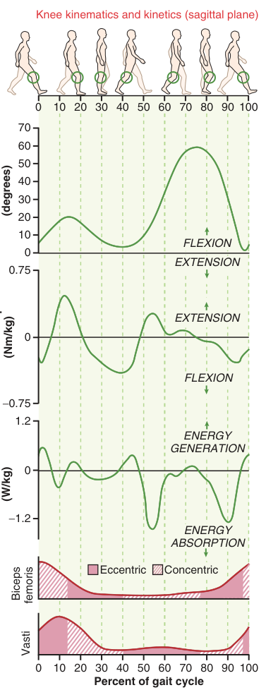
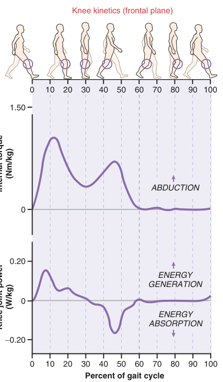
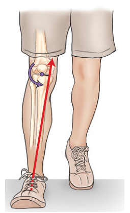
Mặc dù các mô-men lớn (xem Hình 15.39A), các giá trị công suất trong mặt phẳng này rất thấp do lượng chuyển động gối rất nhỏ và do đó vận tốc góc thấp trong pha đứng (xem Hình 15.39B). Tuy vậy, kiểu hình sinh năng lượng ban đầu rồi đến hấp thụ năng lượng gợi ý một chuyển động dang (valgus) gối nhỏ lúc đầu, nối tiếp theo sau bởi một lượng khép (varus) gối nhỏ.
Trong mặt phẳng ngang, các mô-men khớp tại gối tương tự như tại hông, với một mô-men xoay ngoài trong nửa đầu pha đứng và một mô-men xoay trong trong nửa sau (Hình 15.41A). Các mô-men này nhiều khả năng là thụ động, được các dây chằng gối tạo ra để đáp ứng với các mô-men hông chủ động tạo ra trong mặt phẳng ngang.⁶⁴ Trong phản ứng chịu tải, một lượng công suất nhỏ bị hấp thụ khi các cấu trúc bao khớp và dây chằng của gối chống lại chuyển động xoay trong của xương đùi trên xương chày (hoặc xoay ngoài của gối) (xem Hình 15.41B). Một lần nữa, các giá trị mô-men và công suất này có độ lớn nhỏ so với các giá trị trong mặt phẳng sagittal và frontal.
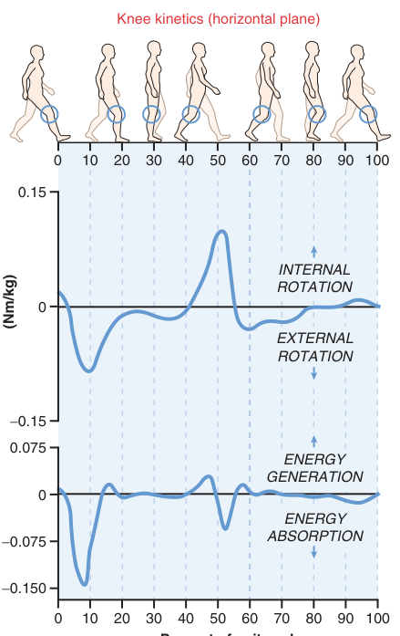
Trong mặt phẳng sagittal, một mô-men gập mu nhỏ được tạo ra tại cổ chân ngay sau khi tiếp đất bằng gót (Hình 15.42A,B và VIDEO 15.7). Mô-men này nhằm kiểm soát chuyển động gập lòng do trọng lượng cơ thể đè lên calcaneus (xương gót) tạo ra (xem lại Hình 15.33). Một mô-men gập lòng chi phối trong phần còn lại của pha đứng, ban đầu để kiểm soát xương chày tiến về phía trước trên bàn chân, sau đó để gập lòng cổ chân tại giai đoạn đẩy (push off). Một mô-men gập mu rất nhỏ hiện diện trong pha đung đưa để giữ cổ chân ở tư thế gập mu nhằm nhấc các ngón chân khỏi mặt đất.
Trong mặt phẳng sagittal, công suất bị hấp thụ ngay sau khi tiếp đất bằng gót do sự giảm tốc gập lòng cổ chân bằng cơ (xem Hình 15.42C). Sau đó một phần năng lượng tiếp tục bị hấp thụ cho đến khi đẩy (push off), phản ánh hoạt động tâm ly của các cơ gập lòng ở 10% đến 40% của chu kỳ dáng đi (xem Hình 15.42D), trong lúc xương chày được đưa tiến từ từ trên bàn chân. Biến dạng góc cổ chân tương đối chậm (và vận tốc giả định) ở 10% đến 40% của chu kỳ dáng đi giải thích các giá trị công suất nhỏ (xem Hình 15.42C). Một sự sinh năng lượng lớn xảy ra tại giai đoạn đẩy (từ 40% đến 60% của chu kỳ dáng đi) chủ yếu do tác động tâm thu của các cơ gập lòng cổ chân, nhưng cũng có một phần đóng góp (khoảng 10% đến 15% của xung công suất) từ việc trả lại năng lượng đã bị hấp thụ thông qua sự kéo dãn của các cơ gập lòng cổ chân trước khi nhấc gót (heel off). Sự sinh công suất được ghi nhận tại giai đoạn đẩy này được nhiều người (mặc dù không phải tất cả) coi là yếu tố đóng góp chính cho việc đẩy cơ thể tiến về phía trước trong dáng đi bình thường, với trọng lực và các cơ duỗi hông cũng có khả năng đóng vai trò quan trọng.²⁸,¹⁰¹,¹⁷⁷
Các mô-men và đặc biệt là các giá trị công suất trong mặt phẳng frontal và mặt phẳng ngang tại vùng chân-cổ chân rất nhỏ và thể hiện biến động lớn giữa những người khác nhau (Hình 15.43 và 15.44). Trong mặt phẳng frontal, pha đứng được đặc trưng bởi một mô-men lật ngoài (eversion) nhỏ ban đầu (từ 0% đến 20% của dáng đi), nối tiếp bởi một mô-men lật trong (inversion) (từ 20% đến 45% của dáng đi) và một mô-men lật ngoài nhỏ hơn ngay trước khi nhấc ngón chân.²⁴² Trong mặt phẳng ngang, một mô-men xoay ngoài hiện diện trong suốt pha đứng. Tuy nhiên, dựa trên mô tả các chuyển động cổ chân và bàn chân được cung cấp trong Chương 14, mô-men xoay ngoài này thực ra nên được gọi là mô-men dang (abduction).
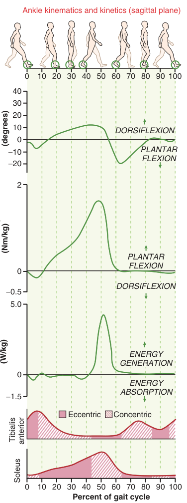
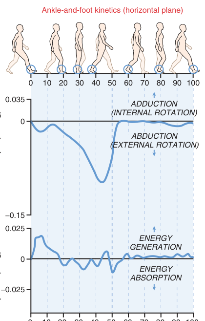
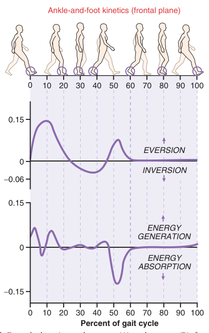
Các mặt khớp, dây chằng, và gân đều chịu các lực nén, lực kéo dãn, hoặc lực trượt lớn khi đi bộ. Việc biết độ lớn của các lực này có ý nghĩa quan trọng, đặc biệt đối với nhà lâm sàng, bác sĩ ngoại chỉnh hình, và kỹ sư sinh cơ học.⁵⁴,⁷¹,¹¹¹,²⁰⁴ Thiết kế các mảnh ghép khớp ngoại khoa nói riêng đòi hỏi các loại dữ liệu này. Các phép đo trực tiếp trên nam và nữ rõ ràng không dễ thu được; do đó các lực này thường được tính gián tiếp thông qua phân tích sinh cơ học, bao gồm các kỹ thuật mô hình hóa và tối ưu hóa.¹⁰,⁸⁸,¹⁴²,²²⁷ Các lực tác dụng lên các cấu trúc khác nhau của chi dưới khi đi lại được trình bày trong Bảng 15.6. Các lực này có thể lớn đến mức đáng ngạc nhiên. Hãy nghĩ, ví dụ, rằng lực nén tại khớp hông khi đi lại với tốc độ 1.4 m/sec đã được đo là 3 đến tận 6.4 lần khối lượng cơ thể.²,¹⁹⁹,²³⁷ Điều đáng lưu ý là cần nhắc lại một lần nữa (xem phần thảo luận về các lực nén khớp hông trong Chương 12) rằng các hoạt động cơ — cả những cơ băng qua và không băng qua khớp — chứ không phải khối lượng cơ thể, là yếu tố đóng góp lớn nhất vào các lực nén khớp của chi dưới khi đi bộ.⁴⁷,²⁰² Vì vậy, các chiến lược hiệu quả nhằm giảm các hoạt động cơ này, ví dụ việc dùng gậy ở bàn tay bên đối bên hoặc giảm tốc độ đi bộ, có thể là chìa khóa để làm giảm các lực tác dụng lên khớp hông đau liên quan đến các thay đổi thoái hóa khớp giai đoạn cuối. Tương tự, việc cân nhắc thích đáng cách các lực này bị ảnh hưởng khi có dáng đi bệnh lý là điều cần thiết trong việc hoạch định các chiến lược phòng ngừa và/hoặc can thiệp.³⁴,⁷⁰,²⁰⁶
| Cấu trúc (loại lực) | Độ lớn (BW) | Tốc độ* |
|---|---|---|
| Cổ chân (Ankle) | ||
| Khớp talocrural (nén cực đại)² | 5.18 | 1.1 m/sec |
| Khớp talocrural (nén cực đại)¹⁹⁹ | 4.2 | 1.4 m/sec |
| Khớp talocrural (nén cực đại)⁴³ | 4.8 | 114 steps/min |
| Khớp talocrural (nén cực đại)¹⁹⁰ | 12.0 | 4.2 m/sec (chạy) |
| Khớp talocrural (trượt trước cực đại)†²⁰⁵ | 0.6 | 116 steps/min |
| Khớp talocrural (trượt sau cực đại)†²⁰⁵ | 0.3 | 116 steps/min |
| Gân Achilles (sức căng cực đại)⁶⁷ | 2.0 | 1.5 m/sec |
| Gân Achilles (sức căng cực đại)⁶⁸ | 4.0 | 1.7 m/sec |
| Gân Achilles (sức căng cực đại)¹⁹⁰ | 7.0 | 4.2 m/sec (chạy) |
| Các cơ gập mu cổ chân (sức căng cực đại)⁴³ | 1.0 | 114 steps/min |
| Cân gan bàn chân (sức căng cực đại)¹⁹⁰ | 2.1 | 4.2 m/sec (chạy) |
| Gối (Knee) | ||
| Khớp chày-đùi (nén cực đại)² | 4.09 | 1.1 m/sec |
| Khớp chày-đùi (nén cực đại)¹⁹⁹ | 4.6 | 1.4 m/sec |
| Khớp chày-đùi (nén cực đại)²⁰⁶ | 3.0 | Không báo cáo |
| Khớp bánh chè-đùi (nén cực đại)¹⁰⁶ | 0.3 | 1.0 m/sec |
| Khớp bánh chè-đùi (nén cực đại)²¹⁷ | 0.8 | 1.0 m/sec |
| Khớp bánh chè-đùi (nén cực đại)² | 0.86 | 1.1 m/sec |
| Khớp bánh chè-đùi (nén cực đại)‡⁸⁸ | 0.53 | 1.4 m/sec |
| Khớp bánh chè-đùi (nén cực đại)¹⁹⁰ | 9.0 | 4.2 m/sec (chạy) |
| Dây chằng chéo trước (sức căng cực đại)⁴³ | 1.5 | 114 steps/min |
| Dây chằng chéo sau (sức căng cực đại)⁴³ | 0.4 | 114 steps/min |
| Gân bánh chè (sức căng cực đại)⁶⁸ | 3.0 | 1.7 m/sec |
| Gân bánh chè (sức căng cực đại)¹⁹⁰ | 5.8 | 4.2 m/sec (chạy) |
| Các cơ hamstrings (sức căng cực đại)⁴³ | 1.1 | 114 steps/min |
| Hông (Hip) | ||
| Hông (nén cực đại)¹⁷¹ | 3.1 | 0.9 m/sec |
| Hông (nén cực đại)² | 3.77 | 1.1 m/sec |
| Hông (nén cực đại)¹⁹⁹ | 6.4 | 1.4 m/sec |
| Hông (nén cực đại)³⁴ | 3.05 | Không báo cáo |
| Cơ khép lớn (adductor magnus) (sức căng cực đại)¹⁷¹ | 0.3 | 0.9 m/sec |
| Cơ mông trung (gluteus medius) (sức căng cực đại)¹⁷¹ | 0.5 | 0.9 m/sec |
*m/sec, mét trên giây.
†Chiều hướng trượt của xương chày trên xương talus.
‡Các giá trị này áp dụng cho việc đi bộ với đôi giày có gót cao 1.27 cm. Lực tăng lên 0.85 BW khi đi bộ với gót cao 6.35 cm và lên 1.29 BW khi đi bộ với gót cao 9.53 cm.
Phần lớn chúng ta coi khả năng đi bộ của mình là điều hiển nhiên. Thực tế là, trừ khi đã từng trực tiếp trải qua một chấn thương hoặc một khiếm khuyết thể chất, chúng ta không coi đi bộ là một nhiệm vụ khó khăn. Tuy nhiên, các thông tin được cung cấp từ đầu đến nay trong chương này nhắc chúng ta về sự phức tạp của việc đi bộ. Nhiều hành động phải diễn ra đồng thời tại từng phần của chu kỳ dáng đi để việc đi lại có thể diễn ra với hiệu suất tối đa.
Dáng đi bình thường đòi hỏi tầm vận động và sức mạnh đầy đủ ở mỗi khớp tham gia. Đi bộ cũng đòi hỏi sự kiểm soát chuyển động tinh vi qua hệ thần kinh trung ương. Sự phức tạp của việc đi bộ tạo ra nhiều cơ hội để kiểu dáng đi bình thường bị ảnh hưởng bởi các khiếm khuyết. Tuy nhiên, tính thích ứng của hệ thống cũng tạo ra nhiều cơ hội để điều chỉnh kiểu dáng đi nhằm bảo tồn được việc “đi bộ”, ngay cả khi có những khiếm khuyết nghiêm trọng.
Trong những trường hợp này, kiểu dáng đi bình thường bị hy sinh để đổi lấy khả năng tự di chuyển từ nơi này đến nơi khác. Tất cả chúng ta đều đã từng sử dụng khả năng thích ứng dáng đi này, dù chỉ là vì một vết phồng rộp đau dưới bàn chân hoặc để đi bộ trên cát nóng ở bãi biển. Về bản chất,
các bước đi, còn gọi là dáng đi vồ (festinating gait). Tổn thương tiểu não đi kèm với một kiểu dáng đi mất điều hòa (ataxic) đặc trưng bởi các bước đi không vững, thiếu phối hợp và một đáy đỡ rộng. Bệnh không dung vận (apraxia), được định nghĩa là một rối loạn vận động tự chủ, xảy ra trong một số quá trình bệnh ảnh hưởng đến người cao tuổi. Apraxia dáng đi có thể dẫn đến một kiểu đi lại đặc trưng bởi đáy đỡ rộng, sải ngắn, và bước rê chân. Những cá nhân có chức năng cảm nhận và thăng bằng bị suy giảm có thể thể hiện một kiểu dáng đi không vững.¹⁹⁷ Với các rối loạn thần kinh, nguyên nhân chính của rối loạn dáng đi là không thể tạo ra và kiểm soát các mức lực cơ phù hợp.
Các khiếm khuyết của hệ cơ-xương, chẳng hạn như tầm vận động khớp quá mức hoặc bị hạn chế và/hoặc sức mạnh cơ hạn chế, có thể gây ra nhiều dạng rối loạn dáng đi khác nhau. Tầm vận động khớp bất thường có thể xảy ra thứ phát sau chấn thương, tình trạng căng cứng, hoặc co rút của các mô liên kết và cơ; cấu trúc khớp bất thường; mất ổn định khớp; hoặc sự lỏng lẻo mô liên kết bẩm sinh. Trong phần lớn các trường hợp, tầm vận động bất thường ở một khớp dẫn đến một dạng bù trừ nào đó ở một hoặc nhiều khớp lân cận.¹¹ Yếu cơ có thể bắt nguồn từ teo do không sử dụng sau một chấn thương hoặc từ dòng dẫn truyền thần kinh bị hạn chế thứ phát sau một tổn thương thần kinh ngoại biên.
Dù nguyên nhân là gì, tình trạng yếu cuối cùng dẫn đến sự điều chỉnh kiểu dáng đi. Một nghiên cứu mô phỏng thú vị của van der Krogt và các cộng sự,²²² nhằm trả lời câu hỏi dáng đi của con người bền vững đến đâu trước sự yếu đi tiến triển của nhiều nhóm cơ khác nhau, đã nêu bật
tính thích ứng của hệ thống vận động. Công trình của họ gợi ý rằng mức yếu cơ tổng thể lên đến 40% vẫn có thể được chấp nhận mà vẫn duy trì được dáng đi tương đối bình thường. Khi sự yếu cơ chỉ giới hạn ở các nhóm cơ riêng lẻ, người ta thấy khả năng đi lại kém dung nạp nhất đối với yếu các cơ gập lòng cổ chân, các cơ dang hông, và các cơ gập hông. Ngược lại, và có lẽ điều này gây bất ngờ, người ta thấy dáng đi khá bền vững (hoặc dung nạp về mặt chức năng) trước sự yếu của các cơ duỗi hông và các cơ duỗi gối. Những phát hiện này chỉ áp dụng cho dáng đi bình thường, chứ không phải dáng đi bệnh lý — vốn có thể đòi hỏi các yêu cầu về sức mạnh khác — có thể gợi ý nên nhắm vào những nhóm cơ nào trong phục hồi chức năng.
Các Bảng 15.7 đến 15.12 và các Hình 15.45 đến 15.50 trình bày một số dạng lệch dáng đi thường gặp nhất được quan sát trong dân chúng nói chung.
Một kiểu dáng đi bất thường hoặc bệnh lý phản ánh nỗ lực bảo tồn khả năng đi lại thông qua sự thích nghi.¹¹ Chi phí của sự lệch dáng đi thường là tăng chi tiêu năng lượng và tác dụng của các ứng suất bất thường lên cơ thể.
Ba nguyên nhân thường gặp của các kiểu dáng đi bệnh lý được liệt kê trong ô. Mỗi nguyên nhân bao gồm nhiều bệnh lý cụ thể và tổng quát. Các dạng lệch được quan sát có thể phản ánh trực tiếp tổn thương cụ thể, hoặc chúng có thể là sự bù trừ sinh cơ học cho một khía cạnh nào đó của tổn thương. Vì vậy, các đặc điểm của dáng đi bệnh lý phụ thuộc vào bản chất của tổn thương cũng như khả năng của cá nhân trong việc bù trừ cho tổn thương đó.
Đau có thể gây ra một kiểu dáng đi bất thường thường được gọi là dáng đi giảm đau (antalgic gait). Kiểu tránh chịu lực trên chi đau thường dẫn đến các đặc điểm đặc trưng. Các phát hiện chính là chiều dài bước chân ngắn hơn, cùng với thời gian pha đứng giảm ở bên đau. Nếu cơn đau liên quan đến sự nén khớp hông do kích hoạt các cơ dang hông, sẽ xảy ra sự dịch chuyển sang bên của đầu và thân về phía chi dưới chịu lực đang đau (xem Chương 12). Nếu nguồn gốc cơn đau không phải ở hông, thân có thể nghiêng nhẹ về phía chi đang đung đưa trong nỗ lực giảm chịu lực trên chi đứng đang bị tổn thương.
Nhiều rối loạn thần kinh, chẳng hạn như tai biến mạch máu não (CVA), bệnh Parkinson, và bại não, có thể gây ra các kiểu dáng đi bất thường.²¹⁰ Co cứng cơ, được định nghĩa là tăng trương lực và sức cản khi kéo dãn, dẫn đến hoạt động cơ không phù hợp và tăng độ cứng. Tình trạng này thường ảnh hưởng đến hệ cơ duỗi ở những người bị bại não và tai biến mạch máu não, tạo ra một kiểu dáng đi trông như cứng chân, kèm theo xu hướng xoay chân ra ngoài (circumduction) và quệt ngón chân. Các cơ khép hông hoạt động quá mức có thể góp phần tạo ra kiểu dáng đi cắt kéo. Bệnh Parkinson liên quan đến thiếu sự đung đưa của tay, thân gập, và các bước ngắn tăng dần tốc độ.
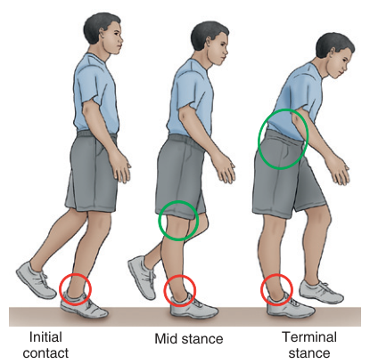
Bài tiếp tục trên trang 695.
Bảng 15.7 — Các dạng lệch dáng đi ở cổ chân và bàn chân thứ phát sau các tổn thương cụ thể của cổ chân và bàn chân
| Dạng lệch dáng đi quan sát được ở cổ chân hoặc bàn chân | Tổn thương khả dĩ | Các tiền sử bệnh lý chọn lọc | Lý do cơ học và/hoặc các sự bù trừ đi kèm |
|---|---|---|---|
| “Foot slap”: gập lòng cổ chân nhanh xảy ra sau khi chạm gót.† Tên gọi foot slap bắt nguồn từ tiếng động đặc trưng do bàn chân trước đập xuống mặt đất. | Yếu nhẹ các cơ gập mu cổ chân | Liệt dây thần kinh fibularis thường gặp và bệnh thần kinh ngoại biên đầu xa | Các cơ gập mu cổ chân có đủ sức để gập mu cổ chân trong pha đung đưa, nhưng không đủ để kiểm soát gập lòng cổ chân sau khi chạm gót. Không có dạng lệch dáng đi nào khác. |
| “Foot flat”: Toàn bộ mặt gan bàn chân chạm mặt đất ngay khi tiếp xúc ban đầu,‡ tiếp theo là gập mu cổ chân thụ động bình thường trong phần còn lại của pha đứng. | Yếu rõ các cơ gập mu cổ chân | Liệt dây thần kinh fibularis thường gặp và bệnh thần kinh ngoại biên đầu xa | Các cơ gập mu có đủ sức để gập mu cổ chân một phần, nhưng không hoàn toàn, trong pha đung đưa. Gập mu bình thường xảy ra trong pha đứng miễn là cổ chân có tầm vận động bình thường. Không có dạng lệch dáng đi nào khác. |
| Tiếp xúc với mặt đất được thực hiện bằng bàn chân trước, sau đó đến vùng gót chân. Gập mu cổ chân thụ động bình thường xảy ra trong pha đứng. | Yếu nặng các cơ gập mu cổ chân | Liệt dây thần kinh fibularis thường gặp và bệnh thần kinh ngoại biên đầu xa | Không thể gập mu cổ chân chủ động trong pha đung đưa. Gập mu bình thường xảy ra trong pha đứng miễn là cổ chân có tầm vận động bình thường. Nhiều khả năng cần gập gối và gập hông quá mức trong pha đung đưa để tránh ngón chân bị vướng vào mặt đất. |
| Tiếp xúc ban đầu được thực hiện bằng bàn chân trước, nhưng gót chân không bao giờ chạm mặt đất trong pha đứng. | Đau gót chân | Gãy xương gót, viêm mạc gân bàn chân | Chiến lược có chủ đích nhằm tránh chịu lực lên gót chân. |
| — | Co rút gập lòng cổ chân (dị tật pes equinus) hoặc co cứng các cơ gập lòng cổ chân | Tổn thương neuron vận động trên, bại não, tai biến mạch máu não (CVA) | Để giữ trọng lượng ở bàn chân trước, gối và hông được giữ ở tư thế gập trong suốt pha đứng, dẫn đến “dáng đi ngồi xổm”. Cần các bước ngắn. |
| Tiếp xúc ban đầu được thực hiện bằng bàn chân trước, và gót chân được đưa xuống mặt đất nhờ sự dịch chuyển xương chày ra sau ở giữa pha đứng (xem Hình 15.45). | Co rút gập lòng cổ chân (dị tật pes equinus) hoặc co cứng các cơ gập lòng cổ chân | Tổn thương neuron vận động trên (bại não, CVA) | Tăng duỗi gối xảy ra trong pha đứng do xương chày không thể tiến về phía trên bàn chân. Gập hông và nghiêng thân quá mức về phía trước ở pha đứng cuối xảy ra nhằm dời trọng lượng cơ thể về phía bàn chân. |
| — | Hàn gõ cổ chân ở tư thế gập lòng | — | Nâng gót chân sớm ở giữa hoặc cuối pha đứng. |
| — | Thiếu gập mu cổ chân | Căng cơ bẩm sinh hoặc mắc phải của các cơ gập lòng cổ chân | Kiểu dáng đi nảy đặc trưng. |
| Gót chân vẫn tiếp xúc với mặt đất ở cuối pha đứng. | Yếu hoặc liệt mềm các cơ gập lòng, có hoặc không kèm tư thế gập mu cố định của cổ chân (dị tật pes calcaneus) | Các rối loạn hệ thần kinh ngoại biên hoặc trung ương | Gập mu cổ chân quá mức dẫn đến tiếp xúc gót kéo dài, giảm đẩy và chiều dài bước chân ngắn hơn. |
| — | Kéo dài phẫu thuật quá mức gân Achilles | — | Tư thế bàn chân lật vào trong và chịu lực lên mặt ngoài của bàn chân trong pha đứng. |
| — | Dị tật pes cavus | Dị tật cấu trúc bẩm sinh | Ghi nhận cung dọc trong cao với khả năng vận động giữa bàn chân giảm trong suốt pha đung đưa và pha đứng. |
| Xảy ra lật bàn chân ra ngoài quá mức trong pha đứng, với không có khả năng lật bàn chân vào trong ở giữa pha đứng. Cung dọc trong bình thường được ghi nhận trong pha đung đưa. | Varus gót chân và/hoặc varus bàn chân trước | Dị tật cấu trúc bẩm sinh hoặc mắc phải | Lật bàn chân ra ngoài quá mức và sự phẳng hóa đi kèm của cung dọc trong có thể kèm theo xoay trong nói chung của chi dưới trong pha đứng. |
| Lật bàn chân ra ngoài quá mức với chịu lực lên phần trong của bàn chân trong pha đứng. Cung dọc trong vẫn không có trong pha đung đưa. | Yếu (liệt) các cơ lật bàn chân vào trong | Tổn thương neuron vận động trên | Có thể xảy ra xoay trong nói chung quá mức của chi dưới trong pha đứng. |
| — | Dị tật pes planus | Dị tật cấu trúc bẩm sinh | Lật bàn chân vào trong và gập lòng cổ chân quá mức xảy ra trong pha đung đưa và khi tiếp xúc ban đầu. |
| — | Dị tật pes equinovarus do co cứng các cơ gập lòng và các cơ lật vào trong | Tổn thương neuron vận động trên (bại não, CVA) | Tiếp xúc với mặt đất được thực hiện bằng bờ ngoài của bàn chân trước. Chịu lực lên bờ ngoài của bàn chân trong pha đứng. |
| Cổ chân vẫn ở tư thế gập lòng trong pha đung đưa và có thể kèm theo việc kéo lê ngón chân, thường được gọi là bàn chân rơi (drop foot; xem Hình 15.46). | Yếu các cơ gập mu và/hoặc dị tật pes equinus | Liệt dây thần kinh fibularis thường gặp | Có thể ghi nhận nhấc hông (hip hiking), xoay hông ra ngoài (hip circumduction), hoặc gập hông và gập gối quá mức của chi dưới đang đung đưa, hoặc nhấc cao chi đứng (vaulting) để nhấc ngón chân khỏi mặt đất và ngăn ngón chân bị kéo lê trong pha đung đưa. |
*Trong ngữ cảnh này, tổn thương là sự mất mát hoặc bất thường về cấu trúc hoặc chức năng sinh lý hay giải phẫu.
†Các thuật ngữ in đậm cho biết thời điểm trong chu kỳ dáng đi mà dạng lệch dáng đi được biểu hiện.
‡Thuật ngữ “tiếp xúc ban đầu” thường được dùng thay cho “chạm gót” để phản ánh thực tế là với nhiều dạng lệch dáng đi, gót chân không phải là bộ phận của bàn chân tiếp xúc với mặt đất trước tiên.
Do đó, trong bảng này, thuật ngữ từ Hình 15.12 được sử dụng vì nó rất phù hợp với việc mô tả các dạng lệch dáng đi.
Bảng 15.8 — Các dạng lệch dáng đi ở cổ chân và bàn chân được thấy như một sự bù trừ cho tổn thương của gối cùng bên, hông cùng bên, hoặc chi dưới đối bên
| Dạng lệch dáng đi quan sát được ở cổ chân hoặc bàn chân | Tổn thương khả dĩ | Lý do cơ học |
|---|---|---|
| Nhấc cao chi đứng (vaulting): cơ chế bù trừ được thể hiện bằng gập lòng cổ chân quá mức ở giữa pha đứng;* dẫn đến chuyển động thẳng đứng quá mức của cơ thể (xem Hình 15.47) | Bất kỳ tổn thương nào của chi dưới đối bên làm giảm gập hông, gập gối, hoặc gập mu cổ chân trong pha đung đưa | Chiến lược được dùng để cho phép bàn chân của chi dưới đối bên dài về mặt chức năng vượt qua mặt đất trong pha đung đưa. |
| Góc bàn chân quá mức trong pha đứng được gọi là xoay ngón chân ra ngoài (toeing-out) | Xoay ra sau cổ xương đùi hoặc các cơ xoay ngoài hông bị căng | Bàn chân ở tư thế xoay ngón chân ra ngoài quá mức do xoay ngoài quá mức của chi dưới. |
| Giảm góc bàn chân bình thường trong pha đứng được gọi là xoay ngón chân vào trong (toeing-in) | Xoay đùi về trước quá mức (femoral anteversion) hoặc co cứng các cơ khép hông và/hoặc các cơ xoay trong hông | Xoay trong nói chung của chi dưới. |
*Các thuật ngữ in đậm cho biết thời điểm trong chu kỳ dáng đi mà dạng lệch dáng đi được biểu hiện. Trong bảng này, thuật ngữ từ Hình 15.12 được sử dụng vì nó rất phù hợp với việc mô tả các dạng lệch dáng đi.
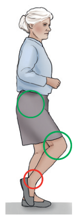
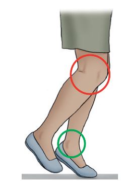
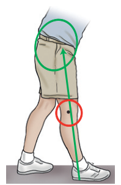
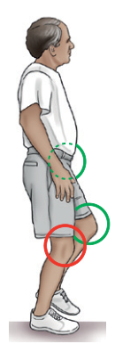
Bảng 15.9 — Các dạng lệch dáng đi ở gối thứ phát sau các tổn thương cụ thể của gối
| Dạng lệch dáng đi quan sát được ở gối | Tổn thương khả dĩ | Các tiền sử bệnh lý chọn lọc | Lý do cơ học và/hoặc các sự bù trừ đi kèm |
|---|---|---|---|
| Gập gối nhanh (đẩy duỗi gối) sau khi tiếp xúc ban đầu* | Co cứng cơ tứ đầu đùi | Tổn thương neuron vận động trên | Tùy thuộc vào tình trạng của các cấu trúc phía sau gối, có thể xảy ra với hoặc không kèm tăng duỗi gối. |
| Gối vẫn duỗi trong phản ứng chịu tải, nhưng không có lực đẩy duỗi | Cơ tứ đầu đùi yếu | Liệt dây thần kinh đùi, bệnh thần kinh do chèn ép L3–L4 | Gối vẫn duỗi hoàn toàn trong suốt pha đứng. Một sự nghiêng thân ra trước đi kèm ở phần đầu pha đứng đưa đường trọng lực của thân hơi về phía trước trục xoay của gối (xem Hình 15.48). Điều này giữ gối duỗi mà không cần hoạt động của các cơ duỗi gối. Dạng lệch dáng đi này có thể dẫn đến kéo dãn quá mức bao khớp sau của gối và cuối cùng là tăng duỗi gối (genu recurvatum) trong pha đứng. |
| Đau gối | Viêm khớp | — | Gối được giữ ở tư thế duỗi để giảm nhu cầu hoạt động của cơ tứ đầu đùi và các lực nén đi kèm. Có thể kèm theo kiểu dáng đi giảm đau đặc trưng bởi thời gian pha đứng giảm và chiều dài bước chân ngắn hơn. |
| Genu recurvatum trong pha đứng | Yếu cơ duỗi gối | Bại liệt | Thứ phát sau kéo dãn tiến triển của bao khớp sau gối. |
| Lực đẩy varus trong pha đứng | Lỏng các cấu trúc khớp dây chằng phía sau và ngoài của gối | Chấn thương hoặc lỏng tiến triển | Lệch varus nhanh của gối ở giữa pha đứng, thường kèm theo tăng duỗi gối. |
| Tư thế gập gối trong pha đứng (xem Hình 15.49) và thiếu duỗi gối ở cuối pha đung đưa | Co rút gập gối >10 độ (genu flexum), hoạt động quá mức của các cơ sau đùi do co cứng | Tổn thương neuron vận động trên | Tăng đi kèm gập hông và gập mu cổ chân trong pha đứng. |
| Đau gối và tràn dịch khớp | Chấn thương hoặc viêm khớp | — | Gối được giữ ở tư thế gập vì đây là tư thế có áp lực nội khớp thấp nhất. |
| Giảm hoặc không có gập gối trong pha đung đưa | Co cứng các cơ duỗi gối | Tổn thương neuron vận động trên | Có thể ghi nhận nhấc hông bù trừ và/hoặc xoay hông ra ngoài bù trừ. |
| Co rút duỗi gối | Bất động hóa hoặc hàn gõ phẫu thuật | — | — |
*Các thuật ngữ in đậm cho biết thời điểm trong chu kỳ dáng đi mà dạng lệch dáng đi được biểu hiện. Trong bảng này, thuật ngữ từ Hình 15.12 được sử dụng vì nó rất phù hợp với việc mô tả các dạng lệch dáng đi.
Bảng 15.10 — Các dạng lệch dáng đi ở gối được thấy như một sự bù trừ cho tổn thương của cổ chân cùng bên, hông cùng bên, hoặc chi dưới đối bên
| Dạng lệch dáng đi quan sát được ở gối | Tổn thương khả dĩ | Lý do cơ học |
|---|---|---|
| Gối được giữ ở tư thế gập trong pha đứng* dù khi khám gối vẫn có tầm vận động bình thường | Các tổn thương ở cổ chân hoặc hông, bao gồm dị tật pes calcaneus, yếu cơ gập lòng, và co rút gập hông | Gập mu cổ chân hoặc gập hông quá mức trong pha đứng ép gối vào tư thế gập. Chi đung đưa đối bên (khỏe mạnh) ghi nhận gập hông và gập gối quá mức để ngón chân vượt qua mặt đất do chi đứng ngắn hơn về mặt chức năng. |
| Tăng duỗi gối (genu recurvatum) từ khi tiếp xúc ban đầu đến trước pha đung đưa | Co rút gập lòng cổ chân (dị tật pes equinus) hoặc co cứng các cơ gập lòng cổ chân | Gối phải tăng duỗi để bù trừ cho sự thiếu dịch chuyển của xương chày về phía trước ở giữa pha đứng (xem Hình 15.45). |
| Dáng đi giảm đau | Chi đứng đau | Đặc trưng bởi chiều dài bước chân và thời gian pha đứng ngắn hơn ở bên chi dưới đau; có thể kèm theo nghiêng thân cùng bên khi đau hông hoặc nghiêng thân đối bên khi đau gối và bàn chân. |
| Gập gối quá mức trong pha đung đưa | Thiếu gập mu cổ chân của chi đung đưa hoặc chi đứng ngắn | Chiến lược nhằm tăng khoảng cách ngón chân vượt qua mặt đất của chi đung đưa; thường kèm theo tăng gập hông. |
*Các thuật ngữ in đậm cho biết thời điểm trong chu kỳ dáng đi mà dạng lệch dáng đi được biểu hiện. Trong bảng này, thuật ngữ từ Hình 15.12 được sử dụng vì nó rất phù hợp với việc mô tả các dạng lệch dáng đi.
Bảng 15.11 — Các dạng lệch dáng đi ở hông, khung chậu, và thân thứ phát sau các tổn thương cụ thể của hông, khung chậu, hoặc thân
| Dạng lệch dáng đi quan sát được ở hông, khung chậu, hoặc thân | Tổn thương khả dĩ | Các tiền sử bệnh lý chọn lọc | Lý do cơ học và/hoặc các sự bù trừ đi kèm |
|---|---|---|---|
| Nghiêng thân ra sau trong phản ứng chịu tải.* | Các cơ duỗi hông yếu | Bại liệt | Động tác này đưa đường trọng lực của thân về phía sau hông và giảm nhu cầu mô-men duỗi hông. |
| Nghiêng thân sang bên về phía chi đứng; vì động tác này bù trừ cho sự yếu, nó thường được gọi là dáng đi Trendelenburg bù trừ và được gọi là dáng đi lảo đảo nếu xảy ra hai bên. | Yếu rõ các cơ dang hông | Guillain-Barré hoặc bại liệt | Dời thân về phía chi chịu lực giúp giảm yêu cầu đặt lên các cơ dang hông. |
| — | Đau hông | Viêm khớp | Dời thân về phía chi dưới chịu lực giúp giảm các lực nén khớp liên quan đến hoạt động của các cơ dang hông (xem Hình 15.16). |
| Sụt quá mức xuống dưới của khung chậu bên đối bên trong pha đứng. (Được gọi là dấu Trendelenburg dương tính nếu có khi đứng trên một chân.) | Yếu nhẹ cơ mông trung (gluteus medius) của chi đứng | Guillain-Barré hoặc bại liệt | Mặc dù dấu Trendelenburg có thể thấy khi đứng trên một chân, dáng đi Trendelenburg bù trừ thường thấy ở trường hợp yếu nặng các cơ dang hông. |
| Gập thân về phía trước ở giữa và cuối pha đứng, khi hông được đưa qua bàn chân. | Co rút gập hông | Viêm xương khớp hông | Nghiêng thân về trước được dùng để bù trừ cho sự thiếu duỗi hông. Một sự thích nghi thay thế có thể là tăng ưỡn cột sống thắt lưng. |
| — | Đau hông | Viêm xương khớp hông | Giữ hông ở 30 độ gập giúp giảm thiểu áp lực nội khớp. |
| Ưỡn cột sống thắt lưng quá mức ở pha đứng cuối. | Co rút gập hông | Viêm khớp | Sự thiếu duỗi hông ở pha đứng cuối được bù trừ bằng tăng ưỡn cột sống. |
| Thân chới với ra sau và về phía chi đứng không bị ảnh hưởng từ khi nhấc gót đến giữa pha đung đưa. | Yếu cơ gập hông | Chèn ép dây thần kinh L2–L3 | Gập hông được tạo ra thụ động nhờ chuyển động ra sau của thân. |
| Nghiêng khung chậu ra sau khi bắt đầu pha đung đưa. | Yếu cơ gập hông | Chèn ép dây thần kinh L2–L3 | Các cơ bụng được dùng khi bắt đầu pha đung đưa để đưa chi đung đưa tiến về phía trước. |
| Xoay hông ra ngoài (hip circumduction): chuyển động hình bán nguyệt của hông trong pha đung đưa (xem Hình 15.50). | Yếu cơ gập hông | Chèn ép dây thần kinh L2–L3 | Chuyển động hình bán nguyệt kết hợp gập hông, dang hông, và xoay khung chậu về phía trước. |
*Các thuật ngữ in đậm cho biết thời điểm trong chu kỳ dáng đi mà dạng lệch dáng đi được biểu hiện. Trong bảng này, thuật ngữ từ Hình 15.12 được sử dụng vì nó rất phù hợp với việc mô tả các dạng lệch dáng đi.
Bảng 15.12 — Các dạng lệch dáng đi ở hông, khung chậu, và thân được thấy như một sự bù trừ cho tổn thương của cổ chân cùng bên, gối cùng bên, hoặc chi dưới đối bên
| Dạng lệch dáng đi quan sát được ở hông, khung chậu, hoặc thân | Tổn thương khả dĩ | Lý do cơ học |
|---|---|---|
| Gập thân về phía trước trong phản ứng chịu tải* | Cơ tứ đầu đùi yếu | Thân được đưa về phía trước để dời đường trọng lực về phía trước trục xoay của gối, từ đó giảm nhu cầu dùng cơ duỗi gối (xem Hình 15.48). |
| Gập thân về phía trước ở giữa và cuối pha đứng | Dị tật pes equinus | Thiếu gập mu cổ chân trong pha đứng dẫn đến tăng duỗi gối ở giữa pha đứng và nghiêng thân về trước ở pha đứng cuối nhằm dời trọng lượng cơ thể lên bàn chân đứng (xem Hình 15.45). |
| Gập hông và gập gối quá mức trong pha đung đưa (xem Hình 15.46) | Thường do thiếu gập mu cổ chân của chi đung đưa; cũng có thể do chi dưới đối bên đứng ngắn về mặt chức năng hoặc giải phẫu | Được dùng để ngón chân của chi đung đưa vượt qua mặt đất |
| Xoay hông ra ngoài trong pha đung đưa (xem Hình 15.50) | Thiếu rút ngắn chi đung đưa thứ phát sau giảm gập hông, giảm gập gối, và/hoặc thiếu gập mu cổ chân | Được dùng để nhấc bàn chân của chi đung đưa khỏi mặt đất và tạo khoảng trống cho ngón chân |
| Nhấc hông (nâng khung chậu cùng bên trong pha đung đưa) | Thiếu rút ngắn chi đung đưa thứ phát sau giảm gập hông, giảm gập gối, và/hoặc thiếu gập mu cổ chân | Được dùng để nhấc bàn chân của chi dưới đung đưa khỏi mặt đất và tạo khoảng trống cho ngón chân. |
| Chi đứng ngắn về mặt chức năng hoặc giải phẫu | — | — |
| Xoay ngang khung chậu ra sau quá mức ở bên chi dưới đứng trong pha đứng cuối | Yếu cơ gập lòng cổ chân | Yếu cơ gập lòng cổ chân dẫn đến tiếp xúc gót kéo dài và thiếu đẩy. Tăng xoay ngang khung chậu được dùng để kéo dài chi và duy trì chiều dài bước chân thỏa đáng. |
*Các thuật ngữ in đậm cho biết thời điểm trong chu kỳ dáng đi mà dạng lệch dáng đi được biểu hiện. Trong bảng này, thuật ngữ từ Hình 15.12 được sử dụng vì nó rất phù hợp với việc mô tả các dạng lệch dáng đi.
Đi bộ tích hợp chức năng của tất cả các vùng của chi dưới. Để hiểu trọn vẹn vận động học của sự di chuyển, người đọc phải xem xét các tương tác cơ-xương gần như đồng thời và tương đối nhanh diễn ra giữa nhiều khớp và nhiều mặt phẳng, trên cả hai chi dưới và, ở một mức độ nhất định, ở thân và chi trên. Bên cạnh đó, các lực bên trong và bên ngoài tác động lên mỗi chi dưới cũng phải được xem xét cả khi chi đang di chuyển tự do lẫn khi nó được cố định xuống mặt đất.
Để đặt nền tảng cho việc nghiên cứu hoạt động phức tạp của con người này, vốn rất cơ bản trong đời sống hằng ngày, trước hết cần xác định các thuật ngữ và quy ước. Một trong những quy ước đầu tiên được thảo luận trong chương này là mô tả đi bộ dựa trên một chu kỳ dáng đi duy nhất. Chu kỳ dáng đi gồm tất cả các sự kiện xảy ra giữa hai lần tiếp xúc gót liên tiếp của cùng một chi; đi lại ở vận tốc đi bộ ổn định đơn giản là sự lặp lại của chu kỳ dáng đi đó.
Với cách phân chia đơn giản nhất, một chu kỳ dáng đi gồm một pha đứng (từ chạm gót đến nhấc ngón chân) bao gồm khoảng 60% đầu của chu kỳ dáng đi, và một pha đung đưa bao gồm phần còn lại của chu kỳ (từ nhấc ngón chân đến lần chạm gót kế tiếp).
Xuyên suốt chu kỳ dáng đi, các khớp chính của chi dưới xoay để đưa cơ thể tiến về phía trước đồng thời cung cấp sự chống đỡ chống lại các mô-men ngoài do trọng lực áp đặt. Khi cơ thể được đẩy về phía trước, trọng tâm cơ thể (CoM) cũng dịch chuyển nhẹ theo cả hướng trong–ngoài và hướng thẳng đứng. Sự dịch chuyển tuần hoàn tự nhiên của cơ thể tạo cho đi bộ đặc tính của một con lắc ngược, cho phép chuyển giao tuần hoàn và mượt mà giữa năng lượng cơ học thế năng và động năng. Cơ chế như vậy có lợi cho việc giảm thiểu chi phí năng lượng.
Trong chương này, sinh cơ học liên quan đến sự dịch chuyển về phía trước của toàn bộ cơ thể được tập trung vào sự xoay của các khớp chi dưới — cụ thể nhất là hông, gối, cổ chân, và bàn chân. Tầm vận động lớn nhất của khớp xảy ra trong mặt phẳng sagittal, phản ánh hướng tiến chủ yếu của chuyển động cơ thể. Ít rõ ràng hơn, nhưng cũng quan trọng không kém, là các sự xoay trong mặt phẳng frontal và mặt phẳng ngang của các khớp chi dưới. Ngoài đóng góp khiêm tốn của chúng vào sự tiến về phía trước của cơ thể, các chuyển động ngoài mặt phẳng sagittal này còn giúp tối ưu hóa sự dịch chuyển theo phương thẳng đứng và sang hai bên của trọng tâm cơ thể.
Trong khi đi bộ, một hạn chế vận động ở bất kỳ khớp nào cũng có thể có ảnh hưởng sâu sắc đến chất lượng và hiệu quả chuyển động của toàn bộ cơ thể. Hãy xem xét, ví dụ, kiểu đi bị rối loạn sau khi mất riêng lẻ 15 độ duỗi gối cuối cùng. Việc đi bộ vẫn có thể thực hiện, nhưng chỉ với các sự bù trừ động học đáng kể từ các khớp khác, đổi lấy chi phí tăng chi tiêu năng lượng.
Khoảng 50 cơ vận hành ở mỗi chi dưới.
Không có cơ nào có tác động giống hệt cơ khác, và tất cả đều hoạt động ở mức độ khác nhau vào một thời điểm hay thời điểm khác trong chu kỳ dáng đi. Nhiều cơ trong số này biểu hiện các tác động cụ thể của mình theo nhiều cách: tâm ly, tâm thu, hoặc đẳng trường; qua một hoặc nhiều khớp; hoặc như cơ di chuyển đoạn xa hoặc đoạn gần của một khớp, hay kết hợp cả hai. Hãy xem xét, ví dụ, cơ tibialis posterior (cơ chày sau). Trước giữa pha đứng, cơ hoạt động tâm ly khi nó kiểm soát sự hạ thấp của cung dọc trong. Sau giữa pha đứng, cũng cơ đó hoạt động tâm thu khi nó nâng cung và hỗ trợ xoay ngoài của xương chày. Hoạt động tâm thu này tiếp tục khi nó góp phần tạo ra mô-men gập lòng cổ chân trong giai đoạn đẩy. Sự ức chế hoạt động của cơ này do yếu hoặc do bệnh lý gân có thể can thiệp đáng kể vào sự chuyển hóa tự nhiên của bàn chân từ một nền tảng dễ uốn ở phản ứng chịu tải sang một đòn bẩy cứng hơn ở giai đoạn đẩy.
Hiểu được mức độ chi tiết này về tác động của từng cơ là điều cần thiết để nhận biết cũng như điều trị các cơ chế bệnh học tiềm ẩn liên quan.
Một dạng lệch dáng đi rõ rệt rất có thể xảy ra nếu một cơ hoặc nhóm cơ không kích hoạt vào thời điểm và cường độ nỗ lực thích hợp. Dạng lệch thường có thể được giảm thiểu nhờ các sự bù trừ sinh cơ học tự nhiên được cá nhân học. Tuy nhiên, thường thì vai trò của nhà lâm sàng là xây dựng các chiến lược có thể bù trừ hoặc loại bỏ dạng lệch dáng đi. Các chiến lược này thường gồm các bài tập nhằm tăng khả năng kiểm soát, sức mạnh, hoặc độ dẻo dai của các cơ được nhắm đến.
Bên cạnh đó, các chiến lược thường bao gồm giáo dục bệnh nhân, các hoạt động huấn luyện sức bền và huấn luyện lại dáng đi, và việc sử dụng nẹp, chỉnh hình, thiết bị kích thích điện, phản hồi sinh học, hoặc các thiết bị hỗ trợ khác chẳng hạn như gậy.
Đi bộ có thể được xem là biểu hiện tối thượng của các tương tác thần kinh-cơ và cơ-xương ở phần dưới cơ thể. Mặc dù vận động học của đi bộ rất phức tạp, sự hiểu biết thấu đáo về chủ đề này đóng vai trò là nền tảng trực tiếp hoặc gián tiếp cho việc đánh giá và điều trị hầu hết các rối loạn liên quan đến chi dưới. Các rối loạn này rất đa dạng, bao gồm chấn thương cơ tại chỗ hoặc do sử dụng quá mức, các khớp đau hoặc được thay thế, chấn thương hoặc bệnh lý thần kinh, giảm sức bền sau nằm viện hoặc phẫu thuật, và tình trạng cắt cụt, liệt, hoặc mất khả năng kiểm soát một chi dưới. Vận động học được trình bày trong chương này được dự định như một điểm khởi đầu cho một quá trình học tập kéo dài suốt đời.
Chương này đã dành nhiều sự chú ý cho kiểu kích hoạt của một cơ hoặc nhóm cơ trong các phần khác nhau của chu kỳ dáng đi. Nói một cách tổng quát, kích hoạt đẳng trường xảy ra khi một cơ đang hoạt động không thay đổi chiều dài. Kích hoạt tâm thu xảy ra khi cơ đang hoạt động thực sự ngắn lại (co lại), trong khi kích hoạt tâm ly xảy ra khi cơ đang hoạt động bị kéo dãn bởi một lực khác chiếm ưu thế hơn. Như đã mô tả trong Chương 3, lực đầu ra của một cơ phụ thuộc vào kiểu kích hoạt của nó, với mức nỗ lực không đổi. Vì vậy, vấn đề này rất liên quan đến việc nghiên cứu dáng đi.
Trong hầu hết các môi trường lâm sàng hoặc phòng thí nghiệm, kiểu kích hoạt cụ thể của một cơ chỉ có thể được ước tính bằng cách so sánh tác động đã được thiết lập của nó với hướng xoay của khớp mà cơ đó băng qua.¹⁰ Ví dụ, cơ tibialis anterior (cơ chày trước) được cho là trải qua kích hoạt tâm ly sau khi chạm gót, dựa trên thực tế là cổ chân đang gập lòng tại thời điểm cơ gập mu chính này hoạt động. Liên kết lâm sàng này xem xét các biến số có thể can thiệp vào logic của phương pháp phân tích thực hành này.
Trước hết, hãy xem xét một cơ đa khớp đang hoạt động của chi dưới. Không phải hiếm khi một cơ như vậy co lại qua một khớp trong khi đồng thời bị kéo dãn qua một khớp ở gần hoặc xa hơn.⁹⁰ Động học khớp được minh họa trong Hình 15.13 đưa ra cơ hội xem xét một tình huống như vậy ở các cơ đa khớp tác động chủ yếu trong mặt phẳng sagittal. Ví dụ, có thể không thể xác định với sự chắc chắn tuyệt đối sự thay đổi ròng về chiều dài của cơ rectus femoris (cơ trực đùi) đang hoạt động khi nó bị kéo dãn qua duỗi hông và đồng thời bị rút ngắn do gập gối ở 15% đến 40% của chu kỳ dáng đi. Tương tự, sự thay đổi ròng thực tế về chiều dài của cơ gastrocnemius (cơ bụng chân) có thể rất khó xác định khi người ta xem xét sự kết hợp của các chuyển động cổ chân và gối trong khi đi bộ.⁷³,⁹⁷ Làm tăng thêm sự phức tạp của quá trình ước tính kiểu kích hoạt mà một cơ đang trải qua trong khi đi bộ là thực tế là sự thay đổi ròng về chiều dài của cơ bị ảnh hưởng cả bởi sự thay đổi chiều dài của các sợi cơ đang hoạt động lẫn sự kéo dãn của gân liên quan. Dựa trên độ cứng của mình, một gân có thể kéo dãn đáng kể khi chịu tải. Ví dụ, gân Achilles kéo dãn tới 8% chiều dài nghỉ của nó sau một cơn co cực đại của các cơ bắp chân.¹²⁶ Độ lớn của sự kéo dãn phụ thuộc vào cấu trúc cụ thể của đơn vị cơ-gân, nhưng cũng phụ thuộc vào lượng và tốc độ áp dụng của lực.
Tính chất sinh lý này của gân có thể che giấu sự thay đổi chiều dài thực tế của toàn bộ đơn vị cơ-gân trong khi kích hoạt.
Có thể rằng trong một số điều kiện động học, tùy thuộc vào cơ, sự co lại tổng thể của các sợi cơ có thể được bù trừ bởi một sự kéo dãn tương tự của gân. Trong ví dụ này, một sự kích hoạt từng được cho là đẳng trường cho toàn bộ đơn vị cơ-gân (dựa trên sự không thay đổi của góc khớp) thực tế có thể hơi tâm thu ở mức độ của các sợi cơ.
Siêu âm theo thời gian thực hiện nay cho phép thực hiện các phép đo trực tiếp chiều dài của các sợi cơ trong chuyển động năng.⁴⁰,¹²⁷ Kỹ thuật này đã được dùng để nghiên cứu chức năng cụ thể của cơ vastus lateralis (cơ rộng ngoài đùi) trong dáng đi ngay sau khi gót chân chạm đất, một thời điểm mà cơ này được biết là bị kích hoạt mạnh và được cho là hoạt động tâm ly. Mặc dù gối đang chuyển động về phía gập, chiều dài của các sợi cơ thực tế vẫn duy trì tương đối không đổi—tải trọng đặt lên cơ đã gây ra sự kéo dãn đáng kể của gân cơ vastus lateralis. Các tác giả của cùng nghiên cứu cũng quan sát thấy kết quả tương tự khi phân tích các sợi cơ của cơ tibialis anterior (cơ chày trước) ngay sau khi gót chân chạm đất—một thời điểm mà cơ bị kích hoạt mạnh trong khi cổ chân chuyển động về phía gập lòng. Trong cả hai tình huống, một sự kích hoạt từng được cho là tâm ly cho toàn bộ đơn vị cơ-gân đã được quan sát là về bản chất gần như đẳng trường ở mức độ của các sợi cơ. Sự kéo dãn của
gân có khả năng được dùng để giảm chấn tác động lên toàn bộ cơ và để tích trữ năng lượng đàn hồi.⁴⁰ Những dữ liệu này phơi bày sự đơn giản hóa quá mức trong việc giải thích kiểu tác động của một cơ chỉ dựa trên dữ liệu điện cơ đồ và động học. Ở một số cơ, đặc biệt trong các chuyển động cung ngắn như những chuyển động đã mô tả trước đó, sự đàn hồi của gân (và của các mô liên kết khác) có thể giải thích một phần hoặc toàn bộ những thay đổi trong chuyển động của khớp. Thật thú vị khi xem xét rằng hai yếu tố được nhấn mạnh trong liên kết lâm sàng này—các cơ đa khớp và sự đàn hồi của gân—có thể giảm thiểu sự thay đổi chiều dài của sợi cơ trong lúc vận động, từ đó giúp giữ cơ ở một vùng tối ưu hơn trên đường cong chiều dài–căng.
Liên kết lâm sàng này không nhằm phủ nhận phương pháp thực nghiệm chuẩn dùng để suy luận liệu một cơ có đang hoạt động đẳng trường, tâm thu, hay tâm ly hay không, mà nhấn mạnh sự hạn chế tiềm tàng của phương pháp này trong việc đánh giá tất cả các cơ trên một dải chức năng rộng.
Như sẽ được mô tả trong Chương 16, chạy bộ — một bước tiến tự nhiên trong việc tăng tốc độ di chuyển bằng hai chân — có chung nhiều nguyên lý vận động học cơ bản với đi bộ. Tuy nhiên, cần xem xét những khác biệt đáng kể để đưa ra đánh giá và can thiệp tối ưu cho những người tìm kiếm chăm sóc do chấn thương liên quan đến chạy,¹⁵⁷ vì không phải hiếm khi những người có tổn thương ở chi dưới bị đau khi chạy mà không bị đau khi đi bộ.
Tương tự như đi bộ, chạy là một hành động chu kỳ có thể được tóm tắt thông qua mô tả của một chu kỳ đầy đủ—từ lần tiếp xúc mặt đất của một chi đến lần tiếp xúc mặt đất kế tiếp của cùng chi đó. Cũng như với đi bộ, chạy có thể được mô tả bằng các kiểu chuyển động, động học và động lực học của khớp, cũng như cường độ và thời điểm kích hoạt cơ. Hơn nữa, cũng như với đi bộ, các biến số này khác biệt đáng kể trên toàn bộ dải vận tốc chạy, từ chạy bộ chậm đến chạy nước rút.
Vận động học phụ thuộc vào tốc độ của chạy thường được liên quan đến các chấn thương liên quan đến chạy, vì chạy nhanh hơn thường đòi hỏi biên độ chuyển động lớn hơn, vận tốc chuyển động lớn hơn, và sự tạo ra lực lớn hơn. Sự thiếu các sự thích ứng tiến triển đối với những yêu cầu lớn hơn này trên hệ thống vận động có khả năng dẫn đến các chấn thương như bệnh gân và gãy xương do căng thẳng.⁹³,²²³
Một cá nhân chuyển từ đi bộ sang chạy, thường không phải vì không có khả năng đi nhanh hơn, mà vì hiệu suất năng lượng lớn hơn của chạy so với đi bộ khi đạt vận tốc xấp xỉ 2.1 đến 2.2 m/sec.⁵⁶,¹⁸⁶,¹⁹¹,¹⁹⁶
Theo định nghĩa, chạy xảy ra khi hai giai đoạn hai chân chịu lực trong đi bộ được thay thế bằng hai giai đoạn “bay”—khi cả hai bàn chân đều rời khỏi mặt đất cùng một lúc. Khi chuyển từ đi bộ sang chạy, thời gian của pha đứng ở mỗi chi giảm đột ngột từ 60% xuống 40% của chu kỳ. Vận tốc chạy càng nhanh thì thời gian của chu kỳ chạy càng ngắn và tỷ lệ phần trăm của pha đứng trong tổng chu kỳ chạy càng thấp (Hình 15.51).⁵⁹,²¹⁵
Về mặt cơ học, khi chuyển từ đi bộ sang chạy, cơ thể đã chuyển từ một kiểu di chuyển giống như con lắc ngược sang một kiểu giống như “lò xo”.³²,¹⁸³ Sự chuyển giao tuần hoàn của năng lượng thế năng và động năng diễn ra trên một chi đứng tương đối duỗi thẳng trong lúc đi bộ đã được thay thế bằng một chiến lược tận dụng năng lượng đàn hồi được tích trữ ban đầu rồi giải phóng bởi các cơ, gân, và các mô liên kết khác trên một chi đứng tương đối gập trong lúc chạy (Hình 15.52).
Qua quan sát bằng mắt, rõ ràng là các chuyển động của các khớp chi dưới diễn ra nhanh hơn nhiều trong lúc chạy so với đi bộ. Điều này chủ yếu là do thời gian ngắn hơn của chu kỳ dáng đi khi chạy, nhưng cũng—dù mức độ thấp hơn—do biên độ chuyển động khớp lớn hơn được dùng khi chạy.³⁵ Mô tả chi tiết về động học khớp trong lúc chạy được trình bày trong Chương 16.
Như có thể đoán trước, Hình 15.53 cho thấy lực phản ứng từ mặt đất thẳng đứng trong lúc chạy có độ lớn lớn hơn so với lúc đi bộ. Trong hình minh họa này, dạng đỉnh đơn mượt mà của đường cong đặc trưng cho một người chạy tiếp xúc ban đầu bằng bàn chân trước.⁴ Nếu người chạy tiếp xúc ban đầu bằng bàn chân sau, thì lực phản ứng từ mặt đất thẳng đứng sẽ có thêm một đỉnh va chạm ban đầu rất đặc trưng trong 10% đầu của pha đứng (xem Chương 16). Lực phản ứng từ mặt đất thẳng đứng trong lúc chạy có thể cao tới ba đến bốn lần trọng lượng cơ thể, và trở nên lớn hơn dần khi vận tốc chạy tăng.³⁵,¹⁰⁰
Những lực phản ứng từ mặt đất lớn hơn kết hợp với các chuyển động góc khớp thường lớn hơn trong lúc chạy có liên quan đến các mô-men khớp bên trong lớn hơn. Như đã mô tả trong chương này, công suất qua một khớp là tích của mô-men và vận tốc góc.
Vì vậy, không có gì đáng ngạc nhiên khi công suất được tạo ra hoặc hấp thụ qua các khớp của chi dưới trong lúc chạy lớn hơn gấp nhiều lần so với mức thấy được trong lúc đi bộ (Hình 15.54).¹⁶³ Sự hiện diện của công suất và mô-men lớn hơn được thể hiện qua sự gia tăng đáng kể về kích hoạt cơ được đo được trong lúc chạy so với đi bộ (xem Cappellini và cộng sự³² để biết các đồ thị kích hoạt cơ của 32 cơ trên một dải vận tốc đi bộ và chạy).
Từ góc độ chấn thương và phòng ngừa, một trong những khác biệt quan trọng nhất giữa đi bộ và chạy là độ lớn của các lực tác động lên hệ thống vận động (xem Bảng 15.6). Độ lớn và tính lặp đi lặp lại của những lực này đòi hỏi sức mạnh và sức bền thỏa đáng của hệ cơ chi dưới, cũng như sự thích ứng mô tiến triển theo thời gian.
Hơn nữa, điều quan trọng là phải xem xét ảnh hưởng của các yếu tố như vận tốc chạy và độ dốc bề mặt, những yếu tố làm thay đổi động học và động lực học của chạy cũng như các yêu cầu đặt lên hệ thống theo cách có khả năng dẫn đến chấn thương. Về mặt lâm sàng, “lỗi huấn luyện” dẫn đến chấn thương trong lúc chạy được nhận diện và hiểu rõ hơn khi có kiến thức tốt hơn về cách động học và động lực học thay đổi trên một dải liên tục các vận tốc đi bộ và chạy. Chương 16 trình bày nhiều thông tin hơn về vận động học của chạy.
Đáp án cho các câu hỏi nghiên cứu có thể được tìm thấy trên trang web Evolve.
Tất cả các video cho chương này đều có thể được truy cập bằng cách quét mã QR nằm ở bên phải.